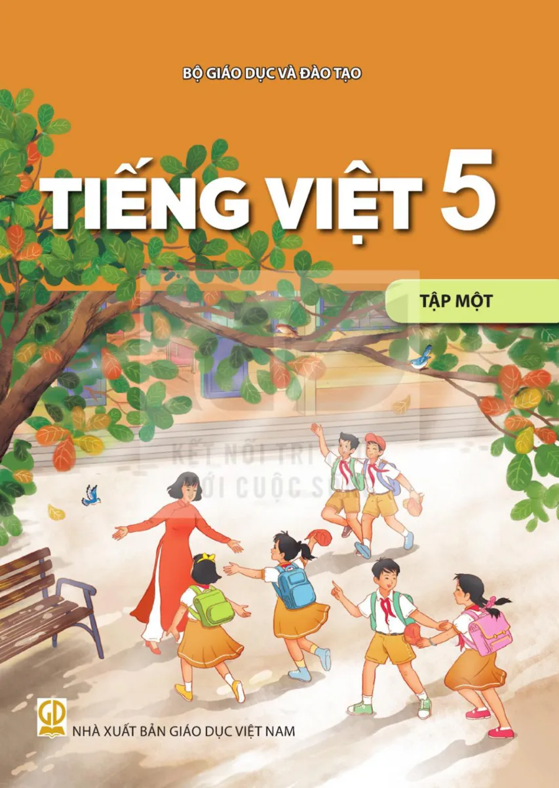
BÙI MẠNH HÙNG (Tổng Chủ biên)
TRẤN THỊ HIẾN LƯƠNG (Chủ biên)
ĐỒ HỒNG DƯƠNG - NGUYÊN LÊ HẰNG
TRỊNH CẨM LAN - VŨ THỊ LAN - TRẤN KIM PHƯỢNG
SE
TẬP MỘT
NHÀ XUẤT BẢN GIÁO DỤC VIỆT NAM
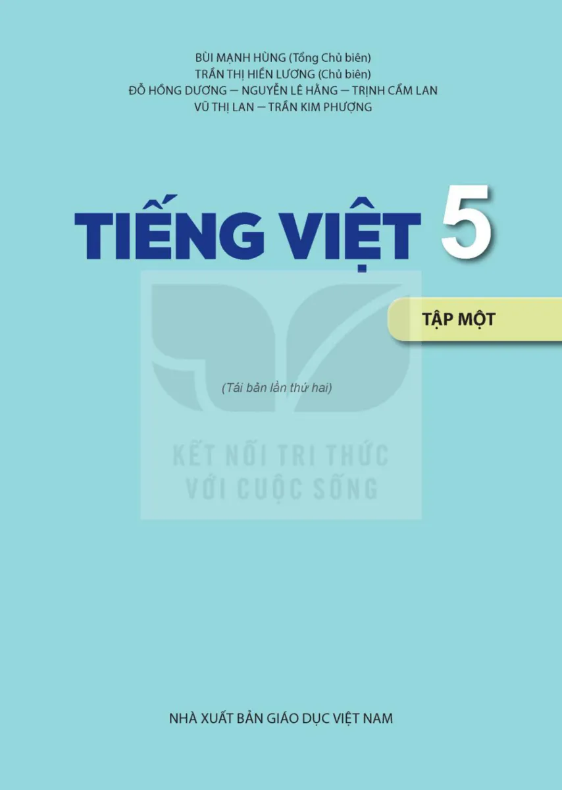
BÙI MẠNH HÙNG (Tổng Chủ biên)
TRẦN THỊ HIẾN LƯƠNG (Chủ biên)
ĐỖ HỒNG DƯƠNG — NGUYỄN LÊ HẰNG - TRỊNH CẨM LAN
VŨ THỊ LAN - TRẦN KIM PHƯỢNG
TIẾNG VIỆT
TẬP MỘT
KẾT NỐI TRI THỨP
VI IMNililk SŨNG
NHÀ XUẤT BẢN GIÁO DỤC VIỆT NAM
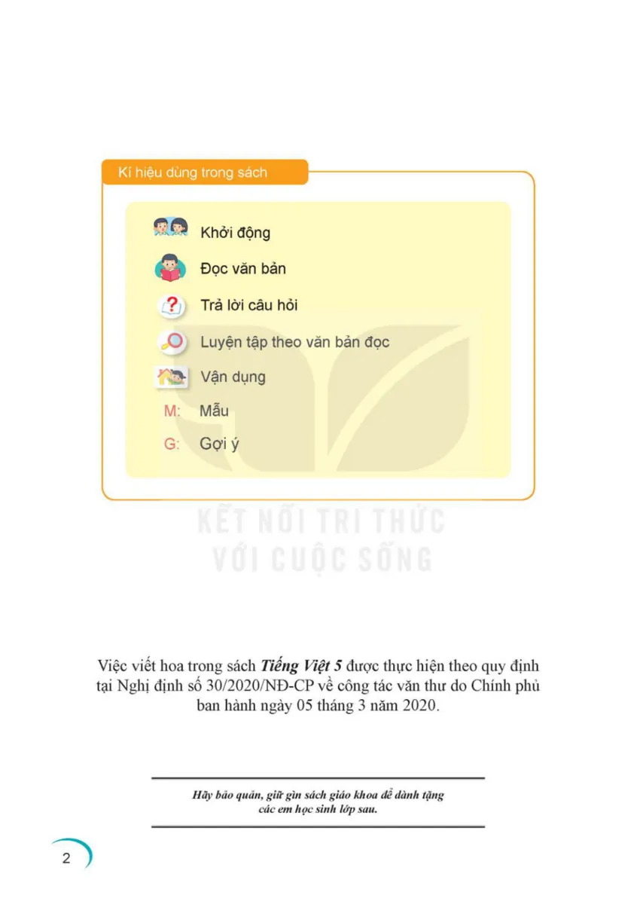
SÁCH GIÁO KHOA ĐƯỢC THẤM ĐỊNH BỞI HỘI ĐỒNG QUỐC GIA
THẤM ĐỊNH SÁCH GIÁO KHOA LỚP 5
(Theo Quyết định số 1963/QĐ-BGDĐT ngày 05 tháng 7 năm 2023
của Bộ trưởng Bộ Giáo dục và Đào tạo)
KẾT NũI TRI THỨP
VữI 0Uñ0
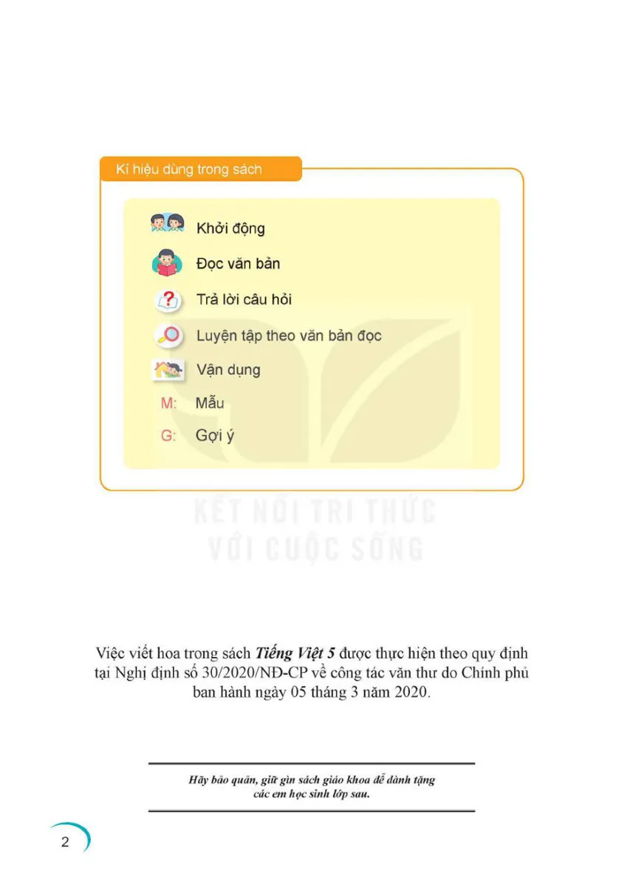
Kí hiệu dùng trong sách
Khởi động
Đọc văn bản
Trả lời câu hỏi
Luyện tập theo văn bản đọc
Vận dụng
Mẫu
Gợi ý
KET NñI TRỊ THRứỨP
VữI 0Uñ0
Việc viết hoa trong sách Ti lắng Việt 5 được thực hiện theo quy định
tại Nghị định số 30/2020/NĐ-CP về công tác văn thư do Chính phủ
ban hành ngày 05 tháng 3 năm 2020.
Hấp bảo quản, giữ gìn sách giáo khoa để dành tặng
các em học sinh lớp sau.
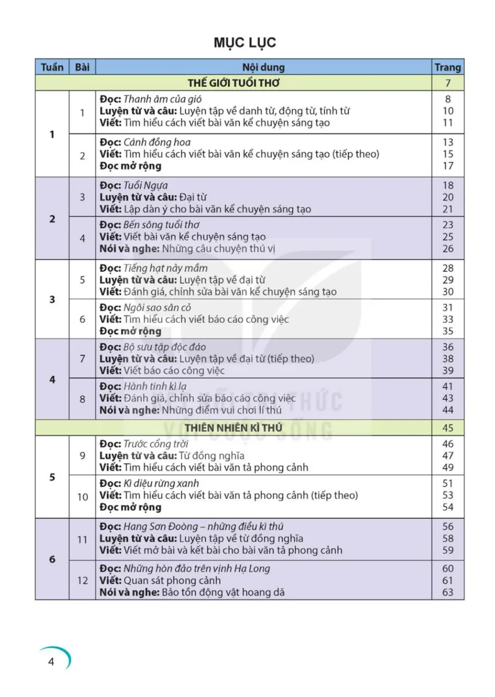
LỠI NÓI ĐẦU
Các em học sinh yêu quy!
Chúc mừng các em đã bước vào năm học cuối của cấp
Tiểu học. Năm học cuối cấp này chắc chắn sẽ có ý nghĩa rất lớn
đối với các em. Để góp phần giúp các em có một năm học lí thú
và bổ ích, sách Tiếng Việt 5 mang đến cho các em những bài văn,
bài thơ, câu chuyện, vở kịch,... được tuyển chọn theo hệ thống
chủ điểm tiếp nối và mở rộng hơn so với những năm học trước.
Thông qua việc luyện đọc, viết, nói và nghe, các bài học giúp
các em cảm nhận được sâu sắc hơn thế giới tuổi thơ tươi đẹp,
có những hiểu biết phong phú hơn về những điều kì diệu,
thú vị, đáng yêu, đáng quý của thiên nhiên, con người và
cuộc sống. Sau từng bài học, các em được bồi đắp, phát triển
những phẩm chất, năng lực cần thiết để tự tin bước vào hành trình
học tập mới.
Trong sách Tiếng Việt 5, các hoạt động khám phá kiến thức và
rèn luyện kĩ năng của môn học được thiết kế đáp ứng yêu cầu của
chương trình, phù hợp với cách học của học sinh lớp 5, đồng thời
có sự chuẩn bị, hướng dẫn để các em có thể dễ dàng bắt nhịp với
cách học môn Ngữ văn ở cấp Trung học cơ sở.
Chúc các em học tập thật vui và hiệu quả.
CÁC TÁC GIẢ
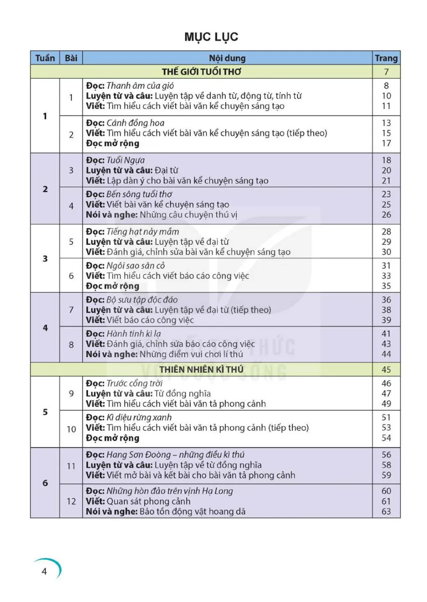
MỤC LỤC
Tuần
Bài
Nội dung
THẾ GIỚI TUỔI THƠ
"
Đọc: Thanh âm của gió
ổ
Luyện từ và câu: Luyện tập về danh từ, động từ, tính từ
10
Viết: Tìm hiểu cách viết bài văn kể chuyện sáng tạo
11
Đọc: Cánh đồng hoa
13
Viết: Tìm hiểu cách viết bài văn kể chuyện sáng tạo (tiếp theo)
15
Đọc mở rộng
17
Đọc: Tuổi Ngựa
18.
5
Luyện từ và câu: Đại từ
20
Viết: Lập dàn ý cho bài văn kể chuyện sáng tạo
2
Đọc: Bến sông tuổi thơ
23
Viết: Viết bài văn kể chuyện sáng tạo
Nói và nghe: Những câu chuyện thú vị
26
Đọc: Tiếng hạt nảy mâm
28
5
Luyện từ và câu: Luyện tập về đại từ
29
Viết: Đánh giá, chỉnh sửa bài văn kể chuyện sáng tạo
30.
3
Đọc: Ngồi sao sân cô
31
6
Viết: Tìm hiểu cách viết báo cáo công việc
33
Đọc mở rộng
35.
Đọc: Bộ sưu tập độc đáo
36.
Luyện từ và câu: Luyện tập về đại từ (tiếp theo)
38
Viết: Viết báo cáo công việc
39.
ñ
Đọc: Hành tỉnh kì la
41
le)
Viết: Đánh giá, chỉnh sửa báo cáo công việc
43
Nói và nghe: Những điểm vui chơi lí thú
44
THIÊN NHIÊN KÌ THÚ
45
Đọc: Trước cổng trời
46
Luyện từ và câu: Từ đồng nghĩa
47
Viết: Tìm hiểu cách viết bài văn tả phong cảnh
43
5
Đọc: Kì điệu rừng xanh:
95]
10
Viết: Tìm hiểu cách viết bài văn tả phong cảnh (tiếp theo)
53
Đọc mở rộng
54
Đọc: Hang Sơn Đoòng - những điều kì thú
56
11
Luyện từ và cầu: Luyện tập về từ đồng nghĩa
S8
Viết: Viết mở bài và kết bài cho bài văn tả phong cảnh
59
6
Đọc: Những hòn đảo trên vịnh Hạ Long
60
12
Viết: Quan sát phong cảnh
61
Nói và nghe: Bảo tồn động vật hoang dã
63
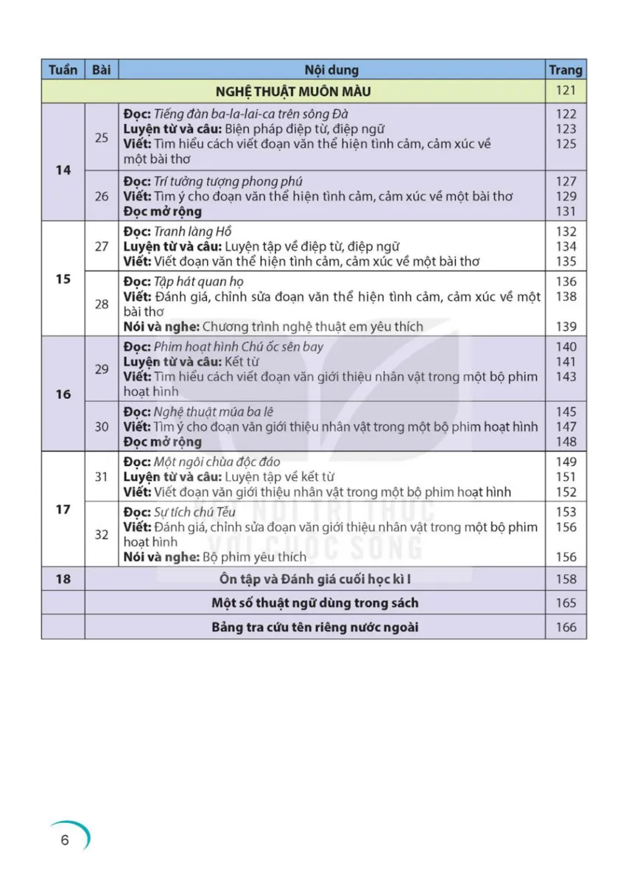
Tuần
Bài
Nội dung
Đọc: Mầm non
64
13
Luyện từ và câu: Từ đa nghĩa
65
Viết: Lập dàn ý cho bài văn tả phong cảnh
67
7
Đọc: Những ngọn núi nóng rẫy
68
14 Viết: Viết đoạn văn tả phong cảnh
70
Đọc mở rộng
71
Đọc: Bài ca về mặt trời
⁄2
15
Luyện từ và câu: Luyện tập về từ đa nghĩa
⁄4
Viết: Viết bài văn tả phong cảnh
5
8
Đọc: Xin chào, Xa-ha-ra
76
16
Viết: Đánh giá, chỉnh sửa bài văn tả phong cảnh
78
Nói và nghe: Cảnh đẹp thiên nhiên
79
9
Ôn tập và Đánh giá giữa học kì I
80
TRÊN CON ĐƯỜNG HỌC TẬP
88
Đọc: Thư gửi các học sinh
89
Luyện từ và câu: Sử dụng từ điển
30
17 Viết: Tìm hiểu cách viết đoạn văn giới thiệu nhân vật trong
9]
10
một cuốn sách
Đọc: Tấm gương tự học
34
18
Viết: Tìm ý cho đoạn văn giới thiệu nhân vật trong một cuốn sách
36
Đọc mở rộng.
97
Đọc: Trải nghiệm để sáng tạo
98
19
Luyện từ và câu: Luyện tập sử dụng từ điển
100
Viết: Viết đoạn văn giới thiệu nhân vật trong một cuốn sách
101
11
Đọc: Khổ luyện thành tài
102
20 Viết: Đánh giá, chỉnh sửa đoạn văn giới thiệu nhân vật trong một cuốn sách
104
Nói và nghe: Cuốn sách tôi yêu
104
Đọc: Thể giới trong trang sách
105
21
Luyện từ và câu: Dấu gạch ngang
106
Viết: Tìm hiểu cách viết đoạn văn thể hiện tình cảm, cảm xúc về
108
12
một câu chuyện
Đọc: Từ những câu chuyện ấu thơ
110
22 Viết: Tìm ý cho đoạn văn thể hiện tình cảm, cảm xúc về một câu chuyện
112
Đọc mở rộng
115
Đọc: Giới thiệu sách Dế Mèn phiêu lưu kí
114
23 Luyện từ và câu: Luyện tập về dấu gạch ngang
115
Viết: Viết đoạn văn thể hiện tình cảm, cảm xúc về một câu chuyện
116
13
Đọc: Tỉnh thần học tập của nhà Phi-lít
117
Viết: Đánh giá, chỉnh sửa đoạn văn thể hiện tình cảm, cảm xúc về một
24
115
câu chuyện
Nói và nghe: Lợi ích của tự học
120
5
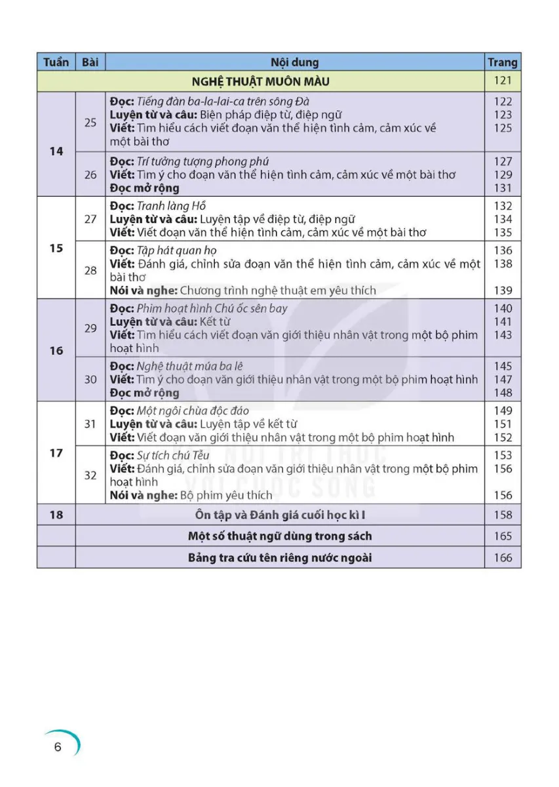
Tuần |
Nội dung
NGHỆ THUẬT MUÔN MÀU
121
Đọc: Tiếng đàn ba-la-lai-ca trên sông Đà
122
25
Luyện từ và câu: Biện pháp điệp từ, điệp ngữ
123
Viết: Tìm hiểu cách viết đoạn văn thể hiện tình cảm, cảm xúc về
125
một bài thơ.
14
Đọc: Trí tưởng tượng phong phú
15
26
Viết: Tìm ý cho đoạn văn thể hiện tình cảm, cảm xúc về một bài thơ
129
Đọc mở rộng
131
Đọc: Tranh làng Hỗ
132
27 Luyện từ và câu: Luyện tập về điệp từ, điệp ngữ
134
Viết: Viết đoạn văn thể hiện tình cảm, cảm xúc về một bài thơ
135
15
Đọc: lập hát quan họ
136
28
Viết: Đánh giá, chỉnh sửa đoạn văn thể hiện tình cảm, câm xúc về một
138
bài thơ
Nói và nghe: Chương trình nghệ thuật em yêu thích
139
Đọc: Phim hoạt hình Chú ốc sên bay
140
29
Luyện từ và câu: Kết từ
141
Viết: Tìm hiểu cách viết đoạn văn giới thiệu nhân vật trong một bộ phim
143
16
hoạt hình
Đọc: Nghệ thuật múa ba lê
145
30 Viết: Tìm ý cho đoạn văn giới thiệu nhân vật trong một bộ phim hoạt hình
147
Đọc mở rộng
148
Đọc: Một ngôi chùa độc đáo
149
3]
Luyện từ và câu: | uyên tập về kết từ
151
Viết: Viết đoạn văn giới th lệu nhân vật trong một bộ phim hoạt hình
152
Đọc: Sự tích chú Têu
153
32
Viết: Đánh giá, chỉnh sửa đoạn văn giới thiệu nhân vật trong một bộ phim
156
hoạt hình
Nói và nghe: Bộ phim yêu thích
156
18
Ôn tập và Đánh giá cuối học kì I
158
Một số thuật ngữ dùng trong sách
165
Bảng tra cứu tên riêng nước ngoài
166
6B
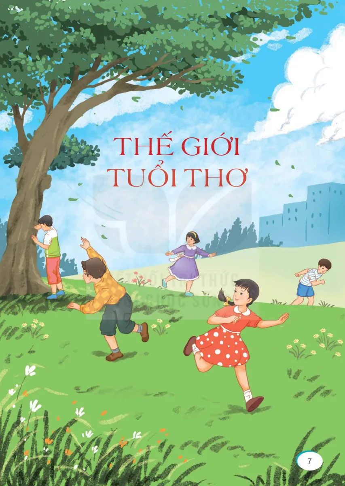
THÊẾC( GIỚƠI
TUOI THC}
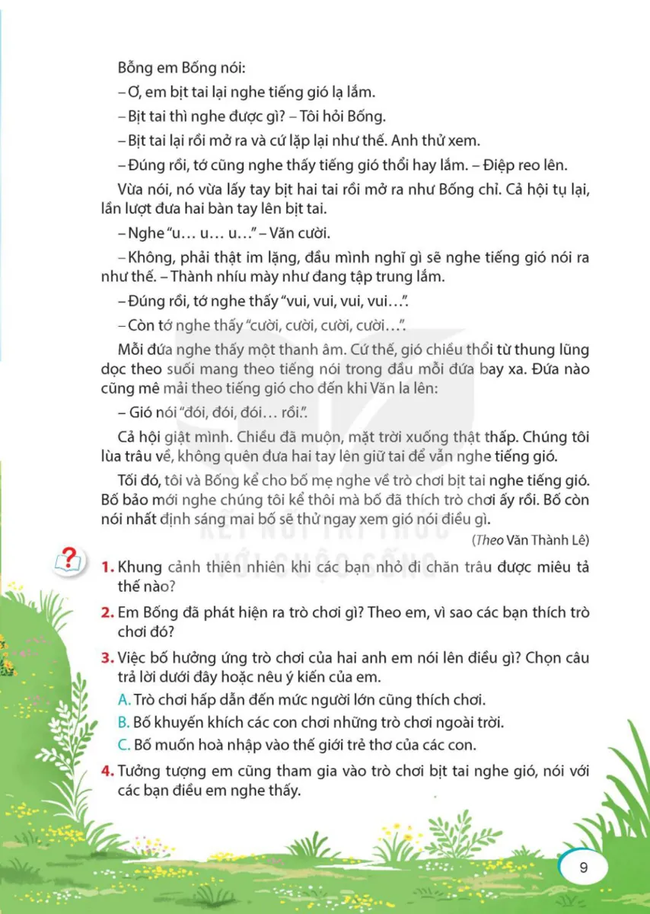
Tuân
Bài
THANH ÂM CỦA GIÓ
ĐỌC
Trao đổi với bạn về những trò chơi hoặc hoạt động em thường thực hiện
khi chơi ngoài trời.
THANH ÂM CỦA GIÓ
Chúng tôi đi chăn trâu, ngày nào cũng qua
suối. Có gần nước tươi tốt nên trâu ăn cỏ men
theo bờ suối, rồi mới lên đối, lên núi. Suối nhỏ,
nước trong vắt, nắng chiếu xuống đáy làm cát,
sỏi ánh lên lấp lánh. Một bên suối là đồng cỏ
rộng, tha hổ cho gió rong chơi. Thỉnh thoảng
gió lại vút qua tai chúng tôi như đùa nghịch.
Chiều về, đàn trâu no cổ đằm mình dưới
suối, chúng tôi tha thần tìm những viên đá đẹp
cho mình.
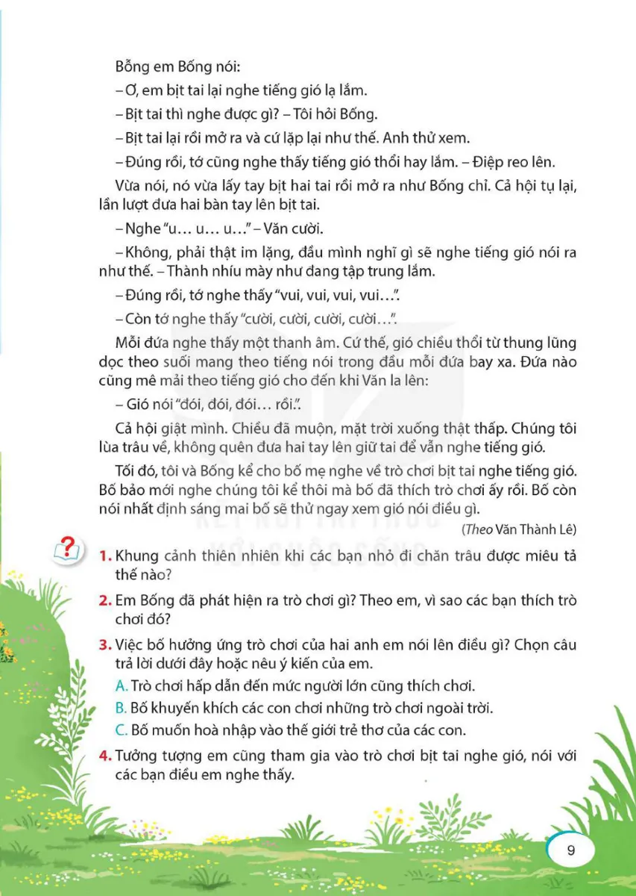
Bỗng em Bống nói:
—ØƠ, em bịt tai lại nghe tiếng gió lạ lắm.
-Bịt tai thì nghe được gì? - Tôi hỏi Bống.
—Bịt tai lại rồi mở ra và cứ lặp lại như thế. Anh thử xem.
- Đúng rồi, tớ cũng nghe thấy tiếng gió thổi hay lắm. - Điệp reo lên.
Vừa nói, nó vừa lẫy tay bịt hai tai rồi mở ra như Bống chỉ. Cả hội tụ lại,
lần lượt đưa hai bàn tay lên bịt tai.
—=Nghe “u... U... u...”— Văn cười.
- Không, phải thật im lặng, đầu mình nghĩ gì sẽ nghe tiếng gió nói ra
như thế. - Thành nhíu mày như đang tập trung lắm.
- Đúng rồi, tớ nghe thấy “vui, vui, vui, vui...”
- Còn tớ nghe thấy “cười, cười, cười, cười... .“
Mỗi đứa nghe thấy một thanh âm. Cứ thế, gió chiều thổi từ thung lũng
dọc theo suối mang theo tiếng nói trong đầu mỗi đứa bay xa. Đứa nào
cũng mê mải theo tiếng gió cho đến khi Văn la lên:
- Gió nói “đói, đói, đói... rồi”.
Cả hội giật mình. Chiều đã muộn, mặt trời xuống thật thấp. Chúng tôi
lùa trâu về, không quên đưa hai tay lên giữ tai để vẫn nghe tiếng gió.
Tối đó, tôi và Bống kể cho bố mẹ nghe về trò chơi bịt tai nghe tiếng gió.
Bố bảo mới nghe chúng tôi kể thôi mà bố đã thích trò chơi ấy rồi. Bố còn
nói nhất định sáng mai bố sẽ thử ngay xem gió nói điều gì.
(Theo Văn Thành Lê)
1. Khung cảnh thiên nhiên khi các bạn nhỏ đi chăn trâu được miêu tả
thế nào?
2. Em Bống đã phát hiện ra trò chơi gì? Theo em, vì sao các bạn thích trò
chơi đó?
3. Việc bố hưởng ứng trò chơi của hai anh em nói lên điều gì? Chọn câu
trả lời dưới đây hoặc nêu ý kiến của em.
A. Trò chơi hấp dẫn đến mức người lớn cũng thích chơi.
B. Bố khuyến khích các con chơi những trò chơi ngoài trời.
C. Bố muốn hoà nhập vào thế giới trẻ thơ của các con.
4. Tưởng tượng em cũng tham gia vào trò chơi bịt tai nghe gió, nói với
các bạn điều em nghe thấy.
9
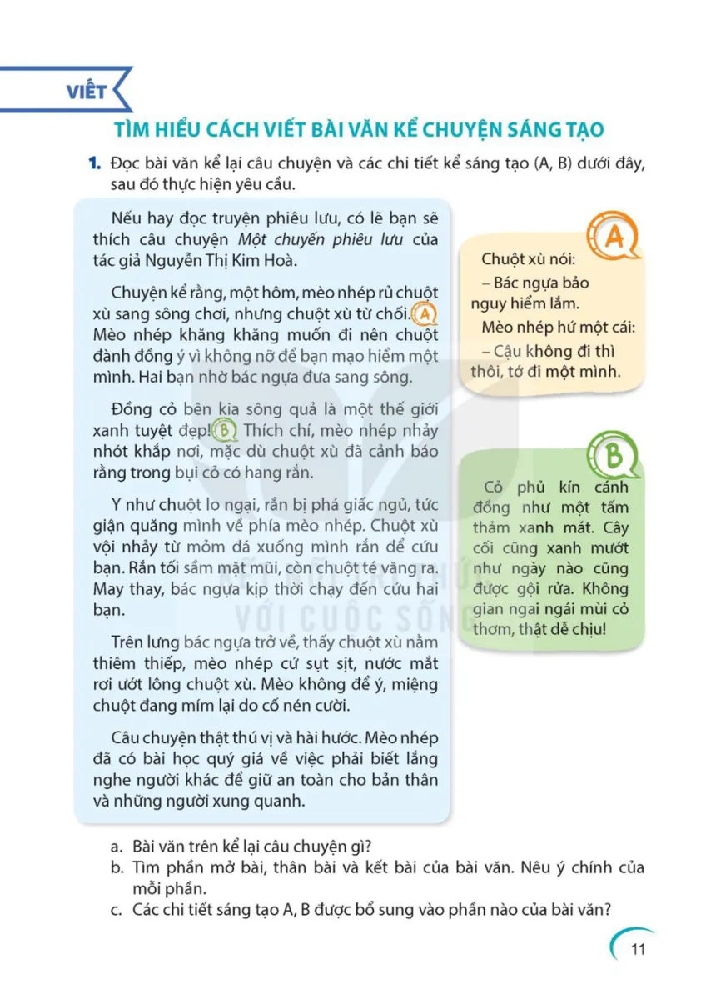
LUYỆN TỪ VÀ CÂU
LUYỆN TẬP VỀ DANH TỪ, ĐỘNG TỪ, TÍNH TỪ
1. Mỗi ý ở cột B nói về danh từ, động từ hay tính từ?
B
Danh từ
Từ chỉ hoạt động, trạng thái của sự vật
Động từ
Từ chỉ đặc điểm của sự vật, hoạt động, trạng thái
Từ chỉ sự vật (người, vật, hiện tượng tự nhiên,
Tính từ
thời gian,...)
2. Trò chơi: Đọc đoạn đầu của bài Thanh âm của gió và thực hiện các yêu cầu.
Vòng 1
Tìm danh từ theo mỗi nhóm sau:
a. 1 danh từ chỉ con vật
b. 1 danh từ chỉ thời gian
c. 2 danh từ chỉ hiện tượng tự nhiên
Vòng 2
Tìm 4 động từ chỉ hoạt động hoặc trạng thái của người hoặc vật.
Vòng 3
Tìm 4 tính từ chỉ đặc điểm của các sự vật dưới đây:
CỎ
suối
nước
cát, sỏi
Vòng 4
Đặt 1 câu nói về một hiện tượng tự nhiên, trong đó có ít nhất 1 danh từ,
1 động từ, 1 tính từ.
10
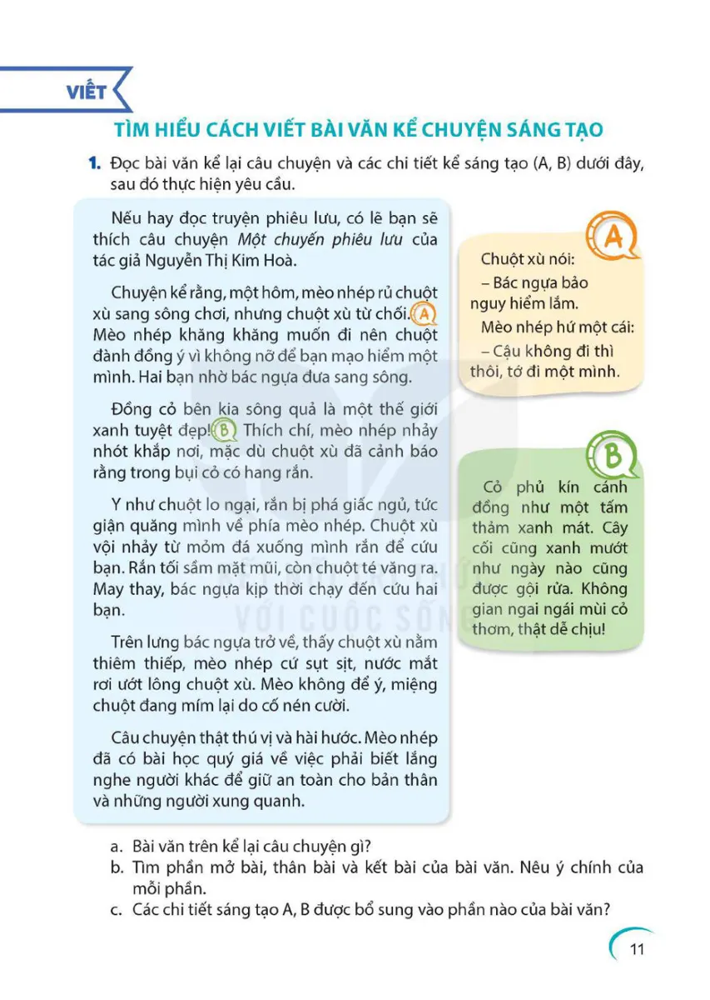
VIÊT
TÌM HIỂU CÁCH VIẾT BÀI VĂN KẾ CHUYỆN SÁNG TẠO
1. Đọc bài văn kể lại câu chuyện và các chỉ tiết kể sáng tạo (A, B) dưới đây,
sau đó thực hiện yêu cầu.
Nếu hay đọc truyện phiêu lưu, có lễ bạn sẽ
thích câu chuyện Một chuyến phiêu lưu của
tác giả Nguyễn Thị Kim Hoà.
Chuột xù nói:
Chuyện kể rằng, một hôm, mèo nhép rủ chuột
- Bác ngựa bảo
xù sang sông chơi, nhưng chuột xù từ chốiA)
nguy hiểm lắm.
Mèo nhép khăng khăng muốn đi nên chuột
Mèo nhép hứ một cái:
đành đồng ý vì không nỡ để bạn mạo hiểm một
- Cậu không đi thì
mình. Hai bạn nhờ bác ngựa đưa sang sông.
thôi, tớ đi một mình.
Đồng cỏ bên kia sông quả là một thế giới
xanh tuyệt đẹplfB ) Thích chí, mào nhép nhảy
nhót khắp nơi, mặc dù chuột xù đã cảnh báo
rằng trong bụi cỏ có hang rắn.
Cỏ phủ kín
cánh
Y như chuột lo ngại, rắn bị phá giấc ngủ, tức
đồng như một tấm
giận quăng mình về phía mèo nhép. Chuột xù
thảm xanh mát. Cây
vội nhảy từ mỏm đá xuống mình rắn để cứu
cối cũng xanh mướt
bạn. Rắn tối sầm mặt mũi, còn chuột té văng ra.
như ngày nào cũng
May thay, bác ngựa kịp thời chạy đến cứu hai
được gội rửa. Không
bạn.
VfI
SñI
gian ngai ngái mùi cỏ
thơm, thật dễ chịu!
Trên lưng bác ngựa trở về, thấy chuột xù nằm
thiêm thiếp, mèo nhép cứ sụt sịt, nước mắt
rơi ướt lông chuột xù. Mèo không để ý, miệng
chuột đang mím lại do cố nén cười.
Câu chuyện thật thú vị và hài hước. Mèo nhép
đã có bài học quý giá về việc phải biết lắng
nghe người khác để giữ an toàn cho bản thân
và những người xung quanh.
a. Bài văn trên kể lại câu chuyện gì?
b. Tìm phần mở bài, thân bài và kết bài của bài văn. Nêu ý chính của
mỗi phần.
c. Các chỉ tiết sáng tạo A, B được bổ sung vào phần nào của bài văn?
11
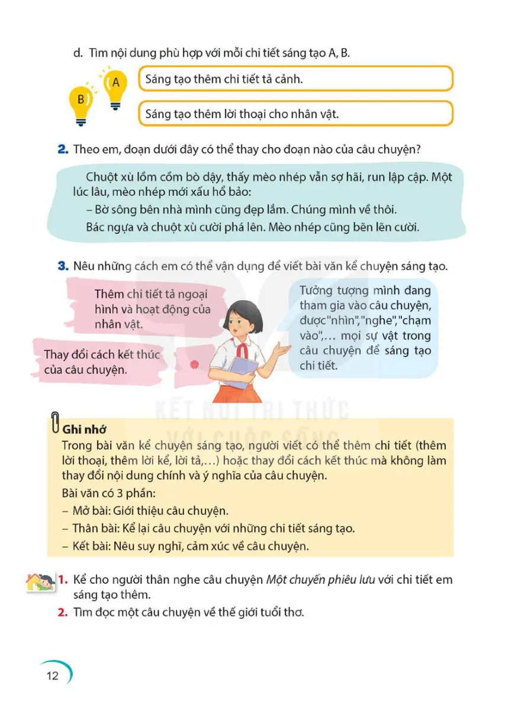
d. Tìm nội dung phù hợp với mỗi chỉ tiết sáng tạo A, B.
Sáng tạo thêm chỉ tiết tả cảnh.
B
Sáng tạo thêm lời thoại cho nhân vật.
2. Theo em, đoạn dưới đây có thể thay cho đoạn nào của câu chuyện?
Chuột xù lồm cồm bò dậy, thấy mèo nhép vẫn sợ hãi, run lập cập. Một
lúc lâu, mèo nhép mới xấu hổ bảo:
- Bờ sông bên nhà mình cũng đẹp lắm. Chúng mình về thôi.
Bác ngựa và chuột xù cười phá lên. Mèo nhép cũng băn lẽn cười.
3. Nêu những cách em có thể vận dụng để viết bài văn kể chuyện sáng tạo.
Thêm chỉ tiết tả ngoại
hình và hoạt động của
nhân vật.
Thay đổi cách kết thúc
của câu chuyện.
\ Ghi nhớ
Tưởng tượng mình đang
tham gia vào câu chuyện,
"chạm
mọi sự vật trong
câu chuyện để sáng tạo
chỉ tiết.
Trong bài văn kể chuyện sáng tạo, người viết có thể thêm chỉ tiết (thêm
lời thoại, thêm lời kể, lời tả,...) hoặc thay đổi cách kết thúc mà không làm
thay đổi nội dung chính và ý nghĩa của câu chuyện.
Bài văn có 3 phần:
— Mở bài: Giới thiệu câu chuyện.
— Thân bài: Kể lại câu chuyện với những chỉ tiết sáng tạo.
- Kết bài: Nêu suy nghĩ, cảm xúc về câu chuyện.
.1. Kế cho người thân nghe câu chuyện Một chuyến phiêu lưu với chỉ tiết em
sáng tạo thêm.
2. Tìm đọc một câu chuyện về thế giới tuổi thơ.
12
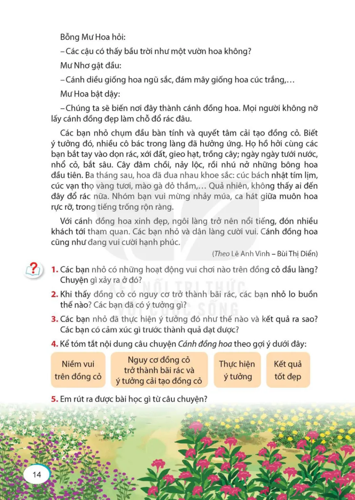
Bài
CÁNH ĐỒNG HOA
2
ĐỌC
Trao đổi với bạn: Em có thể làm gì để góp phần làm cho khu phố hay
thôn xóm của em thêm sạch đẹp?
CÁNH ĐỒNG HOA
Ở đầu làng, có một đồng cỏ khá rộng. Ja Ka, Mư Hoa, Ja Prok và Mư Nhơ
thường rủ nhau tới đó vui chơi. Ja Ka luôn mang theo chiếc trống nhỏ.
Cậu vỗ trống rất hay. Mỗi lần Ja Ka vỗ trống, các bạn lại cùng múa hát
tưng bừng.
Thế nhưng gần đây, trên đồng cỏ, một bãi rác xuất hiện và cứ lớn dần
lên, bốc mùi khó chịu. Các bạn nhỏ chẳng nô đùa, hò hét như mọi ngày.
- Cứ thế này, đồng cỏ sẽ thành bãi rác mất thôi! - Mư Nhơ thở dài.
Mư Hoa quay mặt đi, giấu những giọt nước mắt:
-Bọn mình còn đâu chỗ mà vui chơi!
—Biết làm thế
giờ?
13
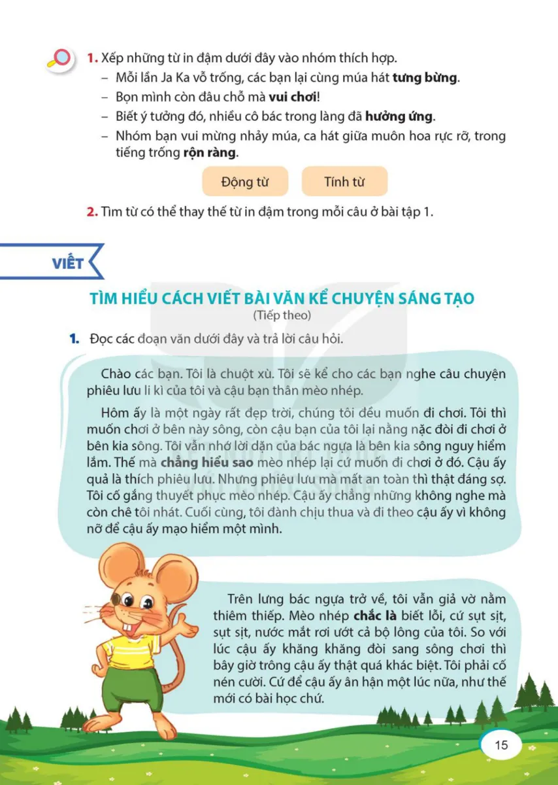
Bỗng Mư Hoa hỏi:
- Các cậu có thấy bầu trời như một vườn hoa không?
Mư Nhơ gật đầu:
- Cánh diều giống hoa ngũ sắc, đám mây giống hoa cúc trắng,...
Mư Hoa bật dậy:
- Chúng ta sẽ biến nơi đây thành cánh đồng hoa. Mọi người không nỡ
lấy cánh đồng đẹp làm chỗ đổ rác đâu.
Các bạn nhỏ chụm đầu bàn tính và quyết tâm cải tạo đồng cỏ. Biết
ý tưởng đó, nhiều cô bác trong làng đã hưởng ứng. Họ hồ hởi cùng các
bạn bắt tay vào dọn rác, xới đất, gieo hạt, trồng cây; ngày ngày tưới nước,
nhổ cỏ, bắt sâu. Cây đâm chổi, nảy lộc, rồi nhú nở những bông hoa
đầu tiên. Ba tháng sau, hoa đã đua nhau khoe sắc: cúc bách nhật tím lịm,
cúc vạn thọ vàng tươi, mào gà đỏ thắm,... Quả nhiên, không thấy ai đến
đây đổ rác nữa. Nhóm bạn vui mừng nhảy múa, ca hát giữa muôn hoa
rực rỡ, trong tiếng trống rộn ràng.
Với cánh đồng hoa xinh đẹp, ngôi làng trở nên nổi tiếng, đón nhiều
khách tới tham quan. Các bạn nhỏ và dần làng cười vui. Cánh đồng hoa
cũng như đang vui cười hạnh phúc.
(Theo Lê Anh Vinh - Bùi Thị Diển)
1. Các bạn nhỏ có những hoạt động vui chơi nào trên đồng cỏ đầu làng?
Chuyện gì xảy ra Ở đó?
2. Khi thấy đồng cỏ có nguy cơ trở thành bãi rác, các bạn nhỏ lo buồn
thế nào? Các bạn đã có ý tưởng gì?
3. Các bạn nhỏ đã thực hiện ý tưởng đó như thế nào và kết quả ra sao?
Các bạn có cảm xúc gì trước thành quả đạt được?
4. Kế tóm tắt nội dung câu chuyện Cánh đồng hoa theo gợi ý dưới đây:
Niềm vui
Nguy cơ đồng cỏ
Thực hiện
Kết quả
trở thành bãi rác và
trên đồng cỏ
ý tưởng cải tạo đồng cỏ
ý tưởng
tốt đẹp
5. Em rút ra được bài học gì từ câu chuyện?
14
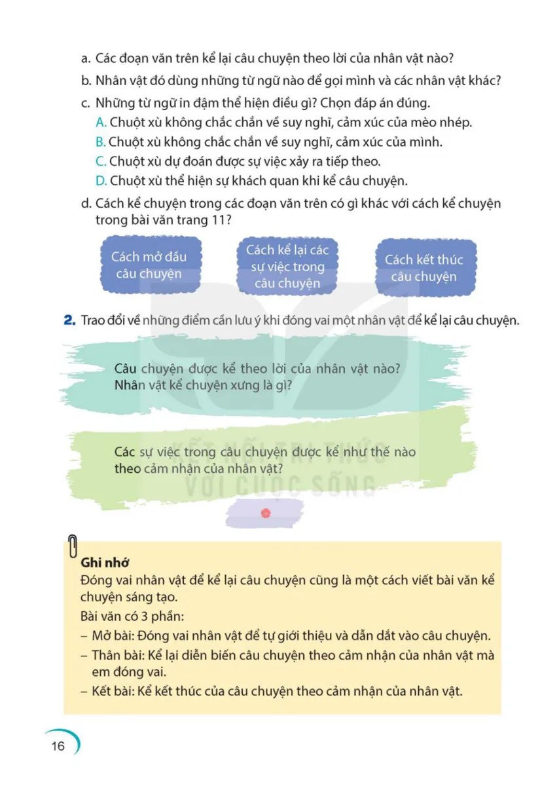
1. Xếp những từ in đậm dưới đây vào nhóm thích hợp.
— Mỗi lần Ja Ka vỗ trống, các bạn lại cùng múa hát tưng bừng.
— Bọn mình còn đâu chỗ mà vui chơi!
— Biết ý tưởng đó, nhiều cô bác trong làng đã hưởng ứng.
— Nhóm bạn vui mừng nhảy múa, ca hát giữa muôn hoa rực rỡ, trong
tiếng trống rộn ràng.
Động từ
Tính từ
2. Tìm từ có thể thay thế từ in đậm trong mỗi câu ở bài tập 1.
VIÊT
TÌM HIỂU CÁCH VIẾT BÀI VĂN KẾ CHUYỆN SÁNG TẠO
(Tiếp theo)
1. Đọc các đoạn văn dưới đây và trả lời câu hỏi.
Chào các bạn. Tôi là chuột xù. Tôi sẽ kể cho các bạn nghe câu chuyện
phiêu lưu li kì của tôi và cậu bạn thân mào nhép.
Hôm ấy là một ngày rất đẹp trời, chúng tôi đều muốn đi chơi. Tôi thì
muốn chơi ở bên này sông, còn cậu bạn của tôi lại nằng nặc đòi đi chơi ở
bên kia sông. Tôi vẫn nhớ lời dặn của bác ngựa là bên kia sông nguy hiểm
lắm. Thế mà chẳng hiểu sao mèo nhép lại cứ muốn đi chơi ở đó. Cậu ấy
quả là thích phiêu lưu. Nhưng phiêu lưu mà mất an toàn thì thật đáng sợ.
Tôi cố gắng thuyết phục mèo nhép. Cậu ấy chẳng những không nghe mà
còn chê tôi nhát. Cuối cùng, tôi đành chịu thua và đi theo cậu ấy vì không
nỡ để cậu ấy mạo hiểm một mình.
Trên lưng bác ngựa trở về, tôi vẫn giả vờ nằm
thiêm thiếp. Mèo nhép chắc là biết lỗi, cứ sụt sịt,
sụt sịt, nước mắt rơi ướt cả bộ lông của tôi. So với
lúc cậu ấy khăng khăng đòi sang sông chơi thì
bây giờ trông cậu ấy thật quá khác biệt. lôi phải cố
nén cười. Cứ để cậu ấy ân hận một lúc nữa, như thế
mới có bài học chứ.
15
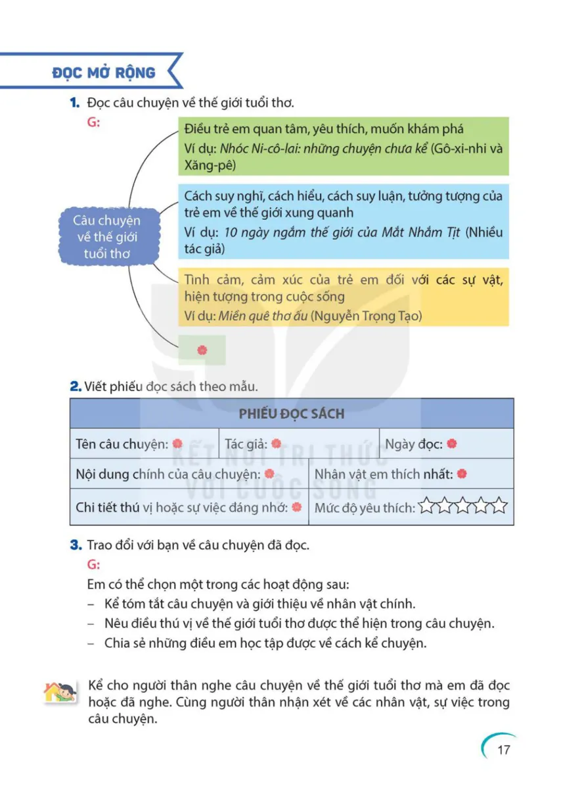
a. Các đoạn văn trên kể lại câu chuyện theo lời của nhân vật nào?
b. Nhân vật đó dùng những từ ngữ nào để gọi mình và các nhân vật khác?
c. Những từ ngữ in đậm thể hiện điều gì? Chọn đáp án đúng.
A. Chuột xù không chắc chắn về suy nghĩ, cảm xúc của mèo nhép.
B. Chuột xù không chắc chắn về suy nghĩ, cảm xúc của mình.
C. Chuột xù dự đoán được sự việc xảy ra tiếp theo.
D. Chuột xù thể hiện sự khách quan khi kể câu chuyện.
d. Cách kể chuyện trong các đoạn văn trên có gì khác với cách kể chuyện
trong bài văn trang 11?
Cách mở đầu
Cách kể lại các
sự việc trong.
Cách kết thúc
câu chuyện
2. Trao đổi về những điểm cần lưu ý khi đóng vai một nhân vật để kể lại câu chuyện.
Câu chuyện được kể theo lời của nhân vật nào?
Nhân vật kể chuyện xưng là gì?
Các sự việc trong câu chuyện được kể như thế nào
theo cảm nhận của nhân vật?
Ghi nhớ
Đóng vai nhân vật để kể lại câu chuyện cũng là một cách viết bài văn kể
chuyện sáng tạo.
Bài văn có 3 phần:
- Mở bài: Đóng vai nhân vật để tự giới thiệu và dẫn dắt vào câu chuyện.
- Thân bài: Kể lại diễn biến câu chuyện theo cảm nhận của nhân vật mà
em đóng vai.
- Kết bài: Kể kết thúc của câu chuyện theo cảm nhận của nhân vật.
16
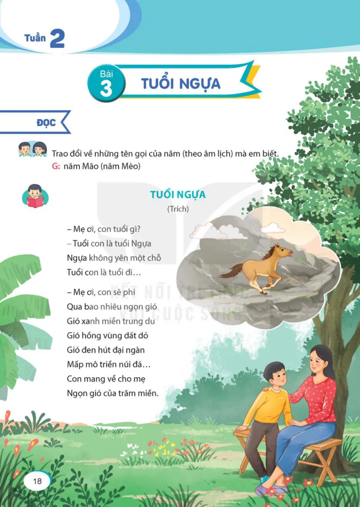
ĐỌC MỞ RỘNG
1. Đọc câu chuyện về thế giới tuổi thơ.
Điều trẻ em quan tâm, yêu thích, muốn khám phá
Ví dụ: Nhóc Ni-cô-lai: những chuyện chưa kể (Gô-xi-nhi và
Xăng-pê)
Cách suy nghĩ, cách hiểu, cách suy luận, tưởng tượng của
Câu chuyện
trẻ em về thể giới xung quanh
về thế giới
Ví dụ: 10 ngày ngắm thế giới của Mắt Nhắm Tịt (Nhiều
tuổi thơ
tác giả)
Tình cảm, cảm xúc của trẻ em đối với các sự vật,
hiện tượng trong cuộc sống
Ví dụ: Miền quê thơ ấu (Nguyễn Trọng Tạo)
2. Viết phiếu dọc sách theo mẫu.
PHIẾU ĐỌC SÁCH
Tên câu chuyện: @
Tác giả: &
YII|l
Ngày đọc: ®
Nội dung chính của câu chuyện:
Nhân vật em thích nhất: #
Chỉ tiết thú vị hoặc sự việc đáng nhớ: &
Mức độ yêu
3. Trao đổi với bạn về câu chuyện đã đọc.
Em có thể chọn một trong các hoạt động sau:
— Kể tóm tắt câu chuyện và giới thiệu về nhân vật chính.
—
Nêu điều thú vị về thế giới tuổi thơ được thể hiện trong câu chuyện.
—
Chia sẻ những điều em học tập được về cách kể chuyện.
Kể cho người thân nghe câu chuyện về thế giới tuổi thơ mà em đã đọc
hoặc đã nghe. Cùng người thân nhận xét về các nhân vật, sự việc trong
câu chuyện.
17
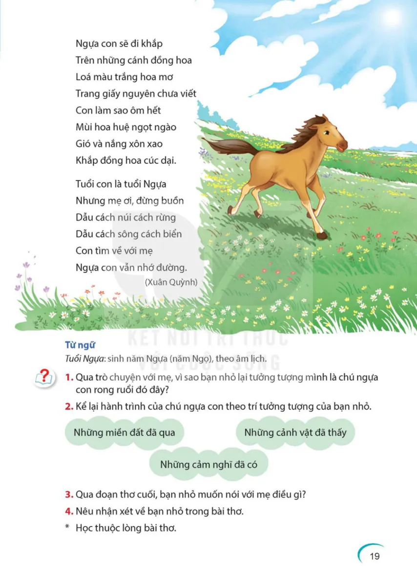
Tuần 2
Bài
TUỔI NGỰA
ĐỌC
Trao đổi về những tên gọi của năm (theo âm lịch) mà em biết.
G: năm Mão (năm Mào)
TUỔI NGỰA
(Trích)
- Mẹ ơi, con tuổi gì?
Tuổi con là tuổi Ngựa
Ngựa không yên một chỗ
Tuổi con là tuổi đi...
— Mẹ ơi, con sẽ phi
Qua bao nhiêu ngọn gió
Gió xanh miền trung du
Gió hồng vùng đất đỏ
Gió đen hút đại ngàn
Mấp mô triển núi đá...
Con mang về cho mẹ
Ngọn gió của trăm miền.
18
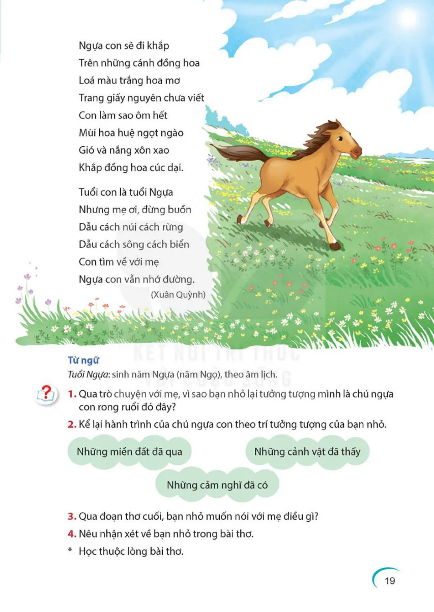
Ngựa con sẽ đi khắp
Trên những cánh đồng hoa
Loá màu trắng hoa mơ
Trang giấy nguyên chưa viết
Con làm sao ôm hết
Mùi hoa huệ ngọt ngào
Gió và nắng xôn xao
Khắp đồng hoa cúc dại.
Tuổi con là tuổi Ngựa
Nhưng mẹ ơi, đừng buồn
Dấu cách núi cách rừng
Dẫu cách sông cách biển
Con tìm về với mẹ
Ngựa con vẫn nhớ đường.
(Xuân Quỳnh)
Từ ngữ
Tuổi Ngựa: sinh năm Ngựa (năm Ngọ), theo âm lịch.
1. Qua trò chuyện với mẹ, vì sao bạn nhỏ lại tưởng tượng mình là chú ngựa
con rong ruổi đó đây?
2. Kể lại hành trình của chú ngựa con theo trí tưởng tượng của bạn nhỏ.
Những miền đất đã qua
Những cảnh vật đã thấy
Những cảm nghĩ đã có
3. Qua đoạn thơ cuối, bạn nhỏ muốn nói với mẹ điều gì?
4. Nêu nhận xét về bạn nhỏ trong bài thơ.
* Học thuộc lòng bài thơ.
19
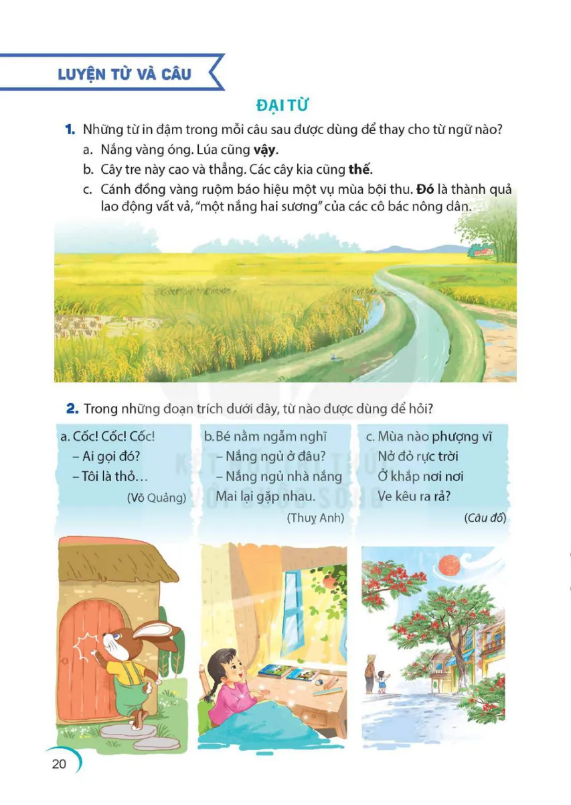
LUYỆN TỪ VÀ CÂU
ĐẠI TỪ
1. Những từ in đậm trong mỗi câu sau được dùng để thay cho từ ngữ nào?
a. Nắng vàng óng. Lúa cũng vậy.
b. Cây tre này cao và thẳng. Các cây kia cũng thế.
c. Cánh đồng vàng ruộm báo hiệu một vụ mùa bội thu. Đó là thành quả
lao động vất vả, “một nắng hai sương” của các cô bác nông dân.
2. Trong những đoạn trích dưới đây, từ nào được dùng để hỏi?
a. Cốc! Cốc! Cốc
b.Bé nằm ngẫm nghĩ
c. Mùa nào phượng vĩ
- Ai gọi đó?
- Nẵng ngủ ở đâu?
Nở đỏ rực trời
- Tôi là thỏ...
- Nắng ngủ nhà nắng
Ở khắp nơi nơi
(Võ Quảng)
Mai lại gặp nhau.
Ve kêu ra rả?
(Thuy Anh)
(Câu đổ)
20
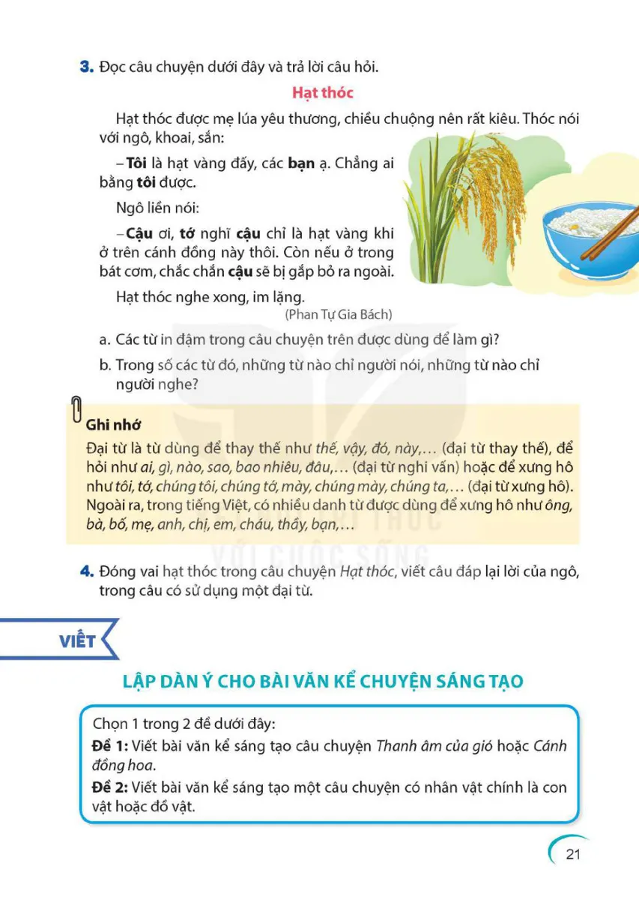
3. Đọc câu chuyện dưới đây và trả lời câu hỏi.
Hạt thóc
Hạt thóc được mẹ lúa yêu thương, chiều chuộng nên rất kiêu. Thóc nói
với ngô, khoai, sắn:
-Tôi là hạt vàng đấy, các bạn ạ. Chẳng ai
bằng tôi đ ưỢc.
Ngô liền nói:
- Cậu ơi, tớ nghĩ cậu chỉ là hạt vàng khi
ở trên cánh đồng này thôi. Còn nếu ở trong
bát cơm, chắc chắn cậu sẽ bị gắp bỏ ra ngoài.
Hạt thóc nghe xong, im lặng.
(Phan Tự Gia Bách)
a. Các từ in đậm trong câu chuyện trên được dùng để làm gì?
b. Trong số các từ đó, những từ nào chỉ người nói, những từ nào chỉ
người nghe?
Ghi nhớ
Đại từ là từ dùng để thay thế như thế, vậy, đó, này,... (đại từ thay thế), để
hỏi như đi, gì, nào, sao, bao nhiêu, đâu,... (đại từ nghỉ vấn) hoặc để xưng hô
như tôi, tớ, chúng tôi, chúng tớ, mày, chúng mày, chúng ta,... (đại từ xưng hô).
Ngoài ra, trong tiếng Việt, có nhiều danh từ được dùng để xưng hô như ông,
bà, bố, mẹ, anh, chị, em, cháu, thây, bạn,...
4. Đóng vai hạt thóc trong câu chuyện Hạt thóc, viết câu đáp lại lời của ngô,
trong câu có sử dụng một đại từ.
VIÊT
LẬP DÀN Ý CHO BÀI VĂN KỂ CHUYỆN SÁNG TẠO
Chọn 1 trong 2 đề dưới đây:
Đề 1: Viết bài văn kể sáng tạo câu chuyện Thanh âm của gió hoặc Cánh
đồng hoa.
Đề 2: Viết bài văn kể sáng tạo một câu chuyện có nhân vật chính là con
vật hoặc đồ vật.
21
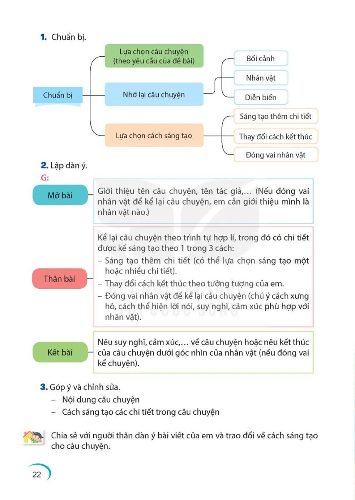
1. Chuẩn bị.
Lựa chọn câu chuyện
(theo yêu cầu của để bài)
Bối cảnh
Nhân vật
Chuẩn bị
Nhớ lại câu chuyện
Diễn biến
Sáng tạo thêm chỉ tiết
Lựa chọn cách sáng tạo
Thay đổi cách kết thúc
Đóng vai nhần vật
2. Lập dàn ý.
Mở bài
Giới thiệu tên câu chuyện, tên tác giả,... (Nếu đóng vai
nhân vật để kể lại câu chuyện, em cần giới thiệu mình là
nhân vật nào.)
Kể lại câu chuyện theo trình tự hợp lí, trong đó có chỉ tiết
được kể sáng tạo theo 1 trong 3 cách:
- Sáng tạo thêm chỉ tiết (có thể lựa chọn sáng tạo một
hoặc nhiều chỉ tiết).
Thân bài
- Thay đối cách kết thúc theo tưởng tượng của em.
- Đóng vai nhân vật để kể lại câu chuyện (chú ý cách xưng
hô, cách thể hiện lời nói, suy nghĩ, cảm xúc phù hợp với
nhân vật).
Nêu suy nghĩ, cảm xúc,... về câu chuyện hoặc nêu kết thúc
Kết bài
của câu chuyện dưới góc nhìn của nhân vật (nếu đóng vai
kể chuyện).
3. Góp ý và chỉnh sửa.
— Nội dung câu chuyện
—
Cách sáng tạo các chỉ tiết trong câu chuyện
Chia sẻ với người thân dàn ý bài viết của em và trao đổi về cách sáng tạo
cho câu chuyện.
22
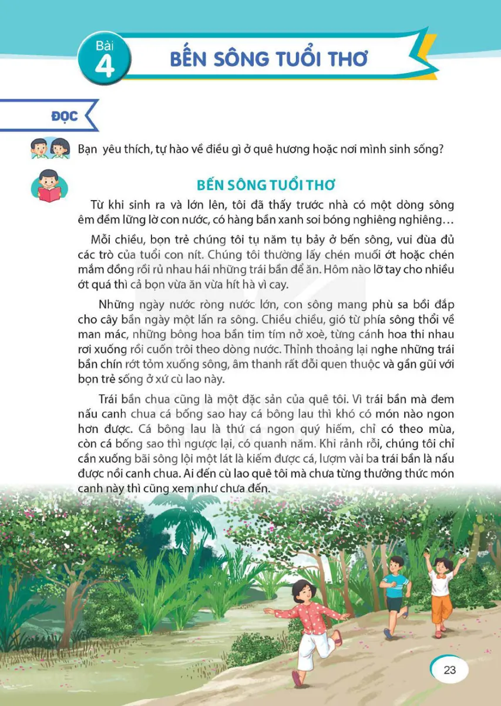
/
BÊN SÔNG TUỔI THƠ
ĐỌC
Bạn yêu thích, tự hào về điều gì ở quê hương hoặc nơi mình sinh sống?
BẾN SÔNG TUỔI THƠ
Từ khi sinh ra và lớn lên, tôi đã thấy trước nhà có một dòng sông
êm đềm lững lờ con nước, có hàng bần xanh soi bóng nghiêng nghiêng...
Mỗi chiều, bọn trẻ chúng tôi tụ năm tụ bảy ở bến sông, vui đùa đủ
các trò của tuổi con nít. Chúng tôi thường lấy chén muối ớt hoặc chén
mắm đồng rồi rủ nhau hái những trái bần để ăn. Hôm nào lỡ tay cho nhiều
ớt quá thì cả bọn vừa ăn vừa hít hà vì cay.
Những ngày nước ròng nước lớn, con sông mang phù sa bồi đắp
cho cây bần ngày một lấn ra sông. Chiều chiều, gió từ phía sông thổi về
man mác, những bông hoa bần tim tím nở xoè, từng cánh hoa thi nhau
rơi xuống rồi cuốn trôi theo dòng nước. Thỉnh thoảng lại nghe những trái
bần chín rớt tỏm xuống sông, âm thanh rất đỗi quen thuộc và gần gũi với
bọn trẻ sống ở xứ cù lao này.
Trái bân chua cũng là một đặc sản của quê tôi. Vì trái bần mà đem
nấu canh chua cá bống sao hay cá bông lau thì khó có món nào ngon
hơn được. Cá bông lau là thứ cá ngon quý hiếm, chỉ có theo mùa,
còn cá bỗng sao thì ngược lại, có quanh năm. Khi rảnh rỗi, chúng tôi chỉ
cần xuống bãi sông lội một lát là kiếm được cá, lượm vài ba trái bản là nấu
được nổi canh chua. Ai đến cù lao quê tôi mà chưa từng thưởng thức món
canh này thì cũng xem như chưa đến.
23
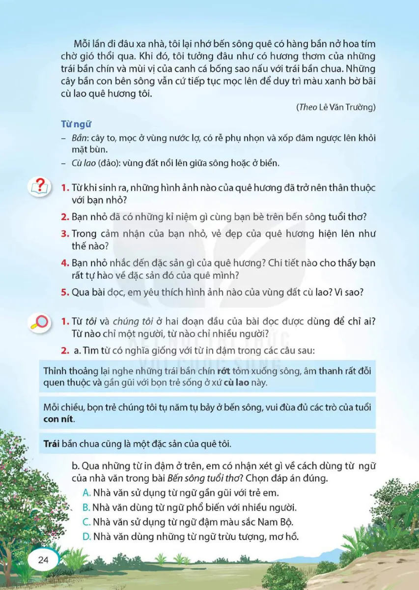
Mỗi lần đi đâu xa nhà, tôi lại nhớ bến sông quê có hàng bần nở hoa tím
chờ gió thổi qua. Khi đó, tôi tưởng đâu như có hương thơm của những
trái bần chín và mùi vị của canh cá bống sao nấu với trái bần chua. Những
cây bần con bên sông vẫn cứ tiếp tục mọc lên để duy trì màu xanh bờ bãi
cù lao quê hương tôi.
(Theo Lê Văn Trường)
Từ ngữ
— Bần: cây to, mọc ở vùng nước lợ, có rễ phụ nhọn và xốp đâm ngược lên khỏi
mặt bùn.
-- Cù lao (đảo): vùng đất nổi lên giữa sông hoặc ở biển.
1. Từ khi sinh ra, những hình ảnh nào của quê hương đã trở nên thân thuộc
với bạn nhỏ?
2. Bạn nhỏ đã có những kỉ niệm gì cùng bạn bè trên bến sông tuổi thơ?
3. Irong cảm nhận của bạn nhỏ, vẻ đẹp của quê hương hiện lên như
thế nào?
4. Bạn nhỏ nhắc đến đặc sản gì của quê hương? Chỉ tiết nào cho thấy bạn
rất tự hào về đặc sản đó của quê mình?
5, Qua bài dọc, em yêu thích hình ảnh nào của vùng đất cù lao? Vì sao?
1. Từ tôi và chúng tôi ở hai đoạn đầu của bài đọc được dùng để chỉ ai?
Từ nào chỉ một người, từ nào chỉ nhiều người?
2. a. Tìm từ có nghĩa giống với từ in đậm trong các câu sau:
Thỉnh thoảng lại nghe những trái bần chín rớt tỏm xuống sông, âm thanh rất đỗi
quen thuộc và gần gũi với bọn trẻ sống ở xứ cù lao này.
Mỗi chiều, bọn trẻ chúng tôi tụ năm tụ bảy ở bến sông, vui đùa đủ các trò của tuổi
con nít.
Trái bần chua cũng là một đặc sản của quê tôi.
b. Qua những từ in đậm ở trên, em có nhận xét gì về cách dùng từ ngữ
của nhà văn trong bài Bến sông tuổi thơ? Chọn đáp án đúng.
A. Nhà văn sử dụng từ ngữ gần gũi với trẻ em.
B. Nhà văn dùng từ ngữ phổ biến với nhiều người.
C. Nhà văn sử dụng từ ngữ đậm màu sắc Nam Bộ.
D. Nhà văn dùng những từ ngữ trừu tượng, mơ hồ.
24
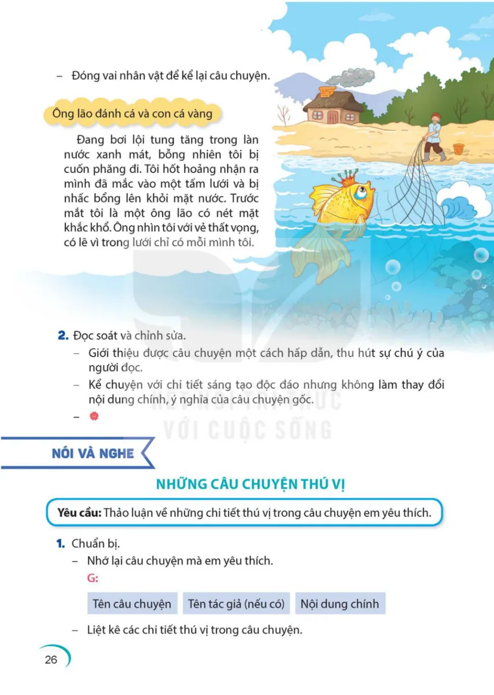
VIÊT
VIẾT BÀI VĂN KẾ CHUYỆN SÁNG TẠO
Chọn 1 trong 2 đề dưới đây:
Đề 1: Viết bài văn kể sáng tạo câu chuyện Thanh âm của gió hoặc Cánh
đồng hoa.
Đề 2: Viết bài văn kể sáng tạo một câu chuyện có nhân vật chính là con
vật hoặc đồ vật.
1. Dựa vào dàn ý đã lập trong hoạt động Viết ở Bài 3, viết bài văn theo
yêu cầu của đề bài.
Lưu ý:
Khi thêm lời kể, tả, thêm lời thoại
hoặc thay đổi cách kết thúc của
câu chuyện, cần lựa chọn chỉ tiết
sáng tạo hấp dẫn, thú vị và phù
hợp với nội dung câu chuyện.
Một số đoạn văn tham khảo:
Khi đóng vai kể chuyện, cần
chọn cách xưng hô phù hợp
và kể, tả sự việc theo đúng
cảm xúc của nhân vật mà em
đóng vai.
- Sáng tạo thêm chỉ tiết (lời kể, lời tả, hội thoại,...) cho câu chuyện.
Cánh đồng hoa
T
TRI THI[f
Ngồi tựa vào gốc cây, các bạn nhỏ ngước nhìn bầu trời. Trên bầu trời
xanh biếc, muôn vàn đám mây như đang đùa giỡn, trông thật vui nhộn.
Một cụm mây bỗng tách ra, nhìn giống bông cúc trắng khổng lồ. Rồi một
cụm mây nữa, trông giống đoá quỳnh tỉnh khôi. Những
“bông hoa mây” cứ bồng bềnh, bồng bềnh, khiến Mư
Hoa phải bật dậy reo lên: “Các cậu có thấy bầu trời
như một vườn hoa không?”
- Thay đổi cách kếtthúc của câu chuyện.
Thanh âm của gió
Bố bảo mới nghe chúng tôi kể thôi mà bố đã thích trò chơi ấy rồi. Bố
hẹn chúng tôi ngày mai dậy sớm chạy ra bờ suối nghe xem gió nói điều qì.
Thế là chúng tôi tưởng tượng ra bao nhiêu tiếng gió mà bố có thể nghe
được. Tiếng gió cứ lao xao, lao xao đưa chúng tôi vào giấc ngủ lúc nào
không hay.
25
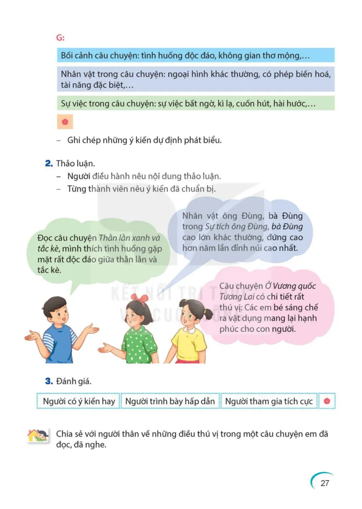
-- Đóng vai nhân vật để kể lại câu chuyện.
Ông lão đánh cá và con cá vàng
8ƒ
Đang bơi lội tung tăng trong làn
nước xanh mát, bỗng nhiên tôi bị
cuốn phăng đi. Tôi hốt hoảng nhận ra
mình đã mắc vào một tấm lưới và bị
nhấc bổng lên khỏi mặt nước. Trước
mắt tôi là một ông lão có nét mặt
khác khổ. Ông n hìn tôi với vẻ thất vọng,
có lẽ vì trong lưới chỉ có mỗi mình tôi.
2. Đọc soát và chỉnh sửa.
—
Giới thiệu được câu chuyện một cách hấp dẫn, thu hút sự chú ý của
người đọc.
- Kế chuyện với chỉ tiết sáng tạo độc đáo nhưng không làm thay đổi
nội dung chính, ý nghĩa của câu chuyện gốc.
VữI 0Uñ0
NÓI VÀ NGHE
NHỮNG CÂU CHUYỆN THÚ VỊ
Yêu cầu: Thảo luận về những chỉ tiết thú vị tròng câu chuyện em yêu thích.
1. Chuẩn bị.
-
Nhớ lại câu chuyện mà em yêu thích.
Tên câu chuyện
Tên tác giả (nếu có)
Nội dung chính
Liệt kê các chỉ tiết thú vị trong câu chuyện.
26
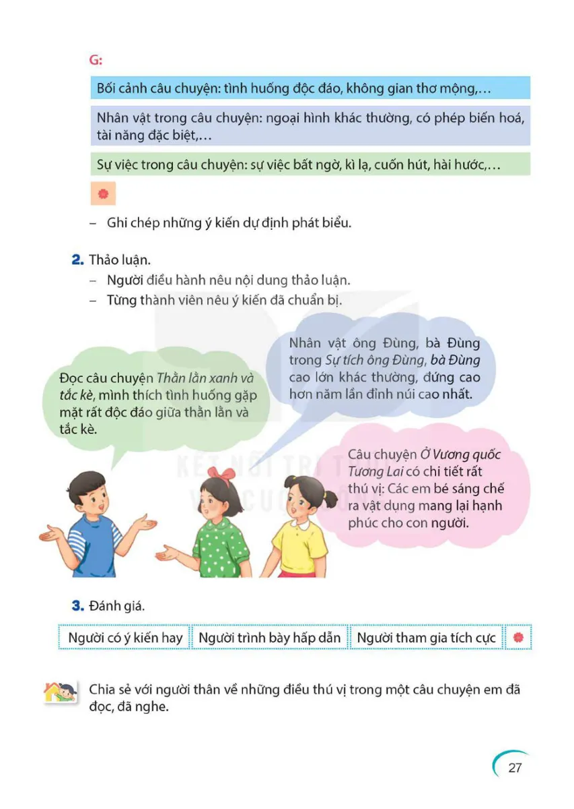
Bối cảnh câu chuyện: tình huống độc đáo, không gian thơ mộng,...
Nhân vật trong câu chuyện: ngoại hình khác thường, có phép biến hoá,
tài năng đặc biệt,
Sự việc trong câu chuyện: sự việc bất ngờ, kì lạ, cuốn hút, hài hước,...
kh
Ghi chép những ý kiến dự định phát biểu.
2. Thảo luận.
- Người điều hành nêu nội dung thảo luận.
- Từng thành viên nêu ý kiến đã chuẩn bị.
Nhân vật ông Đùng, bà Đùng
trong Sự tích ông Đùng, bà Đùng
Đọc câu chuyện Thần lằn xanh và
cao lớn khác thường, đứng cao
tắc kè, mình thích tình huống gặp
hơn năm lần đỉnh núi cao nhất.
mặt rất độc đáo giữa thẫn lẫn và
tắc kè.
Câu chuyện Ở Vương quốc
Tương Lai có chỉ tiết rất
thú vị: Các em bé sáng chế
ra vật dụng mang lại hạnh
phúc cho con người.
3. Đánh giá.
Người có ý kiến hay
Người trình bày hấp dẫn
Người tham gia tích cực
Chia sẻ với người thân về những điều thú vị trong một câu chuyện em đã
đọc, đã nghe.
27
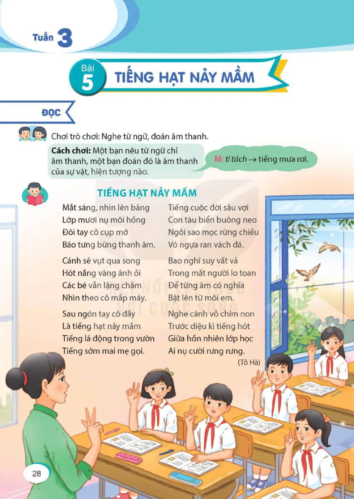
Tuân K‹
Bài
TIÊNG HAT NẢY MẦM
5
ĐỌC
Chơi trò chơi: Nghe từ ngữ, đoán âm thanh.
Cách chơi: Một bạn nêu từ ngữ chỉ
âm thanh, một bạn đoán đó là âm thanh
tí tách —> tiếng mưa rơi.
tí tách
của sự vật, hiện tượng nào.
TIẾNG HẠT NẢY MẦM
Mắt sáng, nhìn lên bảng
Lớp mươi nụ môi hồng
Đôi tay cô cụp mở
Báo tưng bừng thanh âm.
Cánh sẻ vụt qua song
Hót nắng vàng ánh ỏi
Các bé vẫn lặng chăm
Nhìn theo cô mấp máy.
Sau ngón tay cô đấy
Là tiếng hạt nảy mầm
Tiếng lá động trong vườn
Tiếng sớm mai mẹ gọi.
28
Tiếng cuộc đời sâu vợi
Con tàu biển buông neo
Ngôi sao mọc rừng chiều
Vó ngựa ran vách đá.
Bao nghĩ suy vất vả
Trong mắt người lo toan
Để từng âm có nghĩa
Bật lên từ môi em.
Nghe cánh vỗ chim non
Trước diệu kì tiếng hót
Giữa hốn nhiên lớp học
Ai nụ cười rưng rưng.
(Tô Hà)
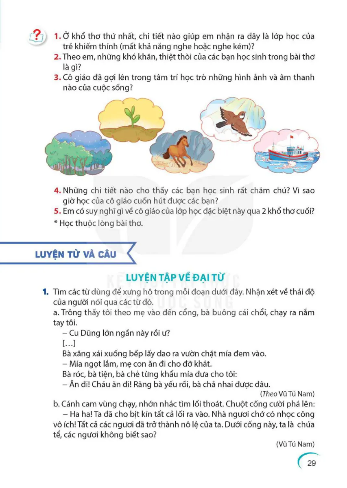
1.Ở khổ thơ thứ nhất, chỉ tiết nào giúp em nhận ra đây là lớp học của
trẻ khiếm thính (mất khả năng nghe hoặc nghe kém)?
2. Theo em, những khó khăn, thiệt thòi của các bạn học sinh trong bài thơ
là gì?
3. CÔ giáo đã gợi lên trong tâm trí học trò những hình ảnh và âm thanh
nào của cuộc sống?
4. Những chỉ tiết nào cho thấy các bạn học sinh rất chăm chú? Vì sao
giờ học của cô giáo cuốn hút được các bạn?
5. Em có SUY nghĩ gì về cô giáo của lớp học đặc biệt này qua 2 khổ thơ cuối?
* Học thuộc lòng bài thơ.
LUYỆN TỬ VÀ CÂU
LUYỆN TẬP VỀ ĐẠI TỪ
1. Tìm các từ dùng để xưng hô trong mỗi đoạn dưới đây. Nhận xét về thái độ
của người nói qua các từ đó.
a. Trông thấy tôi theo mẹ vào đến cổng, bà buông cái chổi, chạy ra nắm
tay tôi.
— Cu Dũng lớn ngần này rồi ư?
L...]
Bà xăng xái xuống bấp lấy dao ra vườn chặt mía đem vào.
— Mía ngọt lắm, mẹ con ăn đi cho đỡ khát.
Bà róc, bà tiện, bà chẻ từng khẩu mía đưa cho tôi:
— Ăn đi! Cháu ăn đi! Răng bà yếu rồi, bà chả nhai được đâu.
(Theo Vũ Tú Nam)
b. Cánh cam vùng chạy, nhớn nhác tìm lối thoát. Chuột cống cười phá lên:
— Ha hai Ta đã cho bịt kín tất cả lối ra vào. Nhà ngươi chớ có nhọc công
vô íchl Tất cả các ngươi đã trở thành nô lệ của ta. Dưới cống này, ta là chúa
tế, các ngươi không biết sao?
(Vũ Tú Nam)
29
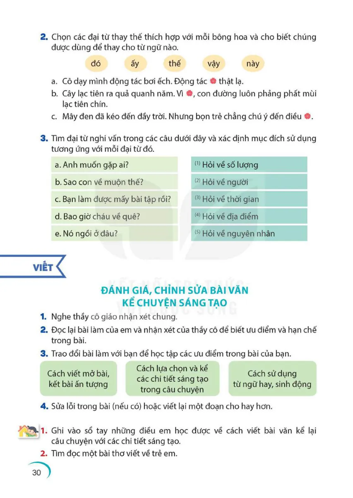
2. Chọn các đại từ thay thế thích hợp với mỗi bông hoa và cho biết chúng
được dùng để thay cho từ ngữ nào.
đó
ấy
thế
vậy
này
a. Cô dạy mình động tác bơi ấch. Động tác ® thật lạ.
b. Cây lạc tiên ra quả quanh năm. Vì
con đường luôn phảng phất mùi
lạc tiên chín.
c. Mây đen đã kéo đến đầy trời. Nhưng bọn trẻ chẳng chú ý đến điều
3. Tìm đại từ nghi vấn trong các câu dưới đây và xác định mục đích sử dụng
tương ứng với mỗi đại từ đó.
a. Anh muốn gặp ai?
ñ) Hỏi về số lượng
b. Sao con về muộn thế?
2) Hỏi về người
c. Bạn làm được mấy bài tập rồi?
ở) Hỏi về thời gian
d. Bao giờ cháu về quê?
(4) Hỏi về địa điểm
e. Nó ngồi ở đầu?
®) Hỏi về nguyên nhân
VIÊT
ĐÁNH GIÁ, CHỈNH SỬA BÀI VĂN
KỂ CHUYỆN SÁNG TẠO
1. Nghe thầy cô giáo nhận xét chung.
2. Đọc lại bài làm của em và nhận xét của thầy cô để biết ưu điểm và hạn chế
trong bài.
3. Trao đổi bài làm với bạn để học tập các ưu điểm trong bài của bạn.
Cách lựa chọn và kể
Cách viết mở bài,
Cách sử dụng
kết bài ấn tượng
các chi tiết sáng tạo
trong câu chuyện
từ ngữ hay, sinh động
4. Sửa lỗi trong bài (nếu có) hoặc viết lại một đoạn cho hay hơn.
Ghi vào sổ tay những điều em học được về cách viết bài văn kể lại
câu chuyện với các chỉ tiết sáng tạo.
2. Tìm đọc một bài thơ viết về trẻ em.
30
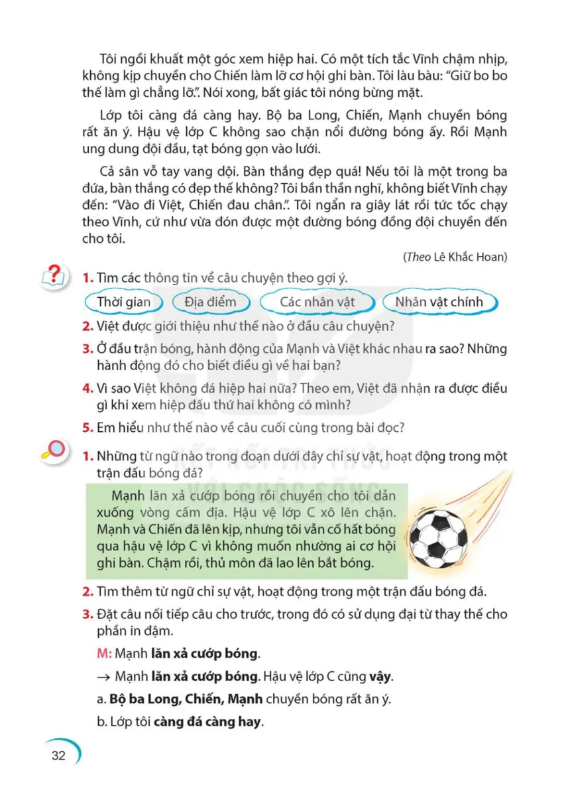
Bài
Š
NGÔI SAO SÂN CỎ
Chơi trò chơi: Kể nhanh tên các môn thể thao cá nhân và các môn thể thao
đồng đội.
NGÔI SAO SÂN CỎ
Tôi được bạn bè khu phố công nhận là cầu thủ xuất sắc. Thế mà đợi mãi
tôi mới có dịp ra mắt “giới hâm mộ bóng đá trường nhà” trong trận đấu với
lớp 5C sáng nay.
Trận đấu gay cấn từ những phút đầu. Mạnh lăn xả cướp bóng rồi
chuyền cho tôi dẫn xuống vòng cấm địa. Hậu vệ lớp C xô lên chặn.
Mạnh và Chiến đã lên kịp. Nhưng tôi vẫn cố hất bóng qua hậu vệ lớp C
vì không muốn nhường ai cơ hội ghi bàn. Chậm rồi, thủ môn đã lao lên
bắt bóng. Cả sân vỡ oà vì tiếc.
Sốt ruột lắm nhưng đến giữa hiệp tôi mới ghi bàn. Tiếng vỗ tay dội lên,
tôi sung sướng chạy như một ngôi sao sân cỏ. Từ lúc đó, lớp C kèm tôi như
hình với bóng. Tôi dắt bóng một quãng là mất, lại chẳng chuyền cho ai.
Lớp C được thể tấn công và ghi liền hai bàn.
Giữa hai hiệp, chúng tôi hội ý. Mạnh thở hồng hộc:
- Tại Việt cứ một mình ôm bóng, tụi nó phá mất.
Vĩnh đanh mặt:
lệp sau đùng ích kỉ thế.
Tôi hầm hầm:
- Tớ không đá nữa, xem các cậu làm được gì.
Không ai đáp lại, chỉ lặng lẽ dẫn ra cho tôi đi.
ở1
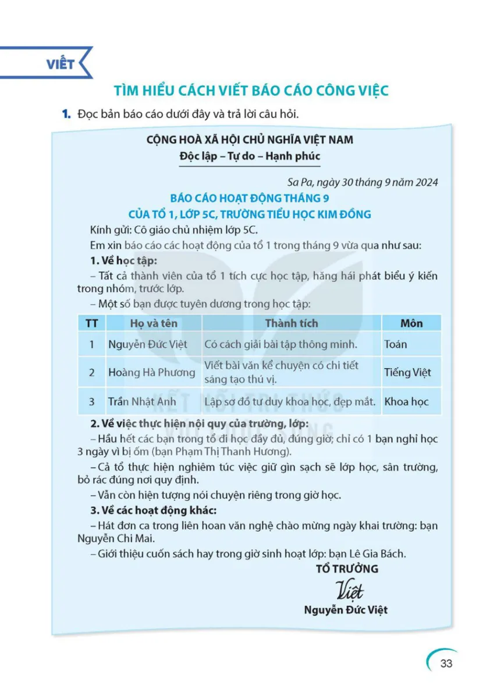
Tôi ngồi khuất một góc xem hiệp hai. Có một tích tắc Vĩnh chậm nhịp,
không kịp chuyền cho Chiến làm lỡ cơ hội ghi bàn. Tôi làu bàu: “Giữ bo bo
thế làm dì chẳng |ỡ.. Nói xong, bất giác tôi nóng bừng mặt.
Lớp tôi càng đá càng hay. Bộ ba Long, Chiến, Mạnh chuyển bóng
rất ăn ý. Hậu vệ lớp C không sao chặn nổi đường bóng ấy. Rồi Mạnh
ung dung đội đầu, tạt bóng gọn vào lưới.
Cả sân vỗ tay vang dội. Bàn thắng đẹp quái Nếu tôi là một trong ba
đứa, bàn thắng có đẹp thế không? Tôi bần thần nghĩ, không biết Vĩnh chạy
đến: “Vào đi Việt, Chiến đau chân“: Tôi ngẩn ra giây lát rồi tức tốc chạy
theo Vĩnh, cứ như vừa đón được một đường bóng đồng đội chuyền đến
cho tôi.
(Theo Lê Khắc Hoan)
1. Tìm các thông tin về câu chuyện theo gợi ý.
Thời gian ` Địa điểm ˆ
Các nhân vật.
Nhân vật chính.
2. Việt được giới thiệu như thế nào ở đầu câu chuyện?
3. Ở đầu trận bóng, hành động của Mạnh và Việt khác nhau ra sao? Những
hành động đó cho biết điều gì về hai bạn?
4. Vì sao Việt không đá hiệp hai nữa? Theo em, Việt đã nhận ra được điều
gì khi xem hiệp đấu thứ hai không có mình?
5. Em hiểu như thế nào về câu cuối cùng trong bài đọc?
1. Những từ ngữ nào trong đoạn dưới đây chỉ sự vật, hoạt động trong một
trận đấu bóng đá?
Mạnh lăn xả cướp bóng rồi chuyền cho tôi dẫn
xuống vòng cấm địa. Hậu vệ lớp € xô lên chặn.
Mạnh và Chiến đã lên kịp, nhưng tôi vẫn cố hất bóng
qua hậu vệ lớp C vì không muốn nhường ai cơ hội
ghi bàn. Chậm rồi, thủ môn đã lao lên bắt bóng.
2. Tìm thêm từ ngữ chỉ sự vật, hoạt động trong một trận đấu bóng đá.
3. Đặt câu nối tiếp câu cho trước, trong đó có sử dụng đại từ thay thế cho
phần in đậm.
Mạnh lăn xả cướp bóng.
—> Mạnh lăn xả cướp bóng. Hậu vệ lớp C cũng vậy.
a. Bộ ba Long, Chiến, Mạnh chuyền bóng rất ăn ý.
b. Lớp tôi càng đá càng hay.
32
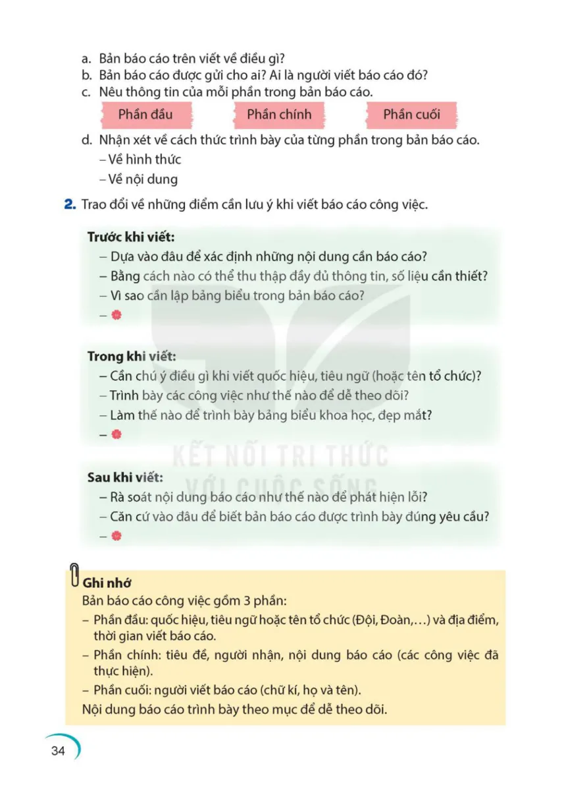
VIÊT
TÌM HIỂU CÁCH VIẾT BÁO CÁO CÔNG VIÊC
1. Đọc bản báo cáo dưới đây và trả lời câu hỏi.
CỘNG HOÀ XÃ HỘI CHỦ NGHĨA VIỆT NAM
Độc lập - Tự do - Hạnh phúc
Sa Pa, ngày 30 tháng 9 năm 2024
BÁO CÁO HOẠT ĐỘNG THÁNG 9
CỦA TỔ 1, LỚP 5C, TRƯỜNG TIỂU HỌC KIM ĐỒNG
Kính gửi: Cô giáo chủ nhiệm lớp 5C.
Em xin báo cáo các hoạt động của tổ 1 trong tháng 9 vừa qua như sau:
1. Về học tập:
- Tất cả thành viên của tổ 1 tích cực học tập, hăng hái phát biểu ý kiến
trong nhóm, trước lớp.
_ Một số bạn được tuyên dương trong học tập:
TT
Họ và tên
Thành tích
Môn
Nguyễn Đức Việt
Có cách giải bài tập thông minh.
Toán
Hoàng Hà Phương
Viết bài văn kể chuyện có chỉ tiết
2
Tiếng Việt
sáng tạo thú vị.
5
Trần Nhật Anh
Lập sơ đổ tư duy khoa học, đẹp mắt.
Khoa học
2. Về việc thực hiện nội quy của trường, lớp:
— Hầu hết các bạn trong tổ đi học đây đủ, đúng giờ; chỉ có 1 bạn nghỉ học
3 ngày vì bị ốm (bạn Phạm Thị Thanh Hương).
- Cả tổ thực hiện nghiêm túc việc giữ gìn sạch sẽ lớp học, sân trường,
bỏ rác đúng nơi quy định.
- Vẫn còn hiện tượng nói chuyện riêng trong giờ học,
3. Về các hoạt động khác:
- Hát đơn ca trong liên hoan văn nghệ chào mừng ngày khai trường: bạn
Nguyễn Chi Mai.
~ Giới thiệu cuốn sách hay trong giờ sinh hoạt lớp: bạn Lê Gia Bách.
TỔ TRƯỞNG
J
Nguyễn Đức Việt
33
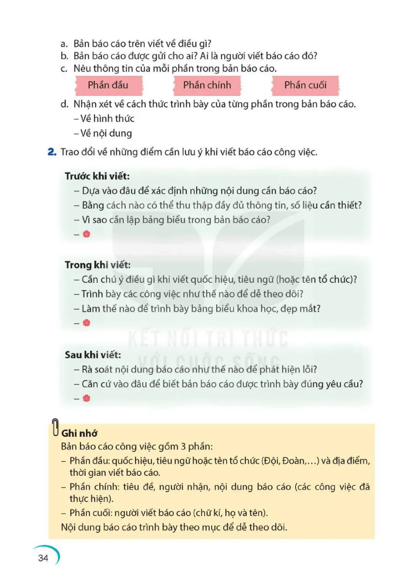
a. Bản báo cáo trên viết về điều gì?
b. Bản báo cáo được gửi cho ai? Ai là người viết báo cáo đó?
C. Nêu thông tin của mỗi phần trong bản báo cáo.
Phần đầu
Phần chính
Phần cuối
d. Nhận xét về cách thức trình bày của từng phần trong bản báo cáo.
- Về hình thức
- Về nội dung
2. Trao đổi về những điểm cần lưu ý khi viết báo cáo công việc.
Trước khi viết:
— Dựa vào đâu để xác định những nội dung cần báo cáo?
— Bằng cách nào có thể thu thập đầy đủ thông tin, số liệu cần thiết?
— Vì sao cần lập bảng biểu trong bản báo cáo?
Trong khi viết:
— Cần chú ý điều gì khi viết quốc hiệu, tiêu ngữ (hoặc tên tổ chức)?
— Trình bày các công việc như thế nào để dễ theo dõi?
— Làm thế nào để trình bày bảng biểu khoa học, đẹp mắt?
Sau khi viết:
- Rà soát nội dung báo cáo như thế nào để phát hiện lỗi?
— Căn cứ vào đâu để biết bản báo cáo được trình bày đúng yêu cầu?
Ù Ghi nhớ
Bản báo cáo công việc gồm 3 phần:
- Phần đầu: quốc hiệu, tiêu ngữ hoặc tên tổ chức (Đội, Đoàn,...) và địa điểm,
thời gian viết báo cáo.
- Phần chính: tiêu đề, người nhận, nội dung báo cáo (các công việc đã
thực hiện).
- Phần cuối: người viết báo cáo (chữ kí, họ và tên).
Nội dung báo cáo trình bày theo mục để dễ theo dõi.
34
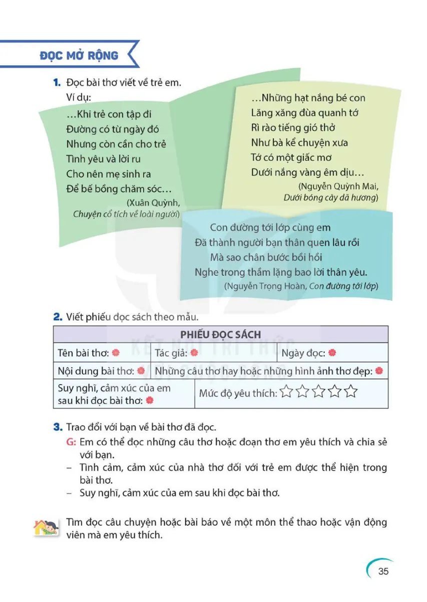
ĐỌC MỞ RỘNG
1. Đọc bài thơ viết về trẻ em.
Ví dụ:
...Những hạt nắng bé con
...Khi trẻ con tập đi
Lăng xăng đùa quanh tớ
Đường có từ ngày đó
Rì rào tiếng gió thở
Nhưng còn cần cho trẻ
Như bà kể chuyện xưa
Tình yêu và lời ru
Tớ có một giấc mơ
Cho nên mẹ sinh ra
Dưới nắng vàng êm dịu...
Để bế bồng chăm sóc...
(Nguyễn Quỳnh Mai,
(Xuân Quỳnh,
Dưới bóng cây đã hương)
Chuyện cổ tích về loài người)
Con đường tới lớp cùng em
Đã thành người bạn thân quen lâu rồi
Mà sao chân bước bối hối
Nghe trong thầm lặng bao lời thân yêu.
(Nguyễn Trọng Hoàn, Con đường tới lớp)
2. Viết phiếu đọc sách theo mẫu.
PHIẾU ĐỌC SÁCH
Tên bài thơ: @
Tác giả: ®
Ngày đọc: #
Nội dung bài thơ: ®
Những câu thơ hay hoặc những hình ảnh thơ đẹp: ®
Suy nghĩ, cảm xúc của em
Mức độ yêu thích: ÝY ŸY
ÝY YỲ
sau khi đọc bài thơ: ®
3. Trao đối với bạn về bài thơ đã đọc.
G: Em có thể đọc những câu thơ hoặc đoạn thơ em yêu thích và chia sẻ
với bạn.
Tình cảm, cảm xúc của nhà thơ đối với trẻ em được thể hiện trong
bài thơ.
— Suy nghĩ, cảm xúc của em sau khi đọc bài thơ.
Tìm đọc câu chuyện hoặc bài báo về một môn thể thao hoặc vận động
viên mà em yêu thích.
35
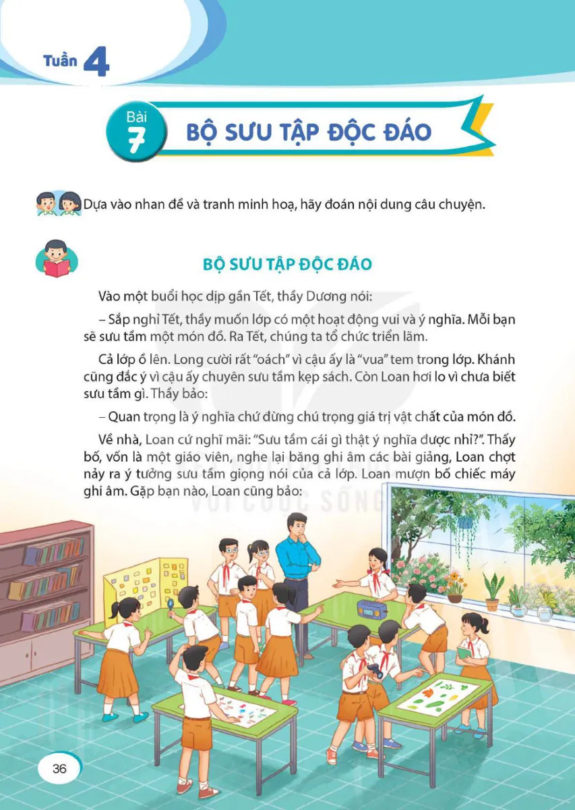
Tuân
Bài
BỘ SƯU TẬP ĐỘC ĐÁO
Dựa vào nhan đề và tranh minh hoạ, hãy đoán nội dung câu chuyện.
BỘ SƯU TẬP ĐỘC ĐÁO
Vào một buổi học dịp gần Tết, thầy Dương nói:
- Sắp nghỉ Tết, thây muốn lớp có một hoạt động vui và ý nghĩa. Mỗi bạn
sẽ sưu tầm một món đồ. Ra Tết, chúng ta tổ chức triển lãm.
Cả lớp Ồồ lên. Long cười rất “oách” vì cậu ấy là “vua” tem trong lớp. Khánh
cũng đắc ý vì cậu ấy chuyên sưu tầm kẹp sách. Còn Loan hơi lo vì chưa biết
sưu tâm gì. Thây bảo:
- Quan trọng là ý nghĩa chứ đừng chú trọng giá trị vật chất của món đổ.
Về nhà, Loan cứ nghĩ mãi: “Sưu tầm cái gì thật ý nghĩa được nhỉ?” Thấy
bố, vốn là một giáo viên, nghe lại băng ghi âm các bài giảng, Loan chợt
nảy ra ý tưởng sưu tầm giọng nói của cả lớp. Loan mượn bố chiếc máy
ghi âm. Gặp bạn nào, Loan cũng bảo:
36
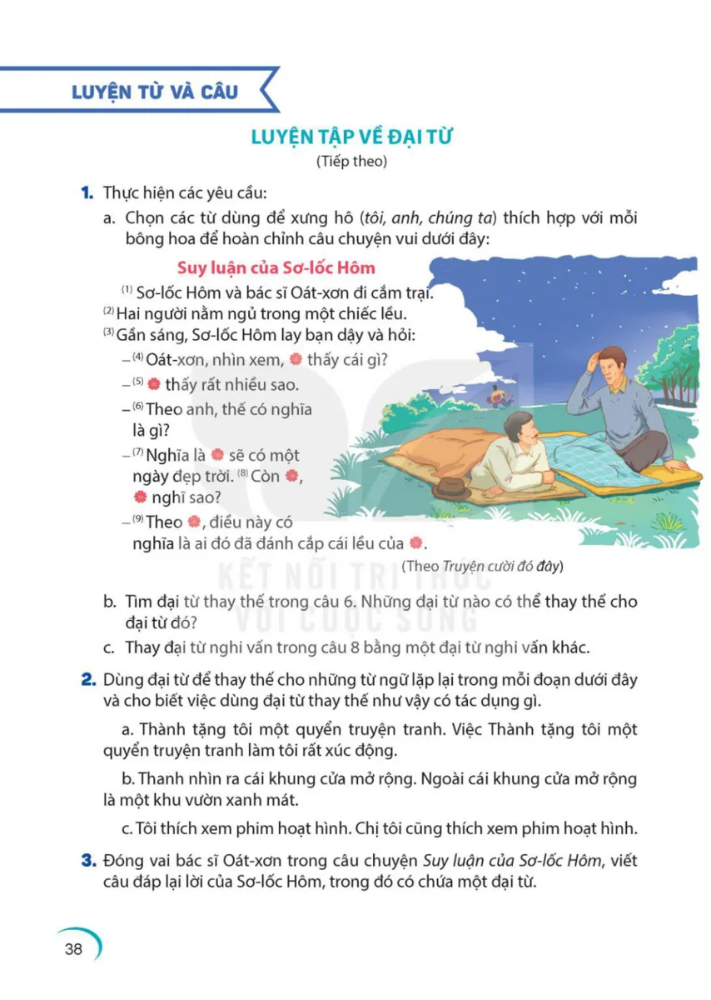
- Cậu nói một câu chúc lớp mình đi
- Chúc gì được chứ?
- Gì cũng được. Chúng mình sắp chuyển cấp rồi.
Thế là mỗi bạn một câu. Trong vài ngày, Loan đã ghi âm xond.
Ngày triển lãm, lớp học như một cửa hiệu tạp hoá vui nhộn. Đến lượt
mình, Loan trịnh trọng cắm máy ghi âm vào loa rồi hồi hộp bật lên. Cả lớp
tò mò nhìn chiếc loa.
- Chúc tình bạn của chúng mình thật lâu bền!
Phượng giật mình. Chính là giọng của bạn ấy. Giọng Phượng mềm mại
như phát thanh viên. Cả lớp vỗ tay như pháo ran. Vài bạn chồm hẳn người
lên. Ai cũng háo hức chờ đến mình.
- Chúc ai có tật thì sửa, không có thì bỏ qua.
Cả lớp cười lăn. Long - chủ nhân của giọng nói liến thoắng vừa vang lên -
cũng ôm bụng cười. Cứ thế, mỗi giọng nói cất lên đều thật thân thương
và quen thuộc. Ai đi qua lớp Loan cũng ngạc nhiên vì những tiếng võ tay
liên tiếp vọng ra. Thỉnh thoảng, lại có tràng cười lớn, xen lẫn tiếng
thầy Dương:
- Độc đáo quá, ý nghĩa quái
(Theo Trương Chi Lộ, Ngọc Khánh dịch)
Từ ngữ
—_ Triển lãm: trưng bày sản phẩm để mọi người xem.
— Phát thanh viên: người đọc tin, bài trên đài phát thanh, đài truyền hình.
1. Thầy Dương muốn cả lớp thực hiện hoạt động gì? Các bạn trong lớp có
thái độ như thế nào với hoạt động ấy?
2. Đóng vai Loan, kể lại quá trình nảy ra ý tưởng và thực hiện ý tưởng cho
bộ sưu tập.
3. Các bạn cảm thấy thế nào về bộ sưu tập của Loan?
4. Theo em, vì sao thầy Dương cho rằng bộ sưu tập đó rất độc đáo?
5. Nếu lớp em cũng tổ chức một buổi triển lãm giống lớp của Loan, em sẽ
sưu tầm món đồ gì? Vì sao?
J7
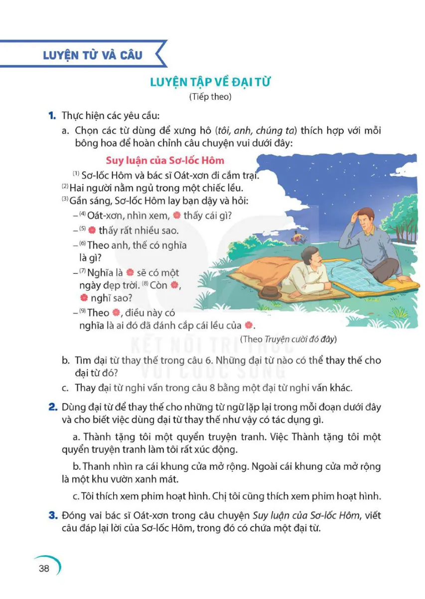
LUYỆN TỪ VÀ CÂU
LUYÊỆN TẬP VỀ ĐAI TỪ
(Tiếp theo)
1. Thực hiện các yêu cầu:
a. Chọn các từ dùng để xưng hô (tôi, anh, chúng ta) thích hợp với mỗi
bông hoa để hoàn chỉnh câu chuyện vui dưới đây:
Suy luận của Sơ-lốc Hôm
) Sg-lốc Hôm và bác sĩ Oát-xơn đi cắm tra
Hai người nằm ngủ trong một chiếc lều.
#® Gần sáng, Sơ-lốc Hôm lay bạn dậy và hỏi:
—!® Oát-xơn, nhìn xem, ° thấy cái gì?
® thấy rất nhiều sao.
'®Theo anh, thế có nghĩa
là gì?
—U Nghĩa là #® sẽ CÓ một
ngày đẹp trời. '' Còn
nghĩ sao?
điều này có
nghĩa là ai đó đã đánh cắp cái lều của ®.
(Theo Truyện cười đó đây)
b. Tìm đại từ thay thế trong câu 6. Những đại từ nào có thể thay thế cho
đại từ đó?
c. Thay đại từ nghi vấn trong câu 8 bằng một đại từ nghi vẫn khác.
2. Dùng đại từ để thay thế cho những từ ngữ lặp lại trong mỗi đoạn dưới đây
và cho biết việc dùng đại từ thay thế như vậy có tác dụng gì.
a. Thành tặng tôi một quyển truyện tranh. Việc Thành tặng tôi một
quyển truyện tranh làm tôi rất xúc động.
b. Thanh nhìn ra cái khung cửa mở rộng. Ngoài cái khung cửa mở rộng
là một khu vườn xanh mát.
c. Tôi thích xem phim hoạt hình. Chị tôi cũng thích xem phim hoạt hình.
3. Đóng vai bác sĩ Oát-xơn trong câu chuyện Suy luận của Sơ-lốc Hôm, viết
câu đáp lại lời của Sơ-lốc Hôm, trong đó có chứa một đại từ.
38
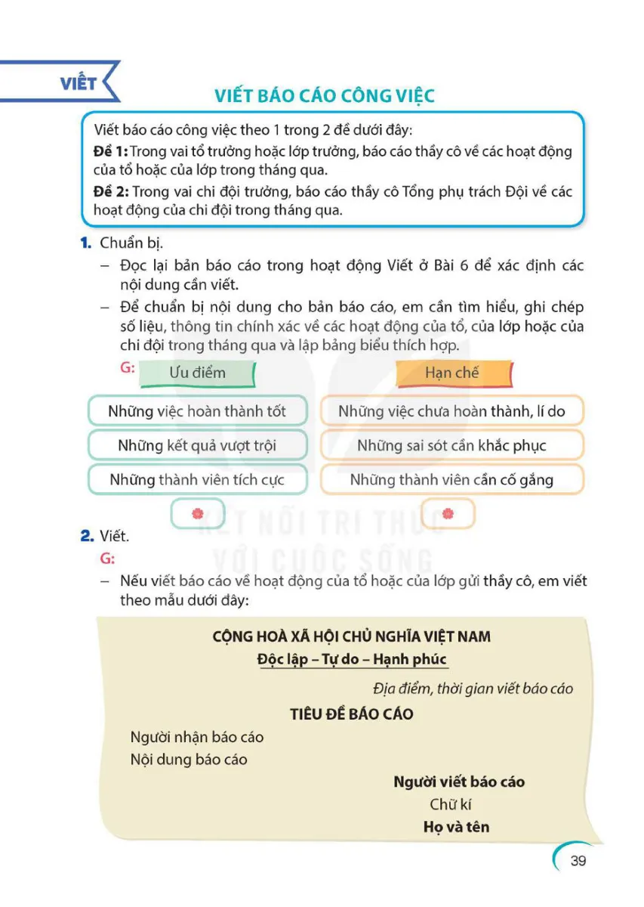
VIÊT
VIẾT BÁO CÁO CÔNG VIỆC
Viết báo cáo công việc theo 1 trong 2 đề dưới đây:
Đề 1 : Trong vai tổ trưởng hoặc lớp trưởng, báo cáo thầy cô về các hoạt động
của tổ hoặc của lớp trong tháng qua.
Đề 2: Trong vai chỉ đội trưởng, báo cáo thầy cô Tổng phụ trách Đội về các
hoạt động của chỉ đội trong tháng qua.
1. Chuẩn bị.
¬ Đọc lại bản báo cáo trong hoạt động Viết ở Bài 6 để xác định các
nội dung cần viết.
- Để chuẩn bị nội dung cho bản báo cáo, em cần tìm hiểu, ghi chép
số liệu, thông tin chính xác về các hoạt động của tổ, của lớp hoặc của
chỉ đội trong tháng qua và lập bảng biểu thích hợp.
Ưu điểm
Hạn chế
Những việc hoàn thành tốt
Những kết quả vượt trội
Những thành viên tích cực
Những việc chưa hoàn thành, lí do
Những sai sót cần khắc phục
Những thành viên cần cố gắng
NũI TRỊ TH
2. Viết.
VfI "HP
— Nếu viết báo cáo về hoạt động của tổ hoặc của lớp gửi thầy cô, em viết
theo mẫu dưới đây:
CỘNG HOÀ XÃ HỘI CHỦ NGHĨA VIỆT NAM
Độc lập - Tự do - Hạnh phúc
Địa điểm, thời gian viết báo cáo
TIÊU ĐỀ BÁO CÁO
Người nhận báo cáo
Nội dung báo cáo
Người viết báo cáo
Chữ kí
Họ và tên
39
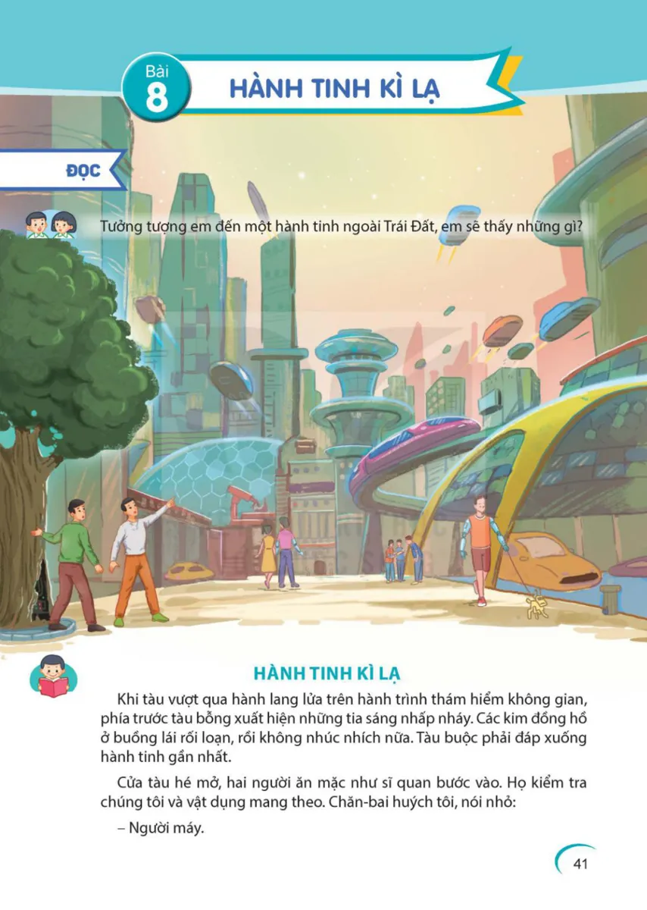
- Nếu viết báo cáo về hoạt động của chỉ đội gửi thầy cô Tổng phụ trách
Đội, em viết theo mẫu dưới đây:
LIÊN ĐỘI TRƯỜNG ®
ĐỘI THIẾU NIÊN TIỀN PHONG HỒ CHÍ MINH
Chi đội ®
Địa điểm, thời gian viết báo cáo
TIÊU ĐỀ BÁO CÁO
Người nhận báo cáo
Nội dung báo cáo
Thay mặt chỉ đội
CHI ĐỘI TRƯỞNG
Chữ kí
Họ và tên
Lưu ý:
— Dùng dấu gạch ngang đánh dấu mỗi ý trình bày.
— Trước khi viết báo cáo, nên lập bảng thống kê và tổng hợp số liệu về các
công việc đã làm.
3. Đọc soát và chỉnh sửa.
G:
—
Bản báo cáo có đầy đủ các phần theo quy định hay không?
-
Các thông tin trong bản báo cáo có đảm bảo tính chính xác và được
trình bày rõ ràng theo các mục hay không?
- Bảng biểu, số liệu có được trình bày rõ ràng, sạch đẹp hay không?
Trao đổi với người thân:
a. Những hoạt động em đã tham gia trong tháng vừa qua.
b. Những mong muốn, dự định của em trong tháng tiếp theo.
Hoạt động học tập
của tổ, của lớp
Hoạt động của
chỉ đội, liên đội
40
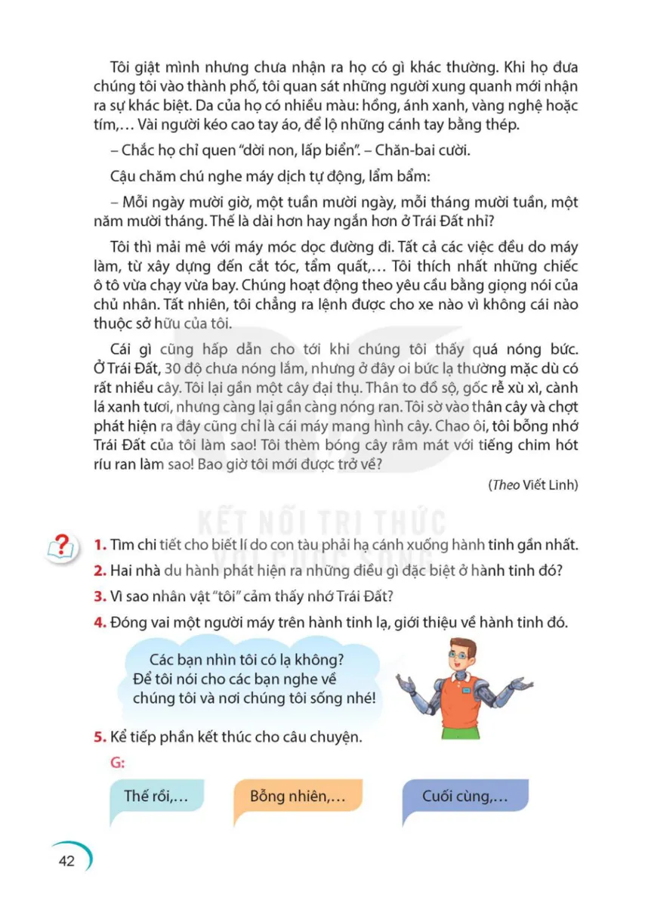
Bài
8
HÀNH TINH KÌ LẠ
ĐỌC
Tưởng tượng em đến một hành tỉnh ngoài Trái Đất, em sẽ thấy những gì?
HÀNH
TINH
KÌ LẠ
Khi tàu vượt qua hành lang lửa trên hành trình thám hiểm không gian,
phía trước tàu bỗng xuất hiện những tia sáng nhấp nháy. Các kim đồng hồ
ở buồng lái rối loạn, rồi không nhúc nhích nữa. Tàu buộc phải đáp xuống
hành tỉnh gần nhất.
Cửa tàu hé mở, hai người ăn mặc như sĩ quan bước vào. Họ kiểm tra
chúng tôi và vật dụng mang theo. Chăn-bai huých tôi, nói nhỏ:
— Người máy.
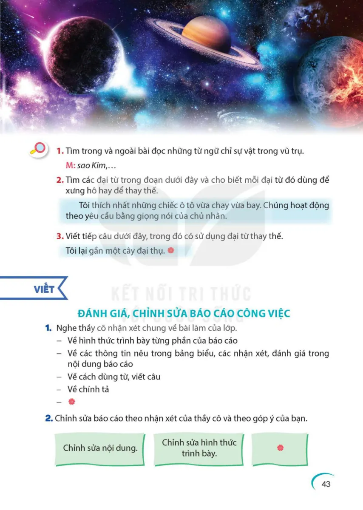
Tôi giật mình nhưng chưa nhận ra họ có gì khác thường. Khi họ đưa
chúng tôi vào thành phố, tôi quan sát những người xung quanh mới nhận
ra sự khác biệt. Da của họ có nhiều màu: hồng, ánh xanh, vàng nghệ hoặc
tím,... Vài người kéo cao tay áo, để lộ những cánh tay bằng thép.
- Chắc họ chỉ quen “dời non, lấp biển” - Chăn-bai cười.
Cậu chăm chú nghe máy dịch tự động, lầm bẩm:
- Mỗi ngày mười giờ, một tuần mười ngày, mỗi tháng mười tuần, một
năm mười tháng. Thế là dài hơn hay ngắn hơn ở Trái Đất nhỉ?
Tôi thì mải mê với máy móc dọc đường đi. Tất cả các việc đều do máy
làm, từ xây dựng đến cắt tóc, tầm quất,... Tôi thích nhất những chiếc
ô tô vừa chạy vừa bay. Chúng hoạt động theo yêu cầu bằng giọng nói của
chủ nhân. Tất nhiên, tôi chẳng ra lệnh được cho xe nào vì không cái nào
thuộc sở hữu của tôi.
Cái gì cũng hấp dẫn cho tới khi chúng tôi thấy quá nóng bức.
ỞTrái Đất, 30 độ chưa nóng lắm, nhưng ở đây oi bức lạ thường mặc dù có
rất nhiều cây. Tôi lại gần một cây đại thụ. Thân to đồ sộ, gốc rễ xù xì, cành
lá xanh tươi, nhưng càng lại gần càng nóng ran. Tôi sờ vào thân cây và chợt
phát hiện ra đây cũng chỉ là cái máy mang hình cây. Chao ôi, tôi bỗng nhớ
Trái Đất của tôi làm sao! Tôi thèm bóng cây râm mát với tiếng chim hót
ríu ran làm sao! Bao giờ tôi mới được trở về?
(Theo Viết Linh)
F MiI TRỊ THIỊP
1. Tìm chỉ tiết cho biết lí do con tàu phải hạ cánh xuống hành tỉnh gần nhất.
2. Hai nhà du hành phát hiện ra những điều gì đặc biệt ở hành tỉnh đó?
3. Vì sao nhân vật “tôi” cảm thấy nhớ Trái Đất?
4. Đóng vai một người máy trên hành tỉnh lạ, giới thiệu về hành tỉnh đó.
Các bạn nhìn tôi có lạ không?
Để tôi nói cho các bạn nghe về
chúng tôi và nơi chúng tôi sống nhé!
5. Kể tiếp phần kết thúc cho câu chuyện.
Thế rồi,...
Bỗng nhiên,..
Cuối cùng,...
42
1. Tìm trong và ngoài bài đọc những từ ngữ chỉ sự vật trong vũ trụ.
M: sao Kim,...
2. Tìm các đại từ trong đoạn dưới đây và cho biết mỗi đại từ đó dùng để
xưng hô hay để thay thế.
Tôi thích nhất những chiếc ô tô vừa chạy vừa bay. Chúng hoạt động
theo yêu cầu bằng giọng nói của chủ nhân.
3. Viết tiếp câu dưới đây, trong đó có sử dụng đại từ thay thế.
Tôi lại gần một cây đại thụ. &
VIÊT
KẾT NũI TRÍ THỨP
ĐÁNH GIÁ, CHỈNH SỬA BÁO CÁO CÔNG VIỆC
1. Nghe thầy cô nhận xét chung về bài làm của lớp.
— Về hình thức trình bày từng phần của báo cáo
— Về các thông tin nêu trong bảng biểu, các nhận xét, đánh giá trong
nội dung báo cáo
— Về cách dùng từ, viết câu
—_ Về chính tả
2. Chỉnh sửa báo cáo theo nhận xét của thầy cô và theo góp ý của bạn.
Chỉnh sửa nội dung.
Chỉnh sửa hình thức
trình bày.
43
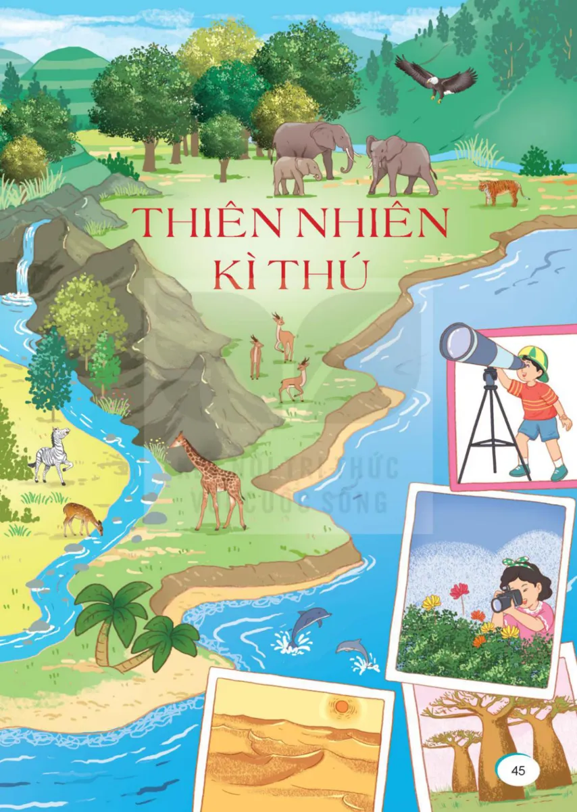
NỘI VẢ NGHE
NHỮNG ĐIỂM VUI CHƠI LÍ THÚ
Yêu cầu: Giới thiệu về một nơi vui chơi mà em đã đến hoặc muốn đến.
1. Chuẩn bị.
G:
Chọn nơi vui chơi để
Dự kiến các nội dung
giới thiệu (nơi đã đến Nhớ lại những điều hấp dẫn Ì
sẽ giới thiệu.
hoặc đã thấy qua sách về nơi vui chơi (quang cảnh,
báo, phim ảnh,...).
hoạt động vui chơi,...).
Tìm các phương tiện hỗ trợ
(tranh ảnh minh hoa,...).
2. Trình bày.
Dựa vào nội dung đã chuẩn bị, giới thiệu về nơi vui chơi mà em đã đến
hoặc muốn đến.
Giới thiệu chung (tên, địa chỉ nơi
Giới thiệu quang cảnh và các
vui chơi, lí do em biết nơi đó,...).
hoạt động vui chơi.
Nêu cảm xúc khi được trải nghiệm
hoặc mong muốn được đến nơi
Nêu những điều em thấy lí thú.
chơi.
Lưu ý:
—
Khi nói, có thể thể hiện suy nghĩ, cảm xúc qua giọng nói, cử chỉ,
điệu bộ,...
-_
Khi nghe, nên ghi lại những điều thú vị mà em muốn học tập trong bài
giới thiệu của bạn.
3. Đánh giá.
Nội dung giới thiệu hấp dẫn
Người có phản hồi tích cực
Sưu tầm tranh ảnh và bài viết về các hành tỉnh ngoài Trái Đất. Chia sẻ với
người thân về một điều thú vị em tìm hiểu được.
44
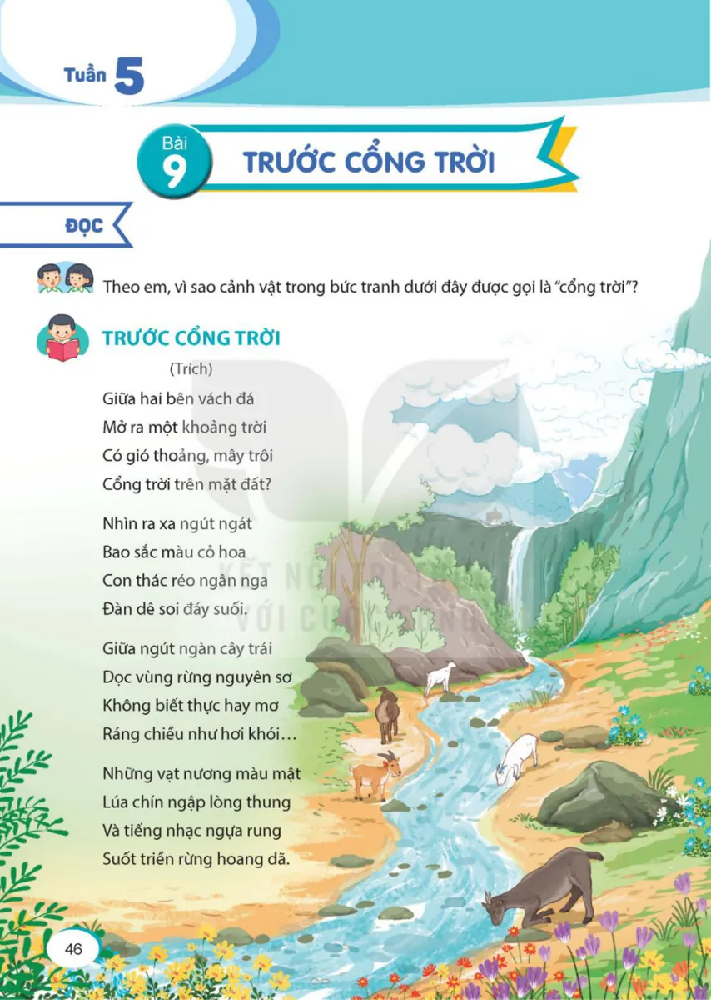
THIEN NHIEN
THU
45
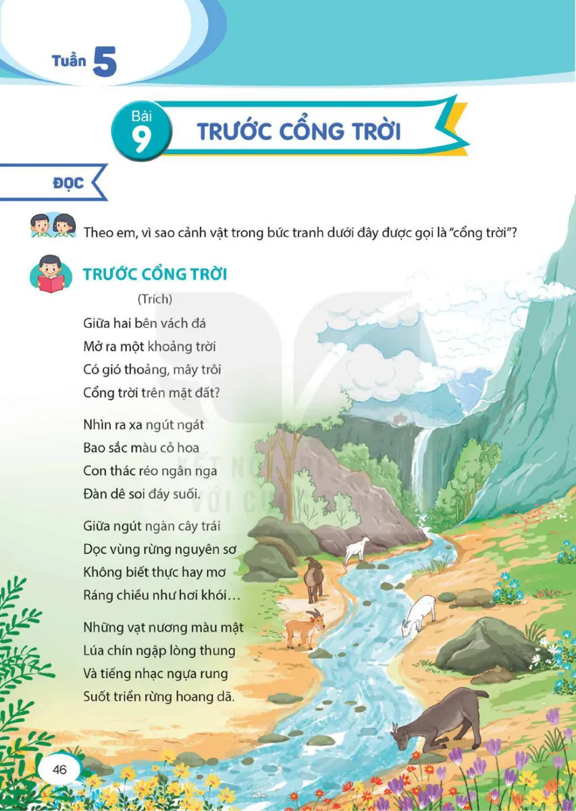
Tuân
Bài
TRƯỚC CỔNG TRỜI
°
ĐỌC
Theo em, vì sao cảnh vật trong bức tranh dưới đây được gọi là “cổng trời”?
TRƯỚC CỔNG TRỜI
(Trích)
Giữa hai bên vách đá
Mở ra một khoảng trời
Có gió thoảng, mây trôi
Cổng trời trên mặt đất?
Nhìn ra xa ngút ngát
Bao sắc màu cỏ hoa
Con thác réo ngân nga
Đàn dê soi đáy suối.
Giữa ngút ngàn cây trái
Dọc vùng rừng nguyên sơ
Không biết thực hay mơ
Ráng chiều như hơi khói...
Những vạt nương màu mật
Lúa chín ngập lòng thung
Và tiếng nhạc ngựa rung
Suốt triển rừng hoang dã.
46
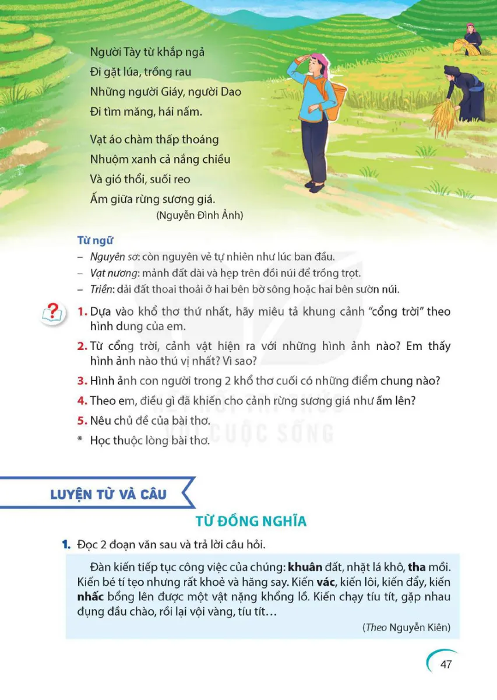
Người Tày từ khắp ngả
Đi gặt lúa, trồng rau
Những người Giáy, người Dao
Đi tìm măng, hái nấm.
Vạt áo chàm thấp thoáng
Nhuộm xanh cả nắng chiều
Và gió thổi, suối reo
Ấm giữa rừng sương giá.
(Nguyễn Đình Ảnh)
Từ ngữ
— Nguyên sơ: còn nguyên vẻ tự nhiên như lúc ban đầu.
Vạt nương: mảnh đất dài và hẹp trên đổi núi để trồng trọt.
—_ Triển: dải đất thoai thoải ở hai bèn bờ sông hoặc hai bên sườn núi.
1. Dựa vào khổ thơ thứ nhất, hãy miêu tả khung cảnh “cổng trời” theo
hình dung của em.
2. Từ cổng trời, cảnh vật hiện ra với những hình ảnh nào? Em thấy
hình ảnh nào thú vị nhất? Vì sao?
3. Hình ảnh con người trong 2 khổ thơ cuối có những điểm chung nào?
4. Theo em, điều gì đã khiến cho cảnh rừng sương giá như ấm lên?
5, Nêu chủ đề của bài thơ.
*- Học thuộc lòng bài thơ.
|
SŨNE
LUYỆN TỪ VÀ CÂU
TỪ ĐỒNG NGHĨA
1. Đọc 2 đoạn văn sau và trả lời câu hỏi.
Đàn kiến tiếp tục công việc của chúng: khuân đất, nhặt lá khô, tha mỗi.
Kiến bé tí tẹo nhưng rất khoẻ và hăng say. Kiến vác, kiến lôi, kiến đẩy, kiến
nhấc bổng lên được một vật nặng khổng lồ. Kiến chạy tíu tít, gặp nhau
đụng đầu chào, rồi lại vội vàng, tíu tít...
(Theo Nguyễn Kiên)
47
Một chú ve kéo đàn. Tiếng đàn ngân lên phá tan bầu không khí
tĩnh lặng của buổi ban mai. Rồi chú thứ hai, thứ ba, thứ tư cùng hoà vào
khúc tấu. Từ sáng sớm, khi mặt trời mới ló rạng, tiếng ve đã át tiếng chim.
(Theo Hữu Vi)
a. Những từ in đậm trong đoạn văn nào có nghĩa giống nhau?
b. Những từ in đậm trong đoạn văn nào có nghĩa gần giống nhau?
Nêu nét nghĩa khác nhau giữa chúng.
2. Tìm trong mỗi nhóm từ dưới đây những từ có nghĩa giống nhau.
a. chăm chỉ, cần cù, sắt đá, siêng năng, chịu khó
b. non sông, đất nước, núi non, giang sơn, quốc gia
c. yên bình, tĩnh lặng, thanh bình, bình tĩnh, yên tĩnh
Ghi nhớ
- Từ đồng nghĩa là những từ có nghĩa giống nhau (ví dụ: bố, ba, cha,...) hoặc
gần giống nhau (ví dụ: ăn, xơi, chén,....).
- Khi viết hoặc nói, cân lựa chọn từ phù hợp nhất với ý nghĩa được thể hiện.
3. Những thành ngữ nào dưới đây chứa các từ đồng nghĩa? Đó là những
từ nào?
a. Chân yếu tay mềm
b. Thức khuya dậy sớm
c. Đầu voi đuôi chuột
d. Một nắng hai sương
e. Ngăn sông cấm chợ
g. Thay hình đổi dạng
4. Chọn từ thích hợp trong mỗi nhóm từ đồng nghĩa để hoàn thiện đoạn văn.
Tháng Ba, tháng Tư, Tây Trường Sơn (khai mạc/ bắt đâu) mùa mưa.
Mưa tới đâu, cỏ lá '?(tốt tươi/ tươi tắn) tới đó. Phía trước bầy voi luôn luôn
là những vùng đất #(no nê/ no đủ), nơi chúng có thể sống những ngày
sung sướng bù lại thời gian “(đói khát/ đói rách) của mùa thu. Vì thế,
bầy voi cứ theo sau những cơn mưa mà đi. Đó là luật lệ của rừng.
(Theo Vũ Hùng)
48
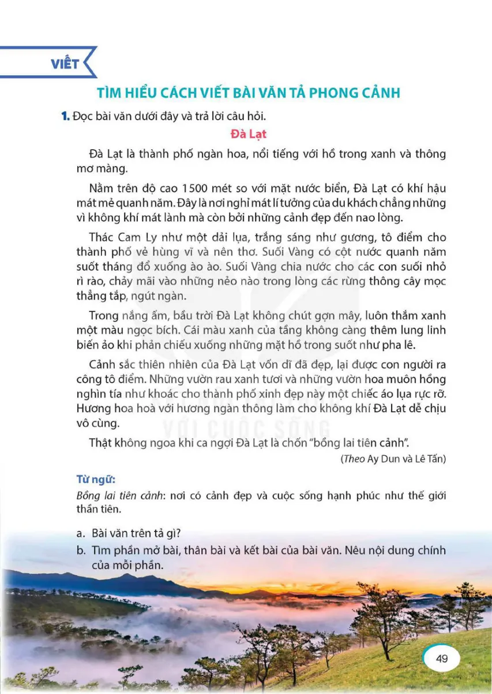
VIÊT
TÌM HIỂU CÁCH VIẾT BÀI VĂN TẢ PHONG CẢNH
1. Đọc bài văn dưới đây và trả lời câu hỏi.
Đà Lạt
Đà Lạt là thành phố ngàn hoa, nổi tiếng với hồ trong xanh và thông
mơ màng.
Nằm trên độ cao 1500 mét so với mặt nước biển, Đà Lạt có khí hậu
mát mẻ quanh năm. Đây là nơi nghỉ mát lítưởng của du khách chẳng những
vì không khí mát lành mà còn bởi những cảnh đẹp đến nao lòng.
Thác Cam Ly như một dải lụa, trắng sáng như gương, tô điểm cho
thành phố vẻ hùng vĩ và nên thơ. Suối Vàng có cột nước quanh năm
suốt tháng đổ xuống ào ào. Suối Vàng chia nước cho các con suối nhổ
rì rào, chảy mãi vào những nẻo nào trong lòng các rừng thông cây mọc
thẳng tắp, ngút ngàn.
Trong nắng ấm, bầu trời Đà Lạt không chút gợn mây, luôn thắm xanh
một màu ngọc bích. Cái màu xanh của tầng không càng thêm lung linh
biến ảo khi phản chiếu xuống những mặt hồ trong suốt như pha lê.
Cảnh sắc thiên nhiên của Đà Lạt vốn dĩ đã đẹp, lại được con người ra
công tô điểm. Những vườn rau xanh tươi và những vườn hoa muôn hồng
nghìn tía như khoác cho thành phố xinh đẹp này một chiếc áo lụa rực rỡ.
Hương hoa hoà với hương ngàn thông làm cho không khí Đà Lạt dễ chịu
VÔ cùng.
Thật không ngoa khi ca ngợi Đà Lạt là chốn “bổng lai tiên cảnh”.
(Theo Ay Dun và Lê Tấn)
Từ ngữ:
Bồng lai tiên cảnh: nơi có cảnh đẹp và cuộc sống hạnh phúc như thế giới
thần tiên.
a. Bài văn trên tả gì?
b. Tìm phần mở bài, thân bài và kết bài của bài văn. Nêu nội dung chính
của mỗi phần.
49
c.. Trong phần thân bài, phong cảnh được tả theo trình tự nào? Tìm từ ngữ
được sử dụng để làm nổi bật vẻ đẹp của phong cảnh.
VỊ trí địa lÍ
Vẻ đẹp
như một
do thiên nhiên ưu đãi
Khí hậu
dải lụa,
trắng sáng
như gương
thác nước
Phong cảnh
Cảnh vật
dòng suối
Đà Lạt
Vườn hoa
Vẻ đẹp
do con người tạo nên
Vườn rau
d. Tình cảm của người viết đối với phong cảnh được thể hiện qua những
chỉ tiết nào?
2. Trao đổi về những điểm cần lưu ý khi viết bài văn tả phong cảnh.
Cách lựa chọn
Bố cục
Cách làm nổi bật
Phong cảnh
Trình tự
cảnh vật để
đặc điểm của
được miêu tả
bài văn
miêu tả
miêu tả
phong cảnh
Ù Ghi nhớ
Bài văn tả phong cảnh thường có 3 phần:
— Mở bài: Giới thiệu khái quát về phong cảnh.
- Thân bài: Tả lần lượt từng phần hoặc từng vẻ đẹp của phong cảnh.
- Kết bài: Nêu nhận xét hoặc cảm nghĩ về phong cảnh.
1. Sưu tâm đoạn văn hoặc bài văn tả phong cảnh (cảnh sông suối, ao hồ,
biển đảo,...).
2. Tìm đọc sách báo khoa học viết về động vật hoang dã.
50
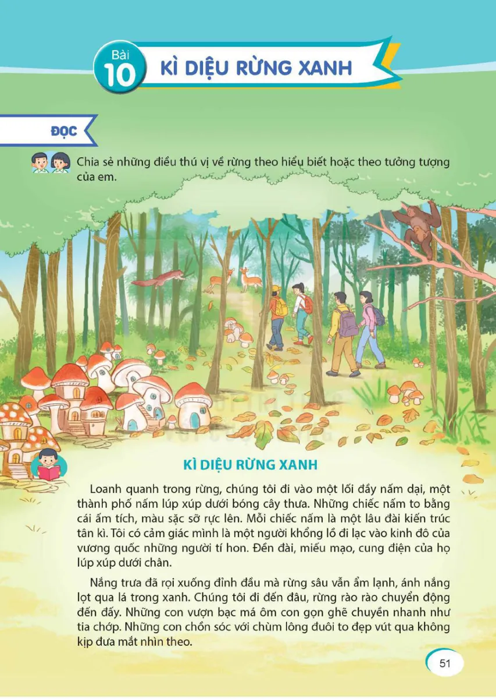
Bài
10 KỈ DIÊU RỪNG XANH
ĐỌC
Chia sẻ những điều thú vị về rừng theo hiểu biết hoặc theo tưởng tượng
của em.
KÌ DIỆU RỪNG XANH
Loanh quanh trong rừng, chúng tôi đi vào một lối đây nấm dại, một
thành phố nấm lúp xúp dưới bóng cây thưa. Những chiếc nấm to bằng
cái ấm tích, màu sặc sỡ rực lên. Mỗi chiếc nấm là một lâu đài kiến trúc
tân kì. Tôi có cảm giác mình là một người khổng lồ đi lạc vào kinh đô của
vương quốc những người tí hon. Đền đài, miếu mạo, cung điện của họ
lúp xúp dưới chân.
Nắng trưa đã rọi xuống đỉnh đầu mà rừng sâu vẫn ẩm lạnh, ánh nắng
lọt qua lá trong xanh. Chúng tôi đi đến đâu, rừng rào. rào chuyển động
đến đấy. Những con vượn bạc má ôm con gọn ghẽ chuyền nhanh như
tia chớp. Những con chồn sóc với chùm lông đuôi to đẹp vút qua không
kịp đưa mắt nhìn theo.
51
Sau một hồi len lách mải miết, rẽ bụi rậm, chúng tôi nhìn thấy một
bãi cây thưa thớt. Rừng khộp hiện ra trước mắt chúng tôi, lá úa vàng như
cảnh mùa thu. Tôi dụi mắt. Những sắc vàng động đậy. Mấy con mang vàng
hệt như màu lá đang ăn cỏ non. Những chiếc chân vàng giẫm lên thảm lá
vàng và sắc nắng cũng rực vàng trên lưng nó. Chỉ có mấy vạt cỏ xanh biếc
là rực lên giữa cái giang sơn vàng rợi.
Tôi có cảm giác mình lạc vào một thế giới thần bí.
(Theo Nguyễn Phan Hách)
Từ ngữ
— Tân kì: mới lạ.
— Rừng khộp: còn gọi là rừng thưa với những cây lá rộng, rụng lá vào mùa khô.
— Mang (hoằng): loài thú cùng họ với hươu, nai; sừng nhỏ, có hai nhánh;
lông màu vàng đỏ.
1. Vì sao nhân vật “tôi” có cảm giác đi lạc vào kinh đô của vương quốc
những người tí hon?
2. Muông thú trong rừng được miêu tả thế nào? Theo em, sự có mặt của
chúng mang lại vẻ đẹp gì cho rừng?
3. Vì sao cảnh vật rừng khộp được gọi là “giang sơn vàng rợi”?
4. Dựa vào nội dung đã tìm hiểu, em hãy đặt tên cho mỗi đoạn trong bài.
1. Irong bài Kì diệu rừng xanh, những sự vật nào của tự nhiên được
quan sát và miêu tả?
Về thực vật
Về động vật
Về hiện tượng tự nhiên
2. Tìm từ đồng nghĩa với mỗi từ dưới đây. Đặt câu với từ em tìm được.
gọn ghẽ
tí hon
thưa thớt
52
VIÊT.
TÌM HIỂU CÁCH VIẾT BÀI VĂN TẢ PHONG CẢNH
(Tiếp theo)
1. Đọc bài văn dưới đây và trả lời câu hỏi.
Bốn mùa trong ánh nước
Hồ Hoàn Kiếm là nơi quen thuộc với rất nhiều người. Cảnh đẹp lộng lẫy
từ ngọn cỏ, hàng cây cho tới nước hồ trong xanh gợn sóng.
Mùa hà, sau những cơn mưa rào, nước hồ đầy lên, màu nước như bớt
xanh hơn. Trong dông gió, hồ nổi sóng. Nhưng dông gió đến đâu thì mặt
hồ vẫn chỉ lăn tăn sóng gợn, trầm mặc giữa thỉnh không, soi bóng những
áng mây nổi rồi lại tan.
Về mùa đông, nước hồ cạn đi, sâu xuống, chân câu Thê Húc bỗng cao
hơn, lênh khênh. Trong cái lạnh bao trùm phố phường Hà Nội, nước hồ
lặng trong sương, một màn sương trong nhẹ và mỏng như khăn voan. Hồ
hiện ra vẻ cổ kính với những cành khô lá vàng in bóng xuống mặt nước
lặng thỉnh.
Có lẽ tưng bừng nhất là vào dịp tết Nguyên đán, hồ được trang điểm
lộng lẫy bởi đèn đủ màu, cờ bay phất phới và hoa rực rỡ. Trong mưa bay,
người người đi trấy hội. Ngàn vạn tiếng rao, tiếng mời chào của người bán
hàng rong cất lên như chim hót mùa xuân.
Nhưng hồ Hoàn Kiếm đẹp hơn cả là về mùa thu. Mùa thu Hà Nội
dường như không có gió lớn, đủ để nước hồ lắng sâu. Ánh nắng mùa thu
lại tươi nên mặt hồ ngời lên như ánh mắt thanh xuân. Những cây liễu bên
hổ xanh mướt, lá bay dịu dàng như mái tóc thiếu nữ. Những cây đa cổ thụ
xanh tốt và tráng kiện như những lão tướng, hàng rễ rủ như những bộ râu
oai hùng. Trong đền Ngọc Sơn có nhiều tiếng chim ríu rít, tiếng hót của
chim non, của ước mơ bay bổng.
Từng ánh nước của hồ Hoàn Kiếm có biết bao người đã ngắm, từng
bóng cây nơi này có biết bao người đã ngồi hóng mát, nghỉ ngơi và thầm
nghĩ về cuộc sống của mình ở một góc nhỏ nào trên trái đất này.
(Theo Lê Phương Liên)
S3
a. Bài văn trên tả phong cảnh ở đâu?
b. Tìm phần mở bài, thân bài, kết bài của bài văn và nêu ý chính của
từng phần.
c. Trong phần thân bài, cảnh hổ Hoàn Kiếm được tả vào những thời gian
nào? Những từ ngữ nào giúp em nhận biết như vậy?
d. Theo trình tự miêu tả trong bài, người đọc cảm nhận được đặc điểm gì
của cảnh hồ Hoàn Kiếm?
2. Em học được những gì về cách miêu tả phong cảnh từ bài văn trên?
Sử dụng nhiều giác quan
Sử dụng nhiều hình ảnh
để quan sát, cảm nhận
so sánh để làm nổi bật
cảnh vật.
đặc điểm từng cảnh vật.
3. So sánh trình tự miêu tả của bài Bốn mùa trong ánh nước với bài Đà Lạt.
U Ghi nhớ
Ngoài cách tả lần lượt từng phần, từng vẻ đẹp của phong cảnh, có thể
tả phong cảnh theo trình tự thời gian (theo các mùa trong năm, theo
các buổi trong ngày, theo sự đổi thay của cảnh qua năm tháng,...)
hoặc phối hợp cả hai cách để miêu tả.
FT NI TRÍ THỨP
ĐỌC MỞ RỘNG
'I P L
_w
Việt Nam là ngôi nhà
1. Đọc sách báo khoa học viết về
(Theo
của rất nhiều loài động vật
động vật hoang dã.
hoang dã. Năm nào cũng
hoang đã)
có những loài mới được
Trên Trái Đất của
phát hiện và ghi nhận.
chúng ta có vô vàn loài
(Theo
động vật sinh sống.
Mười vạn
câu hỏi Sự tồn tại của thể giới
Ngựa rừng mình dài,
Vì sao?)
động vật khiến cho
Trái Đất luôn tràn đây
chân thon và cao. Ngựa
sức sống.
(neo
rừng sống cuộc sống
Thú rừng hoang dã, tự do trên các
Tây Nguyên) - triển núi thấp ven dãy
Trường Sơn.
94
2. Viết phiếu đọc sách theo mẫu.
PHIẾU ĐỌC SÁCH
Tên sách báo: ®
Tác giả: ®
Ngày đọc: ®
Nội dung chính:
Các loài động vật hoang dã được nói tới: &
Mức độ yêu thích:
Những thông tin mới và bổ ích đối với em: ®
3. Trao đổi với bạn về sách báo đã đọc.
Em có thể chọn một trong các hoạt động sau:
-_
Tóm tắt những thông tin chính đã đọc về thế giới động vật hoang dã
(tên loài vật, nơi sinh sống, đặc điểm, thói quen,...).
-_
Chia sẻ những thông tin thú vị về loài vật đã đọc trong sách báo.
Ghi chép những thông tin quan trọng về một số động vật có tên trong
Sách đỏ Việt Nam.
59
Tuần &
Bài
HANG SƠN ĐOONG -
Ì
NHỮNG ĐIỀU KÌ THÚ
ĐỌC
Em Biết những điều gì về hang Sơn Đoòng?
SƠN ĐOÒNG - NHỮNG ĐIỀU KÌ THÚ
Hang Sơn Đoòng (Quảng Bình) được coi là một trong
những tác phẩm tuyệt vời nhất của tạo hoá.
Sơn Đoòng được xác định có niên đại tới 5 triệu năm tuổi.
Hang Sơn Đoòng được hình thành từ một vết đứt gãy
của dãy Trường Sơn, bị dòng nước sông Rào Thương
bào mòn liên tục trong một khoảng thời gian dài (từ 2
đến 5 triệu năm). Quá trình đó đã tạo nên một “lỗ hổng
khống lồ” ngay dưới mặt đất.
56B
Sơn Đoòng là hang động tự nhiên lớn nhất thế giới.
Theo ước tính, hang động này có chiều dài lên tới 9 ki-lô-mét, thể tích
38,5 triệu mét khối. Nó có thể chứa tới 68 máy bay cỡ lớn Bô-inh 777 hoặc
cả một khu phố sâm uất với những toà nhà cao 40 tầng.
Sơn Đoòng sở hữu hệ sinh thái đặc biệt.
Trong hang Sơn Đoòng, có một khu rừng nguyên sinh tuyệt đẹp với
thảm thực vật phong phú, khác lạ. Cây cối ở đây khá mỏng manh, dù là cây
thân gỗ. Sơn Đoòng còn là nơi trú ngụ của nhiều loài động vật, trong đó có
một số loài cá, nhện, cuốn chiếu, bọ cạp,... với đặc điểm chung là không
có mắt và cơ thể trong suốt.
Vẫn còn những điều bí ẩn về hang động lớn nhất hành tỉnh này chưa
được giải mã. Liệu những điều trên có đủ khiến bạn muốn đặt chân tới nơi
này một lần trong đời?
(Phan Nguyên tổng hợp)
Từ ngữ:
Rừng nguyên sinh: rừng tự nhiên chưa hoặc ít bị tác động bởi con người, chưa
làm thay đổi cấu trúc của rừng.
1. Những câu được in đậm trong văn bản cho biết điều gì?
2. Quá trình hình thành hang Sơn Đoòng được giới thiệu như thế nào?
3. Những chỉ tiết nào cho thấy hang Sơn Đoòng rất lớn?
4. Nêu những điều đặc biệt của hệ sinh thái trong hang Sơn Đoòng.
5. Tưởng tượng em là hướng dẫn viên du lịch, hãy giới thiệu hang
G: Tham khảo những thông tin dưới đây:
SƠN ĐOÖNG
-Năm 2013, được ghi nhận là hang động
tự nhiên lớn nhất thế giới.
- Năm 2014, được bình chọn là một trong
52 điểm du lịch hấp dẫn nhất thế giới.
- Nằm 2020, được vinh danh là một trong 20
kì quan phá vỡ kỉ lục tự nhiên.
57
LUYỆN TỪ VÀ CÂU
LUYỆN TẬP VỀ TỪ ĐỒNG NGHĨA
1. Chọn từ thích hợp thay cho bông hoa trong mỗi thành ngữ dưới đây:
6G: Từ cần tìm đồng nghĩa với từ in đậm trong mỗi thành ngữ.
lớn
nơi
ƯỚC
lượt
yên
lành
a. Ngày ® tháng tốt
d.Cầu được ®# thấy
b. Năm lần bảy ®
e. Đao to búa ®
c. Sóng ® biển lặng
g.Đi đến & về đến chốn
2. Tìm từ đồng nghĩa với mỗi từ in đậm trong đoạn thơ dưới đây:
Góc sân nho nhỏ mới xây
Chiều chiều em đứng nơi này em trông
Thấy trời xanh biếc mênh mông
Cánh cò chớp trắng trên sông Kinh Thây...
(Trần Đăng Khoa)
3. Chọn từ thích hợp trong ngoặc đơn để hoàn thành đoạn văn.
Mưa mùa xuân xôn xao, phơi phới. Những hạt
mưa ”'(bé mọn, bé con, bé nhỏ), mềm mại, rơi như
nhảy nhót. Hạt nọ tiếp hạt kia đan xuống mặt
đất. Mặt đất đã '?(khô cằn, khô khan, khô khốc)
bỗng thức dậy, âu yếm đón lẫy những giọt mưa
ấm
áp,
sáng, trong lành, trong xanh). Mặt
đất lại ®(dịu mềm, dịu nhẹ, dịu ngọt), lại cần mẫn
tiếp nhựa sống cho cây cỏ. Mưa mùa xuân đã
mang lại cho cây (5)(sức lực, sức vóc, sức sống) tràn
đầy. Và cây trả nghĩa cho mưa bằng cả mùa hoa
thơm trái ngọt.
(Theo Nguyễn Thị Thu Trang)
4. Viết đoạn văn (4 - 5 câu) về một cảnh đẹp thiên nhiên, có sử dụng 2 - 3 từ
đồng nghĩa.
958
VIÊT
VIẾT MỞ BÀI VÀ KẾT BÀI
CHO BÀI VĂN TẢ PHONG CẢÁNH
1. So sánh các cách mở bài và kết bài dưới đây. Em thích cách viết nào hơn?
Vì sao?
Mở bài trực tiếp
Đà Lạt là thành phố ngàn hoa, nổi tiếng với hồ
trong xanh và thông mơ màng.
Mở bài
Từ Bắc vào Nam, từ đất liền tới biến đảo, nơi
đâu trên đất nước ta cũng có những cảnh đẹp
Mở bài gián tiếp
thu hút khách du lịch, trong số đó phải kể đến
Đà Lạt. Đó là thành phố của ngàn hoa, thành
phố của ngàn thông với rất nhiều hồ nước
thơ mộng.
Kết bài không
Thật không ngoa khi ca ngợi Đà Lạt là chốn
mở rộng
“bồng lai tiên cảnh”
Kết bài
Thật không ngoa khi ca ngợi Đà Lạt là chốn
“bồng lai tiên cảnh“ Bạn có muốn đến thăm
Kết bài mở rộng
Đà Lạt trong một ngày mờ sương không?
2. Viết mở bài gián tiếp và kết bài mở rộng cho bài Bốn mùa trong ánh nước.
3. Trao đối về cách viết mở bài gián tiếp và kết bài mở rộng cho bài văn tả
phong cảnh.
VũI EUDE S0NB
G:
-
Khi viết mở bài gián tiếp, có thể bắt đầu như thế nào để dẫn vào
phần giới thiệu phong cảnh?
Nhớ về một số nơi có phong cảnh
đẹp em từng đến thăm hoặc được
xem trên tỉ vi, trong tranh ảnh,...
Nghe một bài hát hoặc đọc một
bài thơ, bài văn,... có nhắc đến vẻ
đẹp của cảnh vật thiên nhiên,...
Khi viết kết bài mở rộng, nên mở rộng theo hướng nào?
Nghĩ về những người thâm lặng Tưởng tượng về những thay đổi
góp sức, chung tay giữ gìn, bảo vệ “của cảnh vật thiên nhiên theo
vẻ đẹp của cảnh vật thiên nhiên,...
thời gian,...
Chia sẻ với người thân nội dung mở bài và kết bài em đã viết.
939
Bài
NHỮNG HÒN ĐẢO
12 TRÊN VỊNH HẠ LONG
ĐỌC
Chia sẻ những điều em biết về vịnh Hạ Long.
NHỪN HÒN ĐẢO TRÊN VINH HA LONG
(Trích)
Vịnh Hạ Long là thắng cảnh có một không hai của đất nước ta. Trên một.
diện tích hẹp, mọc lên hàng nghìn đảo nhấp nhô khuất khúc như rồng
chầu, phượng múa.
Đảo có chỗ sừng sững, chạy dài như bức trường thành vững chãi, ngăn
khơi với lộng, nối mặt biển với chân trời. Có chỗ đảo dàn ra thưa thớt, hòn
này với hòn kia biệt lập, xa trông như quân cờ bày chon von trên mặt biển.
Có chỗ đảo quần tụ lại, xúm xít như vạn chài lúc neo thuyền, phơi lưới.
Đảo của Hạ Long không phải là những núi đá buồn tẻ, đơn điệu mà
mỗi hòn, mỗi dáng đều thấp thoáng hình ảnh của sự sống. Có hòn trông
như đôi gà đang xoè cánh chọi nhau trên mặt nước (hòn Gà Chọi); có hòn
bề thế như mái nhà (hòn Mái Nhà); có hòn chông chênh như con cóc ngồi
bờ giếng (hòn Con Cóc), có hòn như ông lão trầm tĩnh ngồi câu cá (hòn Ông
Lã Vọng),... Có nhiều hang đảo đẹp, như hang Bồ Nâu, hang Đầu Gỗ,...
Mỗi hang đảo gắn với một sự tích huyền bí.
Ngắm Hạ Long với trăm nghìn đảo đá sừng sững, ta có cảm giác được
chiêm ngưỡng một thế giới sống động đã trải qua hàng triệu năm hoá đá.
Từ ngữ
(Theo Thi Sảnh)
— Trường thành: bức thành dài và vững chắc.
- Khơi: vùng biến xa bờ.
- Lộng: vùng biển gần bờ.
60
1. Tìm câu văn miêu tả bao quát về đảo ở vịnh Hạ Long. Câu văn đó giúp
em hình dung được những gì về vịnh Hạ Long?
2. Những hòn đảo ở Hạ Long được tạo hoá xếp đặt thú vị như thế nào?
Bằng cách nào, tác giả giúp ta cảm nhận được điều đó?
3. Dựa vào bài đọc, em hãy miêu tả hình dáng một số hòn đảo ở Hạ Long.
4. Khi ngắm đảo ở vịnh Hạ Long, vì sao tác giả có cảm giác được
“chiêm ngưỡng một thế giới sống động đã trải qua hàng triệu năm
hoá đá”?
5. Chủ đề của bài Những hòn đảo trên vịnh Hạ Long là gì? Chọn đáp án
đúng.
A. Vẻ đẹp kì thú của những hòn đảo trên vịnh Hạ Long
B. Sự thơ mộng, huyền bí của sóng nước Hạ Long
C. Sức cuốn hút của thiên nhiên Hạ Long đối với du khách
D. Những cảnh đẹp có một không hai của thiên nhiên
1. Nêu tác dụng của các từ ngữ sau trong việc miêu tả những hòn đảo trên
vịnh Hạ Long.
nhấp nhô
sừng sững
thưa thớt
chon von
xúm xíÍt
chông chênh
2. Tìm trong các từ dưới dây những cặp từ đồng nghĩa.
ngắm nhìn
quần tụ
vững chắc
trầm tĩnh
trầm lặng
vững chải
quây quần
chiêm ngưỡng
3. Đặt câu với 1 cặp từ đồng nghĩa em tìm được ở bài tập 2.
VIỆT.
QUAN SÁT PHONG CẢNH
Yêu cầu: Quan sát một cảnh ao hồ, sông suối hoặc biển đảo và ghi lại
kết quả quan sát.
1. Chuẩn bị.
— Lựa chọn phong cảnh để quan sát (cảnh ao, hồ, sông, suối, biển, đảo,...).
— Lựa chọn cách quan sát (trực tiếp hoặc qua tranh ảnh, video,...).
— Lựa chọn trình tự quan sát.
61
a. Theo không gian:
- Từ bao quát toàn cảnh đến từng chỉ tiết, từng bộ phận (hoặc ngược lại)
- Từ gần đến xa (hoặc ngược lại)
— Từ trái qua phải (hoặc ngược lại)
b. Theo thời gian:
- Theo thời gian trong ngày
— Theo các mùa trong năm
- Theo sự thay đổi của phong cảnh trong mỗi lần quan sát
2, Quan sát và ghi lại kết quả quan sát.
M: Quan sát dòng suối theo trình tự không gian:
a. Quan sát toàn cảnh. NũI TRI THứỨP
— Không gian chung (thoáng, rộng, giữa rừng bao la,...)
- Đặc điểm chung (yên tĩnh, thơ mộng,...)
b. Quan sát từng sự vật, hiện tượng,...
Cảnh vật
Hình dáng
Màu sắc
Âm thanh
Hương vị
Dòng suối
uốn lượn,
trong vắt, ®
róc rách, t$
4
Lưu ý: Em có thể lựa chọn một số sự vật, hiện tượng chủ yếu, trọng tâm
hoặc những sự vật, hiện tượng nổi bật, đặc sắc để quan sát.
3. Trao đối về kết quả quan sát.
Cảnh vật được quan sát
Đặc điểm của cảnh vật
62
NÓI VÀ NGHE
BẢO TỒN ĐÔNG VÂT HOANG DÃ
Yêu cầu: Thảo luận về việc bảo tồn động vật hoang dã.
. Chuẩn bị.
Tìm hiểu về động vật hoang dã và việc bảo tồn động vật hoang dã qua
sách báo, in-tơ-nét.
G: Một số cuốn sách về động vật hoang dã: Sinh vật trú ẩn và săn mồi
(Rắt Ô-oen), Khám phá rừng già - Động vật hoang dã (Xti Pa-cơ),...
Ghi chép các thông tin quan trọng về những hoạt động bảo vệ động vật
hoang dã.
2. Thảo luận.
Người điều hành nêu nội dung thảo luận.
Từng bạn trình bày ý kiến đã chuẩn bị. Ví dụ:
+ Thực tế: Nhiều loài động vật đang có nguy cơ tuyệt chủng, bị săn bắt,
buôn bán trái phép; rừng bị chặt phá khiến môi trường sống của
động vật hoang dã bị đe doa;..
+ Những việc cần làm: Lập các khu bảo tổn; tuyên truyền vận động không
chặt phá rừng, không săn bắt, không buôn bán động vật hoang dã;...
= Cả nhóm trao đổi, góp ý và thống nhất ý kiến.
+ Khẳng định tầm quan trọng của việc bảo tồn động vật hoang dã.
+ Nhấn mạnh những việc cần làm để bảo tồn động vật hoang dã.
3. Đánh giá.
Những thông tin quan trọng
Ý kiến hay
Sưu tầm tranh ảnh và tìm đọc thêm những thông tin về vịnh Hạ Long.
63
Tuần r/
Bài
13
NẤM NON
ĐỌC
Em hãy nêu sự thay đổi của thời tiết, cỏ cây,... khi mùa đông chuyển sang
mùa xuân hoặc mùa khô chuyển sang mùa mưa.
MẦM NON
Dưới vỗ một cành bàng
Còn một vài lá đỏ
Một mầm non nho nhỏ
Còn nằm náép lặng im...
Mầm non mắt lim dim
Cố nhìn qua kẽ lá
Thấy mây bay hối hả
Thấy lất phất mưa phùn.
Rào rào trận lá tuôn
Rải vàng đầy mặt đất
Rừng cây trông thưa thớt
Thấy chỉ cội với cành.
Một chú thỏ phóng nhanh
Chạy nấp vào bụi vắng.
Và tất cả im ắng
Từ ngọn cỏ làn rêu...
B4
Chợt một tiếng chim kêu:
- Chíp chiu chiu! Xuân đến.
Tức thì trăm ngọn suối
Nổi róc rách reo mừng,
Tức thì ngàn chim muông
Nổi hát ca vang dậy.
Mầm non vừa nghe thấy
Vội bật chiếc vỏ rơi
Nó đứng dậy giữa trời
Khoác áo màu xanh biếc.
(Võ Quảng)
1. Trong 2 khổ thơ đầu, mầm non được miêu tả như thế nào? Cách miêu tả
đó có gì thú vị?
2. Cảnh vật mùa đông hiện ra như thế nào qua cảm nhận của mầm non?
Mây
Mưa
Lá cây
3. Nhờ đâu mâm non nhận ra mùa xuân đến?
4. Nêu nhận xét của em về hình ảnh mầm non trong khổ thơ cuối.
5, Nội dung chính của bài thơ là gì?
*- Học thuộc lòng bài thơ.
LUYỆN TỪ VÀ CÂU
TỪ ĐA NGHĨA
1. Đọc đoạn thơ và các nghĩa của từ mắt rồi trả lời câu hỏi.
Xe có mắt đèn
Mắt:
Chân người: mắt cái
Nghĩa 1: cơ quan để nhìn của người
2'Mắt chim, hình tròn
hay động vật.
Nghĩa 2: chỗ lồi ra, giống hình con mắt
®Mắt người, hình lá.
ở một số vật.
(Phạm Hổ)
a. Tìm nghĩa thích hợp cho từ mắt được in đậm.
b. Trong các nghĩa của từ mắt nêu trên, nghĩa nào là nghĩa gốc, nghĩa nào là
nghĩa được phát triển từ nghĩa gốc (nghĩa chuyển)?
c. Các nghĩa trên của từ mắt có liên hệ với nhau như thế nào?
65
2. Xác định nghĩa của từ biển trong những câu thơ, câu ca dao dưới đây và
cho biết nghĩa nào là nghĩa gốc, nghĩa nào là nghĩa chuyển.
a. Việt Nam đất nước ta ơi
Mênh mông biển lúa đâu trời đẹp hơn.
(Ng uyễn Đình Thi)
b. Mặt trời xuống biến như hòn lửa
c. Công cha như núi ngất trời
Sóng đã cài then, đêm sập cửa.
Nghĩa mẹ như nước ngời ngời Biển Đông.
(Huy Cận)
(Ca đao)
Ù Ghi nhớ
Từ đa nghĩa là từ có nhiều nghĩa, trong đó có một nghĩa gốc và một
hoặc một số nghĩa chuyển.
Các nghĩa của một từ đa nghĩa luôn có mối liên hệ với nhau.
3. Từ lưng trong mỗi đoạn thơ dưới đây dược dùng với nghĩa gốc hay nghĩa
chuyển? Nêu các nghĩa đó.
a. Trăng tròn như quả bóng
Lơ lửng treo lưng trời.
(Nguyễn Ngọc Hưng)
b. ?Lưng núi thì to mà “lưng mẹ nhó
Em ngủ ngoan em đừng làm mẹ mỏi
Mặt trời của bắp thì nằm trên đồi
Mặt trời của mẹ, em nằm trên lưng.
(Nguyễn Khoa Điểm)
4. Chọn 1 trong 2 từ dưới đây và đặt câu để phân biệt các nghĩa của từ đó.
Nghĩa 1: có nhiệt độ cao hơn mức trung bình một chút
a.ấm
(thường mang lại cảm giác dễ chịu).
- Nghĩa 2: có tác dụng mang lại cảm giác êm dịu, dễ chịu.
- Nghĩa 1: có nhiệt độ thấp hơn mức trung bình rất nhiều
b. lạnh.
(thường gây cảm giác khó chịu).
Nghĩa 2: tỏ ra không có chút tình cảm gì trong quan hệ người
với người.
66
VIÊT
LẬP DÀN Ý CHO BÀI VĂN TẢ PHONG CẢNH
Chọn 1 trong 2 đề dưới đây:
Đề 1: Tả một cảnh ao hồ, sông suối ở quê hương em hoặc ở nơi gia đình
em sinh sống.
Đề 2: Tả một cảnh biển đảo em đã được thấy tận mắt hoặc xem trên
phim ảnh.
1. Lập dàn ý.
Dựa vào kết quả quan sát trong hoạt động Viết ở Bài 12, lập dàn ý cho đề
bài đã chọn.
Mở bài
Nêu những ý giới thiệu bao quát về phong cảnh theo cách
mở bài trực tiếp hoặc gián tiếp.
Liệt kê nội dung miêu tả theo một trong các trình tự:
- Theo không gian: Tả lần lượt từng phần hoặc từng vẻ đẹp
của phong cảnh theo trình tự từ gần tới xa, từ thấp lên
cao, từ trái sang phải,...
Theo thời gian: Tả sự biến đổi hoặc đặc điểm của
phong cảnh trong những thời gian khác nhau (các buổi
trong ngày, các mùa trong năm,...).
Thân bài
- Theo không gian kết hợp với thời gian: Tả sự đổi thay
của từng sự vật, hiện tượng,... trong những thời điểm
khác nhau.
Lưu ý:
~ Đặc điểm của phong cảnh cần được cảm nhận bằng nhiều
giác quan.
~ Tập trung miêu tả những sự vật, hiện tượng,... nổi bật.
Nêu suy nghĩ, nhận xét hoặc tình cảm, cảm xúc đổi với
Kết bài
phong cảnh được miêu tả theo cách kết bài mở rộng hoặc
không mở rộng.
2. Góp ý và chỉnh sửa dàn ý.
— Những cảnh vật được lựa chọn để miêu tả
-_
Cách sắp xếp trình tự miêu tả các cảnh vật
Tìm đọc sách báo viết về núi, hang động, đại dương, các hành tinh trong
hệ Mặt Tiồt,..: hoặc hiện tượng trong thế giới tự nhiên (núi lửa phun trào,
lốc xoáy, mưa đá,...).
G7
Bài
NHỮNG NGỌN NÚI NÓNG RÂY
14
ĐỌC
Theo em, những ngọn núi dưới đây có gì đặc biệt?
NHỮNG NGỌN NÚI NÓNG RẪY
Hình tròn.
Hình nón
thoai thoải
Nói đến núi lửa, đa số mọi người nghĩ đến một quả núi
hình nón đang bốc lửa nóng rẫy. Nhưng thực tế, núi lửa
không phải bao giờ cũng y như Vậy. Có quả núi lửa hình
nón, có quả lại hình tròn thoai thoải. Một số phun lửa, một
số khác chỉ phun khói, khí hoặc các đám mây tro. Một số
quả núi lửa nổ với tiếng động kinh hoàng, một số khác chỉ
rít lên khe khẽ. Ngoài núi lửa trên mặt đất còn có những quả
núi lửa hoạt động ngầm trong nước biển nữa.
68
Để hiểu núi lửa hình thành ra sao, bạn cần biết Trái Đất được tạo bởi
nhiều lớp khác nhau, y hệt một củ hành khổng lồ với nhiều lớp áo.
Lớp ngoài cùng của Trái Đất là lớp vỏ rất cứng, chính là nơi mà bạn đang
đi đứng nhảy nhót phía trên. Dưới lớp vỏ, có những chỗ đá bị sứC nóng
nung chảy thành một thứ mác-ma đặc quánh. Thứ mác-ma này giống như
cháo đặc lục bục sôi ở khoảng 700 đến 1 300 độ C. Do nhiều nguyên nhân,
dòng máắc-ma sôi sùng sục này có thể len lên trên, xuyên qua kẽ nút ở lớp
vỏ và phun trào, tạo thành núi lửa.
Vậy là nếu mặt đất tự nhiên nứt ra và từ kẽ nứt đó trào ra một thứ đá
nóng chảy, thì chắc chắn là chúng ta đang thấy một quả núi lửa đấy.
(Theo A-ni-ta Ga-nê-ri, Dương Kiều Hoa dịch)
Từ ngữ:
Mác-ma: đá nóng chảy trong lòng đất.
1. Những đặc điểm dưới đây của núi lửa được miêu tả như thế nào?
Hình dáng
Hoạt động
Tiếng động
Vị trí
2. Vì sao Trái Đất được miêu tả “y hệt một củ hành khổng lồ”? Em nghĩ gì về
hình ảnh đó?
3. Lớp vỏ Trái Đất và mác-ma bên dưới được miêu tả như thế nào?
4. Núi lửa được hình thành ra sao?
5, Trao đổi với bạn về các thông tin trong bài đọc theo gợi ý.
Thông tin em đã biết
Thông tin mới đối với em
Thông tin em thấy thú vị nhất
Thông tin em muốn biết thêm
1. Tìm những từ ngữ chỉ hiện tượng tự nhiên có thể gây thiệt hại nặng nề
cho đời sống con người.
M: động đất,...
2. Trong các cặp từ ngữ dưới đây, từ quả và từ lửa nào được dùng với
nghĩa gốc, từ quả và từ lửa nào được dùng với nghĩa chuyển?
a. quả núi - quả cam
b. phun lửa - ngọn lửa ước mơ
69
VIÊT
VIẾT ĐOAN VĂN TẢ PHONG CẢNH
1. Đọc các đoạn văn dưới đây và trả lời câu hỏi.
a. Trong rừng trúc có một con suối nhỏ, nước rất trong. Suối chảy
lững lờ, làm những sợi rêu xanh bám vào những tảng đá xám hai bên bờ
nhảy múa nhịp nhàng. Ở giữa dòng, một bầy cá nhỏ chỉ bằng ngón tay út
ve vấy vây và đuôi, miệng khẽ há ra, lặng lẽ bơi đứng. Gần như không có
một tiếng động nào báo hiệu sự có mặt của con suối ở quãng rừng có lẽ là
đầu nguồn này. Bên kia suối, đã thấy những chiếc măng trúc non bị nhím
ăn dở, chân chúng in lỗ chỗ như vết chân chuột. Những cây trúc vàng óng,
vút cao, đã bắt đầu trổ hoa. Hoa trúc cứng và vàng, không có hương vị dì,
vậy mà đâu đó, vẫn thoảng một mùi thơm nhẹ nhõm, xa ngái,...
(Theo Trần Nhuận Minh)
— Đoạn văn tả phong cảnh gì?
-
Tác giả quan sát, cảm nhận vẻ đẹp của phong cảnh bằng những
giác quan nào?
— Phong cảnh được miêu tả theo trình tự thời gian hay không gian?
b. Biển luôn thay đổi màu tuỳ theo sắc mây trời. Trời xanh thắm, biển
cũng thắm xanh như dâng cao lên, chắc nịch. Trời rải mây trắng nhạt, biển
mơ màng dịu hơi sương. Trời âm u mây mưa, biển xám xịt nặng nề. Trời
âm âm dông gió, biển đục ngầu, giận dữ,... Như một con người biết
buồn vui, biển lúc tẻ nhạt, lạnh lùng, lúc sôi nổi, hả hê, lúc đăm chiêu,
gắt gỏng. Biển nhiều khi rất đẹp, ai cũng thấy như thế. Nhưng có một điều
ít ai chú ý là: vẻ đẹp của biển, vẻ đẹp kì diệu muôn màu muôn sắc ấy phần
rất lớn là do mây, trời và ánh sáng tạo nên.
(Theo Vũ Tú Nam)
-_
Tìm câu chủ đề của đoạn văn.
-_ Theo em, tác giả đã quan sát biển, trời vào những thời điểm nào?
-_
Tìm và nêu tác dụng của hình ảnh so sánh và nhân hoá trong đoạn ván.
2. Dựa vào kết quả quan sát phong cảnh ở Bài 12 và dàn ý đã lập ở Bài 13,
viết đoạn văn tả một đặc điểm nổi bật của cảnh ao hồ, sông suối hoặc
biển đảo.
/0
ĐỌC MỞ RỘNG
1. Đọc phiếu đọc sách dưới đây:
ITTTTYTYYYTYYTTTTT
Tên bài: LỢI ÍCH TỪ NÚI LỬA
Phiếu đọc sách này của: Châu Anh
Tác giả: Nguyễn Thanh Hải
Ngày đọc: 18 tháng 10 năm 2024
Thông tin về núi lửa
Dung nham phun
Sau hàng nghìn năm,
Thu hút khách du lịch
trào mang lại nguồn
đá núi lửa bị phân huỷ
đến chiêm ngưỡng
tài nguyên khoáng
thành đất đai màu mỡ,
cảnh núi lửa phun trào,
sản: vàng, bạc, kim
đem lại vụ mùa bội thu
tắm khoáng nóng,. ...
cương,...
cho: cam, táo, cà chua,....
Điều ấn tượng nhất về núi lửa
Ngày nay có khoảng 500 triệu người sinh sống gần các ngọn núi lửa,
trong đó có nhiều thành phố lớn nằm kể các ngọn núi lửa đang
hoạt động.
Cảm nhận chung về bài đọc
TRÍ THỨP
ức độ yêu thích
Trong
số
khá
nhiều
bài
đọc được đưa
lên
ki Rất hay.
hay
in-tơ-nét, bài đọc này mang lại cho mình nhiều
thông tin thú vị hơn cả. Thì ra núi lửa không chỉ là một
“thảm hoạ” mà núi lửa còn là một “kho báu”
Không hấp dẫn
2. Đọc sách báo về núi, hang động, đại dương, các hành tỉnh trong hệ
Mặt Trời,... hoặc hiện tượng trong thế giới tự nhiên (núi lửa phun trào,
lốc xoáy, mưa đá,...).
3. Viết phiếu đọc sách và dựa vào đó chia sẻ với các bạn những thông tin mà
em đọc được.
1. Sưu tầm tranh ảnh về những địa điểm du lịch được hình thành từ núi lửa.
2. Trao đổi với người thân về những ngọn núi lửa nổi tiếng trên thế giới.
Tuân
15 BÀI CA VỀ MẶT TRỜI
Bài
ĐỌC
Chia sẻ với bạn suy nghĩ, cảm xúc của em về cảnh mặt trời mọc hoặc
mặt trời lặn.
BÀI CA VỀ MẶT TRỜI
Không hiểu sao, tôi thức dậy rất sớm. Sương mù như tấm khăn voan
mỏng màu sữa bay la đà trên những khóm cây quanh vườn, trùm lấp một
khoảng sân. Tôi chợt nhận ra, trên những ngọn Cau cao, chim sẻ thi nhau
cất tiếng hót. Tôi lắng tai nghe. Dàn đồng ca chim sẻ khi bổng khi trầm,
khi nhanh khi chậm, xôn xao vòm không gian. Chúng đang hát về cái gì
vậy? Tôi không thể biết được. Nhưng rõ ràng là chúng đã trông thấy một
cái gì đó mà tôi không thể cùng trông thấy được.
Tôi ngước nhìn về phương đông, sau vòm cây xanh
thẫm bỗng nhô lên nửa vành mũ màu đỏ. Chiếc mũ
đỏ to lớn nhô dần lên trên nền trời buổi sớm. Cuối
cùng chiếc mũ đỏ bay lên khỏi vòm cây. Đấy là vâng
mặt trời. Vâng mặt trời giống một chiếc mâm đồng đỏ
bay từ từ chiếm lĩnh nền trời xa, rộng. Chim sẻ càng cất
cao giọng, chiếc mâm đồng đỏ càng nhích dân lên.
x.
r2
Vâng mặt trời đã lên từ bao giờ? Chắc là nó đã nhô lên khỏi mặt biển
trước khi nhô lên khỏi vòm cây. Trái tim tôi bỗng vang lên một bài ca hoà
với bài ca của những con chim sẻ trên trời cao. Bài ca về mặt trời.
Mâm đồng đỏ. Mâm đồng đỏ
Suốt đêm tắm biển
Làm nước biển sôi
Ngày trở về trời
Mầm đồng không nguội
Mâm đồng đỏ chói.
Mặt trời. Mặt trời...
(Theo Nguyễn Trọng Tạo)
1. Đàn chim sẻ làm gì khiến nhân vật “tôi” chú ý? Nhân vật “tôi” nghĩ gì về
chuyện đó?
2. Cảnh mặt trời mọc được miêu tả như thế nào?
3. Vì sao nhân vật “tôi” liên tưởng mặt trời như chiếc mù đỏ rồi lại như
chiếc mâm đồng đỏ?
4. Khi phát hiện ra vâng mặt trời như chiếc mâm đồng đỏ, cảm xúc của
nhân vật “tôi” như thế nào? Em suy nghĩ gì về bài hát của nhân vật “tôi”?
5. Khi đọc đoạn văn tả mặt trời mọc, có hai bạn nhỏ đã nêu ý kiến như dưới
đây. Em thích ý kiến của bạn nào hoặc có ý kiến nào khác? Vì sao?
Cảnh mặt trời mọc giống như một
thước phim quay chậm. Vâng mặt trời
chậm rãi xuất hiện, như một nghệ sĩ muốn
màn mở đầu của mình phải thật đặc biệt
để mang lại cảm xúc vỡ oà cho khán giả.
(Ngọc Minh)
Cảnh mặt trời mọc giống màn ảo thuật
mà khán giả hồi hộp mong chờ. Khi mặt
trời xuất hiện, bí mật được khám phá,“sân
khấu” bầu trời sáng bừng rạng rỡ trong
niềm vui của tất cả mọi người.
(Việt Phương)
LUYỆN TỪ VÀ CÂU
LUYỆN TẬP VỀ TỪ ĐA NGHĨA
1. Nêu nghĩa của từ hạt trong mỗi đoạn thơ dưới đây. Từ hạt trong đoạn thơ
nào được dùng với nghĩa gốc?
a. Khi đang là hạt
b. Hạt mưa mải miết trốn tìm
Cầm trong tay mình
Cây đào trước cửa lim dim mắt cười
Chưa gieo xuống đất
Quất gom từng hạt nắng rơi
Hạt nằm lặng thỉnh.
Làm thành quả - những mặt trời tí hon.
(Trần Hữu Thung)
(Đỗ Quang Huỳnh)
2. Trong hai đoạn thơ dưới đây, từ chân được dùng với các nghĩa nào?
Các nghĩa đó có gì giống và khác nhau?
a. Cái gậy có một chân,
Biết giúp bà khỏi ngã.
Chiếc com-pa bố vẽ,
Có chân đứng, chân quay.
Cái kiểng đun hằng ngày,
Ba chân xoè trong lửa.
b. Chân em bước thật êm
Đường sau mưa ẩm ướt
Trên lá non mịn mướt
Những giọt nước trong lành.
(Nguyễn Quỳnh Mai)
(Vũ Quần Phương)
3. Đặt câu để phân biệt các nghĩa của mỗi từ sau đây:
Mũi
Nghĩa 1: bộ phận nhô lên ở giữa mặt người hoặc động vật có
xương sống, dùng để thở và ngửi.
Nghĩa 2: bộ phận có đầu nhọn nhô ra phía trước của một số vật.
Cao
Nghĩa 1: có khoảng cách bao nhiêu đó từ đầu này đến đầu kia
theo chiều thẳng đứng.
Nghĩa 2: hơn mức trung bình về số lượng hay chất lượng.
f4
VIÊT
VIẾT BÀI VĂN TẢ PHONG CẢNH
Chọn 1 trong 2 để dưới đầy:
Đề 1: Tả một cảnh ao hồ, sông suối ở quê hương em hoặc ở nơi gia đình
em sinh sống.
Đề 2: Tả một cảnh biển đảo em đã được thấy tận mắt hoặc xem trên
phim ảnh.
1. Dựa vào dàn ý đã lập trong hoạt động Viết ở Bài 13, viết bài văn theo
yêu cầu của đề bài.
Lưu ý:
—_ Trình bày rõ 3 phần mở bài, thân bài, kết bài.
-_ Tả kĩ hơn những sự vật, hiện tượng đặc sắc, làm nên vẻ đẹp riêng cho
phong cảnh được miêu tả.
- Lựa chọn từ ngữ có sức gợi tả để làm nổi bật đặc điểm của sự vật,
hiện tượng; kết hợp sử dụng biện pháp so sánh, nhân hoá,... để lời văn
sinh động, có sức cuốn hút đối với người đọc.
Con sông Nậm Khan làm
duyên nũng nịu, uốn mình
một quãng rồi mới chịu hoà
vào sông Mê Kông.
(Theo Tô Hoài)
2. Đọc soát và chỉnh sửa.
Màn sương biến mất. Khuôn
mặt dòng sông lộ ra ửng hồng,
tươi rói như khuôn mặt của em
bé vừa ra khỏi chiếc chăn ấm.
(Kim Viên)
Bố cục bài văn
Trình tự miêu tả
1. Đọc bài văn của em cho người thân nghe và tiếp thu góp ý.
2. Tìm đọc đoạn văn, bài văn tả cảnh miền núi, trung du, đồng bằng,...
và chép lại những câu văn hay.
Ví dụ:
Nắng bốc hương hoa tràm thơm ngây ngất. Gió đưa mùi hương ngọt
lan xa, phảng phất khắp rừng. Mấy con kì nhông nằm phơi lưng trên
gốc cây mục, sắc da luôn luôn biến đổi từ xanh hoá vàng, từ vàng hoá
đỏ, từ đỏ hoá tím xanh...
(Đoàn Giỏi)
Bài
1ó
XIN CHÀO, XA-HA-RA
ĐỌC
Trao đổi với bạn những điều em biết về sa mạc (thời tiết, cảnh vật, con vật,
cây cối,...).
XIN CHÀO, XA-HA-RA
Sang phía nam dãy Át-lát, tôi như lạc vào phim khoa học viễn tưởng.
Những
đá xám bỗng xỉỈn màu rồi ngả sang đen rám hoặc đỏ quạch.
Bốn bề giống như sao Hoả.
Nghỉ vài chặng, xe bắt đầu quành vào sa mạc. Chúng tôi xuống xe dưới
cái nắng như rải lửa khiến tóc của mọi người trở nên giòn tan. Nhưng tôi
đã quên mất nắng nóng. Tôi còn bận thì thầm: “Xin chào, Xa-ha-ra“.
Xa-ha-ra, sa mạc lớn nhất châu Phi đang ở ngay trước mắt tôi. Chân tôi
đang giẫm lên nó. Cát của nó lộm cộm dưới đế giày. Cát sa mạc mịn như.
bột và mỏng manh như gió bụi, không to như cát Phan Thiết hay ẩm ướt.
như cát Sầm Sơn. Chúng tôi phấn khích nhảy nhót. Giấc mơ này là có thật.
Chúng tôi đang ở đây, một trong những nơi hoang vu nhất địa cầu.
Chúng tôi trèo lên yên lạc đà. Chúng đứng bổng dậy, cao lừng lững.
Những người dắt lạc đà phải ghìm để chúng không chạy. Chạy trên cát lún
thì lạc đà là vô địch.
#6
Trời tối dần, lạ thay, trời rất mát, thậm chí rất lạnh. Gió thổi lồng lộng kéo
bật tóc tôi ra khỏi khăn trùm đầu. Chúng tôi đi khá lâu mới đến khu lầu dành
cho khách du lịch, nhưng không ai muốn vào những túp lều du mục ấy.
Mọi người nằm kềnh ra những tấm chiếu dạ trải trên cát để ngắm sao, tận
hưởng đêm duy nhất giữa sa mạc mênh mông.
Năm giờ sáng, trời hửng. Những cồn cát óng vàng vây quanh những
căn lều vuông vắn. Bầu trời nhu nhú ánh bình minh tồi rải nắng non lóng
lánh lên những hạt cát mịn. Đàn lạc đà lại đưa chúng tôi ra xe. Sa mạc
hai triệu năm tuổi và những cồn cát lùi dân lại phía sau. Bỗng trên xe có
người nói chưa biết quốc tịch của người bên cạnh. Mọi người cười phá lên.
Phải rồi, việc mang quốc tịch gì đâu có quan trọng, khi mà ở giữa
hoang mạc, ai cũng trở nên nhỏ bé như một hạt cát.
(Theo DI Li)
1. Tìm những chỉ tiết miêu tả sự khắc nghiệt của thiên nhiên:
— Trên con đường dẫn đến sa mạc Xa-ha-ra.
-Ở sa mạc Xa-ha-ra.
Nhân vật “tôi” có cảm xúc gì khi được đến Xa-ha-ra? Cảm xúc đó được
thể hiện ra sao?
3. Những điều đặc biệt ở Xa-ha-ra được miêu tả thế nào?
"Thời tiết
Cát
Lạc đà
Bình minh:
4. Theo em, chỉ tiết đoàn khách du lịch muốn nằm ngoài trời để ngắm sao
cho thấy cảm xúc gì của họ?
5. Câu cuối bài đọc cho biết điều gì? Chọn câu trả lời dưới đây hoặc nêu
ý kiến của em.
4. Thiên nhiên quá hùng vĩ, con người quá bé nhỏ.
8. Ở một nơi kì vĩ như Xa-ha-ra, con người chỉ cần chú ý đến cảnh sắc
thiên nhiên.
€ Thiên nhiên giúp xoá nhoà khoảng cách giữa người với người.
1. Tìm trong và ngoài bài đọc những từ ngữ chỉ đặc điểm của sa mạc và
nh ững từ ngữ có nghĩa trái ngược với chúng.
\': hoang vu - sầm uất
T7
2. Từ fối và từ lạnh trong câu sau được dùng với nghĩa gốc hay nghĩa chuyển?
Trời tối dân, lạ thay, trời rất mát, thậm chí rất lạnh.
3. Đặt câu chứa từ thổi mang mỗi nghĩa dưới đây:
a. Chúm miệng lại và làm cho luồng hơi bật mạnh từ trong miệng ra.
b. (Không khí) chuyển động thành luồng và gây ra tác động nhất định.
VIÊT :
ĐÁNH GIÁ, CHỈNH SỬA BÀI VĂN TẢ PHONG CẢNH
1. Nghe thầy cô giáo nhận xét chung.
2. Đọc lại bài văn của em và lời nhận xét của thầy cô để biết bài làm đạt được
những yêu cầu nào dưới đây:
Có đủ 3 phần mở bài, thân bài, kết bài.
Sắp xếp nội dung miêu tả theo trình tự hợp lí.
Chú ý lựa chọn từ ngữ, sử dụng biện pháp so sánh, nhân hoá để
làm nổi bật đặc điểm của phong cảnh được miêu tả.
Bộc lộ suy nghĩ, cảm xúc đối với phong cảnh được miêu tả hoặc
với những người góp phần làm nên vẻ đẹp của phong cảnh.
Không mắc lỗi chính tả, lỗi diễn đạt; chữ viết sạch, rõ ràng.
3. Viết lại một số cầu hoặc đoạn văn trong bài làm của em cho hay hơn theo
gợi ý sau:
Cách 1: Sử dụng từ ngữ giàu sức gợi tả và hình ảnh so sánh, nhân hoá
để cảnh vật hiện ra sống động hơn.
Ví dụ: Đôi bờ sông Vôn-ga được mùa thu thêu lên một màu
vàng óng như hai dải lụa. Con tàu màu gạch tươi đi ngược dòng sông,
bánh lái uể oải khuấy động mặt nước xanh thẫm. Nó kéo theo ở đầu
sợi dây cáp dài một chiếc xà lan xám trông giống như con bọ đất.
Mặt trời lững lờ di chuyển trên sông, cảnh vật đổi mới từng giờ từng phút.
(Theo Mác-xim Go-rơ-kl)
Cách 2: Đan xen câu văn nêu suy nghĩ, cảm xúc đối với phong cảnh
được miêu tả.
Ví dụ: Núi non, sóng nước tươi đẹp của Hạ Long là một bộ phận của
non sông Việt Nam gấm vóc mà nhân dân ta đời nọ tiếp đời kia mãi mãi
giữ gìn.
(Thi Sảnh)
f8
NÓI VÀ NGHE
CẢNH ĐẸP THIÊN NHIÊN
Yêu cầu: Giới thiệu một cảnh đẹp thiên nhiên của đất nước ta.
1. Chuẩn bị.
_
Tìm hiểu những thắng cảnh nổi tiếng của Việt Nam.
G: Cao nguyên đá Đồng Văn (Hà Giang), vịnh Hạ Long (Quảng Ninh),
động Phong Nha - Kẻ Bàng (Quảng Bình), đảo Ngọc - Phú Quốc
(Kiên Giang),...
Tìm đọc trên sách báo, in-tơ-nét,... thông tin về một thắng cảnh em
muốn giới thiệu. Ghi chép những thông tin quan trọng về thắng cảnh.
2. Trình bày.
Giới thiệu khái quát tên thắng cảnh,
Em có thể:
Mở đầu
địa điểm, đặc điểm nổi bật.
Dùng thêm 4
tranh ảnh hoặc
Nêu những thông tin đặc sắc về thắng
đoạn phim ngắn
cảnh. Ví dụ:
để thuyết minh.
- Vịnh Hạ Long bao gồm gần 2000
- Thể hiện sự
hòn đảo lớn nhỏ với nhiều hang động.
tự hào về
Triển khai
Đảo Ngọc - Phú Quốc là thiên đường
cảnh đẹp
du lịch của miền nhiệt đới với những
đất nước qua
hòn đảo xa đầy bí ẩn, những khu
giọng nói.
rừng xanh mướt,...
Ghi lại những
điều thú vị trong
Khẳng định giá trị và sức hấp dẫn của
bài trình bày
Kết thúc
thắng cảnh.
của bạn.
- Mời gọi bạn bè quốc tế đến tham quan.
3. Trao đổi, góp ý.
Giới thiệu được các
Sử dụng những từ ngữ
thông tin thú vị.
miêu tả gây ấn tượng.
Tìm đọc sách báo hoặc xem video về những miền đất xa xôi mà con người
ít có cơ hội đặt chân đến (Nam Cực, Bắc Cực, sa mạc Xa-ha-ra,...).
9
Tuần
ÔN TẬP VÀ ĐANH GIÁ
GIỮA HỌC KI I
PHẦN 1 - ÔN TẬP
TIẾT 1 - 2
1. Chọn 1 trong 2 nhiệm vụ dưới đây:
a. Đọc 1 câu chuyện đã học và thực hiện yêu cầu.
Thanh âm của gió
Cánh đồng hoa
THỂ GIỚI
TUỔI THƠ
Bến sông tuổi thơ
Ngôi sao sân cỏ
Bộ sưu tập độc đáo
Hành tỉnh kì lạ
- Tóm tắt câu chuyện.
- Nêu 1 - 2 chỉ tiết em yêu thích.
b. Đọc 1 bài dưới đây và trả lời câu hỏi.
Kì diệu rừng xanh
Hang Sơn Đoòng - những điều kì thú
Những hòn đảo trên vịnh Hạ Long
q8 L1 IÊN NHIÊN
KÌ TH
Những ngọn núi nóng rẫy
Bài ca về mặt trời
- Cảnh vật nào được giới thiệu,
miêu tả trong bài?
Em nhớ nhất hình ảnh nào?
80
2. Chơi trò chơi: Tìm từ đồng nghĩa.
Cách chơi:
- Mỗi đội chơi nhận 1 bộ thẻ từ và 3 chiếc hộp. Trên mỗi hộp đã gắn
1 từ.
~ Từng bạn rút thẻ, xem từ trên thẻ đồng nghĩa với từ ở hộp nào thì thả
thẻ vào hộp đó.
- Đội nào xếp đúng và nhanh nhất là đội chiến thắng.
chăm chỉ
chăm sóc
che chở
cần mẫn.
bảo vệ
trồng noi
cần cù:
3. Đặt 2 - 3 câu có từ đồng nghĩa em tìm được ở bài tập 2.
4. Tìm từ ngữ chỉ màu sắc trong đoạn văn dưới đây. Nêu nhận xét về cách
sử dụng từ ngữ chỉ màu sắc của nhà văn.
Mùa đông, giữa ngày mùa, làng quê toàn màu vàng - những màu
vàng rất khác nhau.
[...] Màu lúa chín dưới đồng vàng xuộm lại. Nắng nhạt ngả màu
vàng hoe. Trong vườn, lắc lư những chùm quả xoan vàng lịm không
trông thấy cuống, như những chuỗi tràng hạt bồ đề treo lơ lửng. Từng
chiếc lá mít vàng ối. Tàu đu đủ, chiếc lá sắn héo lại mở năm cánh vàng
tươi. Buồng chuối đốm quả chín vàng. Những tàu lá chuối vàng ối xoã
xuống như những đuôi áo, vạt áo. Nẵng vườn chuối đương có gió lẫn
với lá vàng như những vạt áo nắng, đuôi áo nắng, vẫy vẫy. Bụi mía vàng
xọng, đốt ngầu phấn trắng. Dưới sân, rơm và thóc vàng giòn. Quanh
đó, con gà, con chó cũng vàng mượt. Mái nhà phủ một màu rơm vàng
mới. Lác đác cây lụi có mấy chiếc lá đỏ. Qua khe giậu, ló ra mấy quả ớt
đỏ chói.
(Theo Tô Hoài)
5. Viết đoạn văn (3 - 5 câu) tả cảnh thiên nhiên, trong đó có ít nhất 2 từ ngữ
chỉ màu xanh.
81
TIẾT 3 - 4
1. Đọc thuộc lòng đoạn thơ (khoảng 100 chữ) trong một bài thơ đã học
dưới đây và trả lời câu hỏi.
Tuổi Ngựa
Tiếng hạt nảy mầm
Bài thơ muốn nói gì và nói về
ai qua hình ảnh chú ngựa con?
Trước cổng trời
Em yêu thích những hình ảnh
nào trong bài thơ? Vì sao?
Tác giả muốn nói điều gì qua
bài thơ và nhan để của bài thơ?
Mầm non
Sự kì thú của thiên nhiên được
thể hiện ở những chỉ tiết nào?
2. Từ ngọn và từ gốc trong mỗi câu dưới đây mang nghĩa gốc hay nghĩa chuyển?
a.
Bầy chim ríu rít làm tổ trên ngọn cây.
ngọn
Ngọn lửa bập bùng xua đi cái lạnh đầu đông.
Những ngọn núi ẩn hiện trong mây trời.
b.
Ông tôi mới trồng thêm 5 gốc cam ở góc vườn.
gốc
Các bạn nhỏ ngồi chơi dưới gốc cây đa đầu làng.
Nhiều người gốc Việt đã về Việt Nam làm việc.
3. Dặt câu để phân biệt nghĩa gốc và nghĩa chuyển của mỗi từ dưới đây:
lá
nụ
4. Đọc đoạn văn dưới đây và trả lời câu hỏi.
Đêm Trung thu, bà tôi trải một chiếc chiếu ngoài hiên. Bố tôi bê ra
một đĩa to, nào bưởi, hồng, kẹo,... lại còn cả bánh đa nữa.
- Cháu ra đây với '?bà nào!
82
Tôi chạy ra, bốc mấy cái kẹo nhét vào túi. °'Bà hỏi:
- Sao chưa ăn đã để dành vậy cháu?
- Cháu cất đi, đến mai đưa cho em Tâm. Ban nãy, cháu làm nó ngã.
Bà ôm tôi vào lòng, thơm lên tóc tôi, không nói.
(Theo Kao Sơn)
a. Từ bà ở vị trí nào được dùng để xưng hô?
b. Trong đoạn văn, còn danh từ nào cũng được dùng để xưng hô?
5. Tìm đại từ thay thế phù hợp thay cho mỗi bông hoa.
Ngày xưa, trên cao nguyên có một đồng cỏ ở rất xa chỗ sinh sống của
loài người. Nơi ® có một dòng suối trong như pha lê và những tảng đá
vân nằm giữa những đám hoa bươm bướm, hoa thạch thảo màu hồng,
màu tím. Muốn tới # phải vượt qua những cánh rừng, những dãy núi,
những dòng sông... Muông thú gọi # là làng Hươu.
(Theo Vũ Hùng)
VữI pUñ0 SữỮNB
1. Đọc câu chuyện dưới đây và trả lời câu hỏi.
Tôi sống độc lập từ thuở bé
(Trích)
Tôi sống độc lập từ thuở bé. Ấy là tục lệ lâu đời trong họ dế nhà tôi.
Vả lại, mẹ thường bảo chúng tôi rằng: “Phải như thế, để các con biết
kiếm ăn một mình cho quen đi, không nên ỷ lại.: Bởi Bởi thế, lứa sinh nào cũng
vậy, đẻ xong là mẹ tôi nghĩ ngay đến việc thu xếp cho con cái ra ở riêng.
Lứa sinh ấy, chúng tôi có cả thảy ba anh em. Ba anh em chúng tôi
chỉ ở với mẹ hai hôm. Tới hôm thứ ba, mẹ đi trước, ba đứa tôi tấp tếnh,
khấp khởi, nửa lo nửa vui theo sau. Mẹ dẫn chúng tôi đi và mẹ đem đặt
83
mỗi đứa vào một cái hang đất ở bờ ruộng phía bên kia, chỗ trông ra đầm
nước mà không biết mẹ đã chịu khó đào bới, be đắp tinh tươm thành
hang, thành nhà cho chúng tôi từ bao giờ.
Tôi là em út, bé nhất, nên được mẹ tôi, sau khi
dắt Vào hang, lại bỏ theo một ít ngọn cỏ non trước
cửa, để tôi nếu còn bỡ ngỡ, thì đã có thức ăn sẵn
trong vài ngày.
Rồi mẹ tôi trở về.
Tôi cũng không buổn. Trái lại, còn lấy làm
khoan khoái vì được ở một mình nơi thoáng đãng,
mát mẻ. Tôi vừa thầm cảm ơn mẹ, vừa sục sạo
thăm tất cả cái hang mẹ đưa đến ở. Khi đã xem xét
cẩn thận rồi, tôi ra đứng ngoài cửa, ngửng mặt lên
nhìn trời. Qua những ngọn cỏ ấu nhọn và sắc, tôi
thấy màu trời trong xanh. Tôi dọn giọng, vỗ đôi
cánh nhỏ mới ngắn đến nách, rồi cao hứng gáy lên
mấy tiếng rõ to.
(Theo Tô Hoài, Dế Mèn phiêu lưu ki)
a. Ba anh em dễ được mẹ giảng giải thế nào về tục lệ lâu đời của họ
nhà dấ?
b. Chú dế út có cảm nghĩ thế nào trước việc mẹ cho ra ở riêng?
_ Lúc theo mẹ đi trên đường
— Lúc được mẹ dắt vào chỗ ở riêng
c. Vì sao chú dế út thầm cảm ơn mẹ?
d. Em có nhận xét gì về tính cách của chú dế út
qua đoạn kết của câu chuyện?
2. Kể thêm một đoạn cho câu chuyện Tôi sống
độc lập từ thuở bé theo tưởng tượng của em.
G: Có thể kể diễn biến tâm trạng của chú dế út
trong đêm đầu tiên xa mẹ, xa các anh.
84
PHẦN 2 - ĐÁNH GIÁ GIỮA HỌC KÌ I
TIẾT é _ 7
A. ĐỌC
l.. Đọc thành tiếng và trả lời câu hỏi.
VƯỜN
TRỜI, QUÁ MÁT TRĂNG
(Trích)
Sớm mai trong veo nắng rọi
Nhìn cây tôi chợt bàng hoàng
Bao nhiêu mặt trời chói lọi
Chín mềm trong lá rất thơm.
Một mình đi trong vườn táo
Ngẩng lên vườn chôm chôm đỏ
Trái xoè những tỉa mặt trời
Cành cao tríu lời mời mọc
Đung đưa chùm quả tươi ngời.
Chợt nhớ bao mùa táo ngọt
Một mình dưới tán chôm chôm
Mặt trời, mặt trắng huyền ảo
Mặt dất dâng đầy hương thơm.
Mỗi bước một lời cảm tạ
Với trời, với đất, với cây
Quả vàng mát đất ngoại ô
IRI Với người ngày đêm vất vả
Dịu như mặt trắng mềm mại
Cho mình quả chín cẩm tay.
Ríu rít tiếng cười trẻ thơ.
(Phan Thị Thanh Nhàn)
1. Vườn cây trái được tác giả so sánh với những hình ảnh nào? Nêu
tác dụng của những hình ảnh so sánh đó.
2. Những từ ngữ nào cho thấy đối với con người, vườn cây trái rất
thân thiện, đáng yêu?
3. Tác giả đã có cảm nghĩ thế nào khi đi trong vườn cây? Vì sao?
85
II. Đọc hiểu.
CÁNH ĐỒNG VÀNG
(Trích)
Tôi thả trâu ngoài bờ đê. Một mình lên ngọn đê ngồi ngắm cánh đồng.
Cánh đồng vàng rực trong nắng chiều hanh hao. Cả đồng lúa đang chín
tới. Hình như chúng chen lấn nhau mà chín.
- Đừng có chenl Đừng có chen! - Những bông lúa kêu lên. Và những
bông lúa khác thúc giục:
— Chín nhanh lên! Chín nhanh lên!
Tôi lắng nghe tiếng cánh đồng xôn xao. Mới đây thôi, đồng lúa phơi một
màu vàng chanh, còn bây giờ nó đã rực lên một màu vàng cam rồi. Mặt trời
từ từ trôi về phía những dãy núi mờ xa.
Mặt trời càng xuống thấp, cánh đồng lúa càng dâng lên. Màu vàng dâng
lên, trải ra mỗi lúc một rộng, giống như toàn bộ cánh đồng là một hồ nước
mênh mông màu vàng chói. Cánh đồng bập bềnh, bập bềnh.
Mặt trời vẫn lặn chậm rãi xuống chân trời. Tôi có cảm giác mặt trời sẽ rơi
xuống cánh đồng vàng. Tôi thấy mình bập bềnh trên con thuyền giữa biển
màu vàng.
—Nhanh lên! Chín nhanh lên!
— Đừng có chen! Đừng có chenl
—Äi ngồi trên đê cao? Chín nhanh lên!
Tôi nghe lúa thì thâm. Tôi cũng thì thầm đáp lời chúng:
- Tôi ngồi trên đê cao. Tôi cũng đang chín với các bạn đây.
Và tôi thấy mình đang chín thật sự. Màu áo xanh của tôi đã nhuốm vàng
từ bao giờ, màu vàng lấp lánh ánh hoàng hôn. Hoà nhập vào hạnh phúc
lớn lao của người khác, bản thân ta sẽ hạnh phúc. Hoà nhập với cánh đồng,
tôi có niềm vui của lúa chín vàng.
(Theo Nguyễn Trọng Tạo)
86
1. Bạn nhỏ ngắm cánh đồng vào thời gian nào trong ngày? Chọn đáp án đúng.
A. Buổi sáng
B. Buổi trưa
C. Buổi chiều
D. Buổi tối
2. Cánh đồng lúa hiện ra như thế nào qua cảm nhận của bạn nhỏ khi ngồi
trên đê?
- Về màu sắc
- Về âm thanh
- Về sự chuyển động, phát triển
3. Tìm trong bài những từ ngữ tả màu sắc của cánh đồng lúa.
4. Trong bài, cây lúa được nhân hoá bằng những cách nào?
5. Nêu tác dụng của biện pháp nhân hoá trong việc miêu tả đồng lúa
đang chín.
6. Theo em, vì sao bạn nhỏ cảm thấy mình bập bềnh trên con thuyền giữa
biển màu vàng?
7. Qua cách quan sát, cảm nhận về cánh đồng lúa đang chín, em thấy bạn
nhỏ là người thế nào?
8. Em hiểu thế nào về câu “Hoà nhập vào hạnh phúc lớn lao của người khác,
bản thân ta sẽ hạnh phúc”?
9. Tìm nghĩa của từ chín trong mỗi câu dưới đây:
a. Hoà nhập với cánh
'? (thức ăn) được nấu nướng kĩ, đến độ
đồng, tôi có niềm vui
của lúa chín vàng.
ăn được
b. Một nghề cho chín
2 (quả) ở vào giai đoạn phát triển đây đủ
còn hơn chín nghề.
nhất, thường có màu đỏ hoặc vàng, có
hương thơm, vị ngon
c. Ăn chín, uống sôi
® thành thục, am hiểu đầy đủ mọi khía cạnh
10. Đặt câu với từ chín theo 1 trong 3 nghĩa nêu ở bài tập 9.
B. VIẾT
Chọn 1 trong 2 đề dưới đây:
Đề 1 : Viết bài văn kể sáng tạo một câu chuyện đã học ở chủ điểm Thế giới
tuổi thơ.
Đề 2: Viết bài văn tả một cảnh đẹp ở một nơi em đã từng đến hoặc nhìn
thấy qua tranh ảnh, ti VÌ,....
87
TREN CON ĐƯƠNG
HỌC TẬP
88
Tuần 10
Bài
12 THƯ GỬI CÁC HỌC SINH
ĐỌC
Kể về một lễ khai giảng đã để lại
nhiều ấn tượng đẹp đối với em.
THƯ GỬI CÁC HỌC SINH
(Trích)
Các em học sinh,
Ngày hôm nay là ngày khai trường đầu tiên ở nước Việt Nam Dân chủ
Cộng hoà. Tôi đã tưởng tượng thấy trước mắt cái cảnh nhộn nhịp
tưng bừng của ngày tựu trường ở khắp các nơi. Các em hết thảy đều
vui vẻ vì sau mấy tháng giời nghỉ học, sau bao nhiêu cuộc chuyển biến
khác thường, các em lại được gặp thầy gặp bạn. Nhưng sung sướng hơn
nữa, từ giờ phút này giở đi, các em bắt đầu được nhận một nền giáo dục
hoàn toàn Việt Nam. [...]
Các em được hưởng sự may mắn đó là nhờ sự hi sinh của biết bao nhiêu
đồng bào các em. Vậy các em nghĩ sao? [...]
Trong năm học tới đây, các em hãy cố gắng, siêng năng học tập,
ngoan ngoãn, nghe thầy, yêu bạn. Sau 80 năm giời nô lệ làm cho nước
nhà bị yếu hèn, ngày nay chúng ta cần phải xây dựng lại cơ đồ mà tổ tiên
đã để lại cho chúng ta, làm sao cho chúng ta theo kịp các nước khác trên
hoàn cầu. Trong công cuộc kiến thiết đó, nước nhà trông mong chờ đợi ở
các em rất nhiều. Non sông Việt Nam có trở nên tươi đẹp hay không, dân tộc
Việt Nam có bước tới đài vinh quang để sánh vai với các cường quốc năm
châu được hay không, chính là nhờ một phần lớn ở công học tập của
các em. [...]
Ngày hôm nay, nhân buổi tựu trường của các em, tôi chỉ biết chúc các
em một năm đầy vui vẻ và đầy kết quả tốt đẹp.
Chào các em thân yêu
Hồ Chí Minh
(Theo Hồ Chí Minh toàn tập)
89
Từ ngữ
— Việt Nam Dân chủ Cộng hoà: tên nước ta từ năm 1945 đến năm 1976. Văn bản
trên được trích từ thư của Bác Hồ gửi học sinh cả nước nhân ngày khai giảng
năm học đầu tiên của nước Việt Nam Dân chủ Cộng hoà, tháng 9 năm 1945.
— Bao nhiêu cuộc chuyển biến khác thường: ý nói những sự kiện lớn từ giữa
năm 1945 đến ngày khai trường, nổi bật là cuộc Cách mạng tháng Tám và sự
ra đời nước Việt Nam Dân chủ Cộng hoà.
—
80 năm giời nô lệ: 80 năm nước ta bị thực dân Pháp đô hộ.
— Cơđồ: sự nghiệp lớn, ở đây có nghĩa là đất nước, giang sơn.
— Hoàn câu: thế giới.
1. Câu nào trong thư của Bác Hồ cho thấy ngày khai trường tháng 9 năm
1945 rất đặc biệt?
2. Chỉ tiết nào trong thư cho thấy Bác vui cùng niềm vui của học sinh nhân
ngày khai trường?
3. Bác nhắc học sinh nhớ đến ai, nghĩ đến điều gì trong giờ phút hạnh phúc
của ngày tựu trường?
4. Vì sao Bác khuyên các em học sinh phải cố gắng, siêng năng học tập,...
trong những năm học tới?
5. Nêu cảm nghĩ của em sau khi đọc thư Bác Hồ gửi các học sinh.
* Học thuộc lòng đoạn thư từ Sau 80 năm giời nô lệ đến nhờ một phần lớn
ở công học tập của các em.
IHÌ
SŨNB
LUYỆN TỪ VÀ CÂU
SỬ DỤNG TỪ ĐIỂN
1. Sắp xếp các bước sau theo trình tự tra cứu nghĩa của từ đọc trong từ điển.
a. Tìm từ đọc.
b. Tìm mục từ bắt đầu bằng chữ Ð.
c. Chọn từ điển phù hợp.
d. Đọc ví dụ để hiểu thêm ý nghĩa và
cách dùng từ đọc.
e. Đọc nghĩa của từ đọc.
90
2. Đọc các thông tin về từ đọc trong từ điển dưới đây và trả lời câu hỏi.
Động từ
đọc(đgÒ 1| Phát thành lời
Nghĩa thứ nhất
những điều đã được viết ra.
(nghĩa gốc)
Ví dụ
theo đúng trình
bài
về cách
| thơ. Đọc thuộc lòng. 5. Tiếp
nhận nội đung của một tập
dùng từ
hợp kí hiệu bã ng cách nhìn
vào các kí hiệu: Đọc bản thiết
kế. 3. Thu lấy thông tin từ
một thiết bị lưu trữ của máy
tí nh (như đĩa từ, đĩa CD, VV);
Đĩa bị lỗi nên không đọc được
n hìn vào những biểu hiện
nghĩ của người khác.
(Theo Thành Yến, Từ điền tiếng Việt dành cho học sinh)
a. Từ đọc là danh từ, động từ hay tính từ?
b. Nghĩa gốc của từ đọc là gì?
c. Từ đọc có mấy nghĩa chuyển?
d. Nghĩa gốc và nghĩa chuyển của từ được sắp xếp như thế nào?
3. Tra cứu nghĩa của các từ dưới đây:
học tập.
tậ ptru ng.
trôi chảy
4. Đặt câu với 1 nghĩa chuyển của mỗi từ ở bài tập 3.
VIỆT ‹
TÌM HIỂU CÁCH VIẾT ĐOAN VĂN
GIỚI THIÊU NHÂN VẬT TRONG MỘT CUÔN SÁCH
1. Đọc đoạn văn dưới đây và trả lời câu hỏi.
Truyện kể hằng đêm dành cho các cô bé cá tính của tác giả Ê-lê-na Pha-vi-|i
và Phran-xét-ca Ca-va-lô là cuốn sách thú vị kể về 100 phụ nữ nổi tiếng
toàn cầu. Trong đó, người để lại ấn tượng mạnh nhất là Mi-lô - nữ nghệ sĩ
trống người Cu-ba. Ngay từ nhỏ, Mi-lô đã bộc lộ rõ năng khiếu âm nhạc của
mình. Trống tim-pan-ni, công-ga, bông-gô,..., loại nào cô cũng chơi được.
91
Mi-lô mơ ước trở thành một nghệ sĩ trống, mặc dù ở quê hương cô, chỉ con
trai mới được chơi trống. Cô quyết tâm theo đuổi ước mơ của mình. Hằng
ngày, cô rèn khả năng cảm nhận âm thanh bằng cách lắng nghe những
tiếng động xung quanh: tiếng lá đu đưa, tiếng chim ruồi vỗ cánh,... Với sự
kiên trì, cô đã thuyết phục được cha cho tham gia lớp học nhạc. Trải qua
bao khó khăn, Mi-lô vẫn tin: “Sẽ đến một ngày mình được chơi trong một
ban nhạc thứ thiệt! Nhờ tài năng, sự nỗ lực và niềm tin của Mi-lô, thế giới
đã có một nghệ sĩ trống nổi tiếng. Mi-lô đã trở thành tấm gương về lòng
quyết tâm theo đuổi ước mơ.
(Vũ Mạnh Huy)
a. Đoạn văn trên có nội dung chính là gì? Chọn đáp án đúng.
A. Nêu tình cảm, cảm xúc của người viết đối với nhân vật Mi-lô.
B. Giới thiệu về nhân vật Mi-lô trong cuốn sách Truyện kể hằng đêm
dành cho các cô bé cá tính.
C. Nêu lí do người viết yêu thích cuốn sách Truyện
đêm dành cho
các cô bé cá tính.
D. Kể về 100 phụ nữ nổi tiếng trên thế giới.
b. Tìm phần mở đầu và kết thúc của đoạn văn. Mỗi phân cho biết
thông tin gì?
c. Phần triển khai nói về những đặc điểm nào của nhân vật Mi-lô? Với
mỗi đặc điểm, người viết đã đưa những dẫn chứng gì (về hành động,
suy nghĩ,... của nhân vật)?
HỊ
Dẫn chứng 1:
Đặc điểm 1:
Chơi được mọi loại trống.
Có năng khiếu
âm nhạc.
Dẫn chứng 2:
Dẫn chứng 1: &
Đặc điểm 2:
Dẫn chứng 2: 8
Dẫn chứng 1: ®
Nhân vật Mi-lô
Đặc điểm 3:
®
Dẫn chứng
82
2. Trao đổi về những điểm cần lưu ý khi viết đoạn văn giới thiệu nhân vật
trong một cuốn sách.
—
Bố cục của đoạn văn (mở đầu, triển khai, kết thúc)
— Cách lựa chọn đặc điểm của nhân vật để giới thiệu
Cách đưa dẫn chứng làm rõ đặc điểm của nhân vật
— Tình cảm, cảm xúc của người đọc đối với nhân vật
U Ghi nhớ
Đoạn văn giới thiệu nhân vật trong một cuốn sách thường có 3 phần:
— Mở đầu: Giới thiệu tên sách, tên tác giả, tên nhân vật và nêu ấn tượng
chung về nhân vật.
- Triển khai: Cung cấp những thông tin về đặc điểm nổi bật của nhân vật
(về ngoại hình, hành động, lời nói, suy nghĩ,...) và đưa ra dẫn chứng
minh hoa.
- Kết thúc: Nêu nhận xét hoặc cảm nghĩ về nhân vật,...
1. Thực hiện dự án: Sổ tay từ ngữ tiếng Việt của em.
Tập hợp một số
Tra cứu nghĩa và
Sắp xếp từ ngữ
Thêm các quy ước
từ ngữ cần giải
các thông tin khác theo thứ tự trong và trình bày sổ tay
thích trong các
của những từ ngữ
bảng chữ cái,
giống như một
bài đọc đã học. đó trong từ điển.
ghi chép từ ngữ
từ điển. Trang trí
và thông tin đã
thật đẹp.
tra cứu vào sổ.
trung du
N
ngôi sao
thưởng thức
— Ngôi sao (dt):
người đạt thành
du mục
tích nổi bật trong
siêng năng
biểu diễn.
nghệ thuật
hoặc hoạt động
tha thần
kì vĩ
thể thao: Ngôi sđO
sân cỏ.
2. Tìm đọc câu chuyện về nhà trường, thầy cô, học sinh.
93
Bài
TÂM GƯƠNG TỰ HỌC
18
ĐỌC
2 Lời nhận xét dưới đây cho em hiểu điều gì về giáo sư Tạ Quang Bửu?
Có những nhân cách và tài năng mà chỉ sau khi
vắng bóng họ, người đời mới thấy hết khoảng
trống mênh mông họ để lại. Tạ Quang Bửu là một
người như thế.
(Hoàng Tuy)
Tạ Quang Bửu
(1910 - 1986)
TẤM GƯƠNG TỰ HỌC
Tạ Quang Bửu sinh ra trong một gia đình nhà nho ở Nghệ An. Ông là
nhà khoa học và nhà giáo dục đa tài, uyên bác hiếm có.
Con đường đến với thành công của Tạ Quang Bửu rất giản dị: tự học,
học suốt đời và học say mê. Ông có thói quen đọc sách ở mọi lúc, mọi
nơi, đọc rất nhanh và nhớ rất lâu. Có lần, ngổi trên lưng ngựa, mải đọc
sách, ông ngã tòm xuống suối. Tất cả những ai ở bên ông đều khâm phục
khả năng tự học của ông. Ông học từ lúc còn trẻ đến lúc cuối đời, ngay cả
khi đau ốm.
Tạ Quang Bửu còn là tấm gương của việc học toàn diện. Ông xuất sắc
ở nhiều lĩnh vực: toán, lí, hoá, sinh, triết học,... đặc biệt là ngoại ngữ.
Ông sử dụng thành thạo tiếng Anh, Pháp, Đức, Ba Lan; có thể đọc hiểu
tiếng Nga, Trung, Hy Lạp cổ và La-tinh. Chỉ tự học tiếng Nga trong ba tháng
mà ông đã có thể dịch trôi chảy các tài liệu quân sự tiếng Nga. Ông giúp
Bác Hồ soạn thảo những bức công hàm bằng tiếng Anh, nhiều lần cùng
Bác tiếp các chính khách nước ngoài. Ông được nhận xét là nói tiếng Anh
94
“hoàn hảo đến mức người Anh phải kinh ngạc”.
Ngoài ra, ông còn có hiểu biết sâu rộng về
âm nhạc, hội hoạ, kiến trúc, thể thao,... Ông
con phố ở Hà Nội, Thành phố Hồ Chí Minh, Huế,
luôn tranh thủ thời gian tự học, để thoả mãn TẾT
niềm đam mê của mình. Nhiều người coi ông
là “Lê Quý Đôn thời nay”
Tên của Tạ Quang Bửu được đặt cho các
Đà Nẵng,... Ở Việt Nam, có một giải thưởng
dành cho các nhà khoa học xuất sắc mang
tên ông - Giải thưởng Tạ Quang Bửu.
(Phan Sơn tổng hợp)
(Ảnh: Ngọc Tiến)
Từ ngữ
Công hàm: công văn ngoại giao của nước này gửi cho nước khác.
1. Đoạn văn thứ nhất giới thiệu điều gì về Tạ Quang Bửu?
2. Những chỉ tiết nào cho thấy Tạ Quang Bửu là tấm gương tự học, học
suốt đời và học say mê?
3. Theo em, vì sao Tạ Quang Bửu nhiều lần được cùng Bác Hồ tiếp các
chính khách nước ngoài?
4. Sự đa tài, uyên bác của Tạ Quang Bửu được thể hiện như thế nào?
5, Tài năng, công lao của Tạ Quang Bửu được ghi nhận thế nào?
ffÏ| nIip SẴNG
1. Dựa vào gợi ý, tìm nghĩa cho mỗi từ dưới đây:
chính khách
chính phủ
chính khoá
a. Chương trình học tập chính thức, bắt buộc.
b. Người chuyên hoạt động chính trị, khá nổi tiếng.
c. Cơ quan hành chính nhà nước cao nhất.
2. Chọn các từ ở bài tập 1 để hoàn thiện các câu dưới đây:
a. Nhiều
quốc tế đã có mặt tại hội nghị này.
b. ® các nước phải đảm bảo mọi quyền lợi cho trẻ em.
c. Một số hoạt động trải nghiệm sẽ được tổ chức ngoài giờ học
95
VIÊT
TÌM Ý CHO ĐOAN VĂN
GIỚI THIỆU NHÂN VẬT TRONG MỘT CUỐN SÁCH
Đề bài: Viết đoạn văn giới thiệu một nhân vật trong cuốn sách em đã đọc.
1. Chuẩn bị.
—
Em chọn nhân vật trong cuốn sách nào để giới thiệu? Tác giả cuốn sách
đó là ai?
—
Nhân vật đó có tên là gì?
—
Em muốn giới thiệu điều gì về nhân vật?
2. Tìm ý.
Mở đầu
Giới thiệu chung về nhân vật trong cuốn sách (tên
sách, tên tác giả, tên nhân vật) và nêu ấn tượng chung
về nhân vật.
Triển khai
Chỉ ra những đặc điểm ngoại hình, hành động, lời nói,
suy nghĩ,... của nhân vật; nêu các dẫn chứng được
lấy ra từ cuốn sách để minh hoạ cho các đặc điểm của
nhân vật.
GỮỤNGC
Kết thúc
Nêu nhận xét hoặc cảm nghĩ về nhân vật. Em có thể nêu
bài học mà nhân vật đem đến cho em.
3. Góp ý và chỉnh sửa.
Nêu thông tin
Giới thiệu đúng
Đưa dẫn chứng
chính xác
đặc điểm
cụ thể về hành động,
lời nói, suy nghĩ,...
về cuốn sách.
nhân vật.
của nhân vật.
8G
ĐỌC MỞ RỘNG
1. Đọc câu chuyện về nhà trường, thầy cô, học sinh.
“Hôm nay là một ngày đầu thu, nắng đẹp khắp bờ tre
LỄ PHƯƠNG LIÊN
ngọn cỏ. Hương lúa chín bay lâng lâng vào các lớp học. Và,
'Ngày em
sáng nay là ngày cu Tí đứng dậy lễ phép nói với thầy giáo:
tới trường
- Thưa thầy, em tên là Nguyễn Văn Thắng chứ không
phải là cu Tí
LÊ KHẮC HOAN
“Trường của chúng tôi còn nghèo, mái lá tường đất,
vách nứa, cửa tre. Nhưng thân thiết biết nhường nào,
Mái trưởng
ở đấy có sân bóng đá, có tủ sách của liên đội, có vườn
thân yêu:
địa lí với lá cờ đỏ phấp phới bay trên đỉnh con quay
gió,... Và hơn hết, ở đấy có những người tôi đã coi như
ruột thịt”
“Thầy hiệu trưởng của chúng tôi là một người ôn hoà,
dễ mến,... Sáng nào thầy cũng là người đầu tiên đến trường.
Thầy chờ học sinh đến lớp, chờ phụ huynh tìm gặp mình nói
chuyện. Khi tan học, thầy là người cuối cùng rời khỏi trường.
Bởi vì thầy phải đi kiểm tra ở quanh trường xem có học sinh
€ao cả
nào đi trên đường mà không chú ý an toàn hay không, xem
có học sinh nào mải chơi không về nhà hay không...”
2. Viết phiếu đọc sách theo mẫu.
PHIẾU ĐỌC SÁCH
Tên câu chuyện: @
Tác giả: ®
Ngày đọc:
Tên nhân vật: ®
Nội dung chính của câu chuyện: @
Sự việc đáng nhớ về nhân vật: @
Mức độ yêu thích:
3. Dựa vào những ghi chép trong phiếu đọc sách, trao đổi với bạn về nội dung
và ý nghĩa của câu chuyện đã đọc.
Giới thiệu với bạn hoặc người thân về một người mà em khâm phục,
ngưỡng mộ (có thể là một nhân vật trong cuốn sách em đã đọc).
97
Tuân 11
Bài
TRẢI NGHIỆM ĐỂ SÁNG TẠO
19
ĐỌC
Chia sẻ với bạn: Kể về một hoạt động trải nghiệm em đã được tham gia ở
trường. Sau trải nghiệm đó, em học thêm được điều gì?
TRẢI NGHIỆM ĐỂ SÁNG TẠO
An-đéc-xen sinh ra trong một gia đình thợ giày ở Đan Mạch. Khi
An-đéc-xen còn nhỏ, cha thường đưa cậu tới đồng cỏ chơi. Cha làm cho
cậu chiếc kính có thể nhìn ra xa. Thế là cậu thấy được chim chóc trên trời,
thiên nga trong hổ nước, dãy núi cuối làng,... Quan sát mỗi sự vật, cậu lại
liên tưởng đến một câu chuyện kì diệu, rồi kể cho cha nghe.
98
Lên năm tuổi, An-đéc-xen được cha làm cho mấy con rối gỗ. An-đéc-xen
vui sướng cho chúng di chuyển, lắc lư cái đầu và trò chuyện cùng nhau.
Cha An-đéc-xen thấy vậy liền dựng một cái sân khấu ngoài sân. Cậu bé
may quần áo cho rối gỗ, đưa rối lên biểu diễn. Tối nọ, An-đéc-xen đứng trên
sân khấu, ca hát và đọc thơ. Đột nhiên, có ngôi sao chổi vụt qua bầu trời.
Xúc động bởi hiện tượng độc đáo ấy, cậu viết câu chuyện Sao chổi.
Những ngày lên Cô-pen-ha-ghen kiếm việc làm, An-đéc-xen luôn
say mê sáng tác. Cuốn sách đầu tiên của ông đã được xuất bản. Đọc
cuốn sách, Quốc vương Đan Mạch rất thích thú, cho gọi An-đéc-xen đến
và hỏi ông có tâm nguyện gì. Ông nói rằng mình muốn đến nhiều nơi để
trải nghiệm cuộc sống. Quốc vương bèn tặng ông một số tiền để giúp
ông thoả nguyện.
Trong những ngày chu du khắp các nước, An-đéc-xen quen biết
nhiều người thuộc các tầng lớp khác nhau. Ông bất bình trước những kẻ
COI thường dân nghèo. Ông thương cảm với bao thân phận bé nhỏ, thiếu
may mắn. Ông trân trọng những tâm hồn trong sáng, cao thượng. Bằng
những trải nghiệm phong phú và một trái tim nhân hậu, ông đã cho ra đời
một loạt tác phẩm: Vịt con xấu xí, Cô bé bán điêm, Nàng tiên cá, Chú lính chì
dũng cảm,... Đầy là những câu chuyện đã làm xúc động hàng triệu trẻ em
trên thế giới.
(Phan Thế Quân tổng hợp)
1. Những trải nghiệm nào ngày thơ ấu đã hun đúc nên tài năng của
An-đéc-xen?
2. Tìm những chỉ tiết cho thấy An-đéc-xen bộc lộ năng khiếu sáng tác
nghệ thuật ngay từ khi còn nhỏ.
3. An-đéc-xen đã bày tỏ tâm nguyện gì với Quốc vương Đan Mạch? Theo
em, vì sao Quốc vương Đan Mạch ủng hộ tâm nguyện của An-đéc-xen?
4. Nhờ đâu An-đéc-xen viết được nhiều tác phẩm hay?
5, Câu chuyện Trải nghiệm để sáng tạo muốn nói với chúng ta điều gì?
Chọn câu trả lời dưới đây hoặc nêu ý kiến của em.
A. Muốn sáng tạo nghệ thuật, phải có nhiều trải nghiệm thực tế.
B. Thành công sẽ đến khi chúng ta biết nỗ lực vượt qua khó khăn.
C. Càng trải nghiệm thực tế, chúng ta càng mở rộng hiểu biết.
99
LUYỆN TỪ VÀ CÂU
LUYÊN TẬP SỬ DỤNG TỪ ĐIỂN
1. Sử dụng từ điển tiếng Việt để tra cứu nghĩa của các từ chăm chỉ và kiên trì.
2. Đọc tên các cuốn từ điển dưới đây và trả lời câu hỏi.
j BIỂN,
VIẾT
a. Từ điển nào giúp em tìm được những từ đồng nghĩa với từ chăm chỉ,
kiên trì?
b. Em sử dụng từ điển nào để tìm hiểu nghĩa của thành ngữ học một
biết mười hoặc thành ngữ mắt thấy tai nghe?
3. Tìm nghĩa của thành ngữ mắt thấy tai nghe dựa vào mẫu dưới đây:
M: Tìm nghĩa của thành ngữ học một biết mười.
Bước 1: Chọn từ điển thành ngữ.
Bước 2: Tìm mục từ bắt đầu bằng chữ H.
—_
Tìm tiếng học.
—
Tìm thành ngữ học một biết mười.
Bước 4: Đọc nghĩa của thành ngữ học một biết mười.
Lưu ý: Đọc bảng chữ viết tắt để biết quy ước chữ viết tắt trong từ điển
(Vd: ví dụ, Gngh: gần nghĩa,...).
Học một biết mười: thông minh (sáng dạ), từ điều học được,
suy rộng ra biết nhiều hơn. Vd: Ngay từ nhỏ, Lê Quý Đôn đã
lanh lợi, học một biết mười. Gngh: học đâu hiểu đó.
4. Nêu tên một số từ điển mà em biết.
=
Từ điển Anh - Việt
— Từ điển bằng tranh - Thế giới động vật
100
VIÊT
VIẾT ĐOẠN VĂN
GIỚI THIỆU NHÂN VẬT TRONG MỘT CUỐN SÁCH
Đề bài: Viết đoạn văn giới thiệu một nhân vật trong cuốn sách em
đã đọc.
1. Dựa vào kết quả tìm ý trong hoạt động Viết ở Bài 18, viết đoạn văn
giới thiệu nhân vật trong cuốn sách mà em đã đọc.
Lưu ý:
- Tập trung giới thiệu những đặc điểm nổi bật của nhân vật.
Ví dụ:
Ma-ri-a rất ưa quan sát. Hồi 6 tuổi, mỗi khi gia nhân bưng trà lên,
cô lại để ý sự chuyển động của tách đựng trà trên đĩa. Là người luôn
say mê khám phá, Ma-ri-a làm đi làm lại thí nghiệm để giải thích cho
điều kì lạ cô đã thấy. Cuối cùng, cô đã phát hiện ra: Khi giữa tách trà và
đĩa có một chút nước thì tách trà sẽ đứng yên.
(Hoàng Hà Thu)
- Thể hiện tình cảm, cảm xúc đối với nhân vật, qua đó khích lệ mọi người
cùng tìm đọc cuốn sách. sạch.
Ví dụ:
Đọc cuốn Những tấm lòng cao cả của A-mi-xi, tôi vô cùng cảm phục
thầy Cơ-rô-xét-ti. Sau rất nhiều năm, thầy vẫn nhớ tên, nhớ tính
nết, nhớ chỗ ngồi của học trò và còn giữ dược cả bài viết của
học trò ngày ấy.
(Vũ Anh Tú)
2. Đọc soát và chỉnh sửa.
Bố cục đoạn văn
Nội dung giới thiệu
Cách dùng từ, viết câu
Dẫn chứng minh hoạ
Chia sẻ với người thân nội dung em đã viết ở đoạn văn giới thiệu nhân vật
trong một cuốn sách.
101
Bài
KHỔ LUYỆN THÀNH TÀI
20
ĐỌC
Nhan đề bài đọc Khổ luyện thành tài gợi cho em suy nghĩ gì?
KHỔ LUYỆN THÀNH TÀI
Lâ-ô-nác-đô đa Vin-xi có niềm đam mê hội hoạ từ nhỏ. Năm 14 tuổi, ông
được cha đưa đến gặp danh hoạ Vê-rô-ki-ô để học vẽ.
Buổi học đầu tiên, thầy giáo đưa một quả trứng gà và bảo Lê-ô-nác-đô
vẽ. Câu bé rất vui, vì vẽ trứng là việc quá dễ dàng. Cậu cầm bút và
cần thận vẽ từng nét, từng nét. Ngày hôm sau, thầy giáo lại đưa quả
trứng gà và bảo Lê-ô-nác-đô vẽ tiếp. Rồi mấy ngày sau cũng vậy. Cậu bé
có chút không vui, nghĩ: “Trứng gà có gì hay ho đâu mà thầy bắt vẽ mãi
như thế?“ Dân dần, cậu cảm thẫy chán nản với yêu câu của thây giáo, cho
rảng thầy coi thường năng lực của mình.
Một hôm, cậu mạnh dạn hỏi thây: “Tại sao thây luôn bắt em vẽ
trứng thế ạ?“ Thây giáo nói: “Em đừng nghĩ vẽ trứng gà là đơn giản và
dễ dàng. Trong một nghìn quả trứng, không thể tìm ra hai quả hoàn toàn
giống nhau. Cho dù là cùng một quả trứng, nhưng nếu em nhìn nó từ
những góc độ khác nhau thì cũng sẽ thấy những hình dạng khác nhau.
Hơn nữa, ánh sáng cũng là yếu tố ảnh hưởng đến hình dạng của vật.
Muốn thể hiện chính xác quả trứng trên giấy, không thể bỏ qua sự
khổ luyện”
102
Ngừng một lát, thầy nói tiếp: “Trong quá trình vẽ, em chú ý đến những
điều gì? Thây muốn luyện tầm nhìn cho em, đây là bước đi đầu tiên
dẫn đến thành công của hội hoạ. Chỉ có vẽ tốt quả trứng gà đơn giản này,
mới có thể vẽ đ ược những sự vật phức tạp-.
Nghe những lời nói đó, Lê-ô-nác-đô bỗng hiểu ra
mọi điều và cảm nhận được sự khổ công của thầy.
Từ đó về sau, Lê-ô-nác-đô luôn nhớ lời thầy, khổ
luyện vẽ tranh. Một năm... hai năm..., trình độ
vẽ tranh của Lê-ô-nác-đô ngày càng được nâng
cao, cuối cùng đã xuất sắc hơn thầy của mình.
Lê-ô-nác-đô đa Vin-xi trở thành hoạ sĩ Ý nổi tiếng
thế giới.
Lâ-ô-nác-đô đa Vin-xi
(Theo 101 câu chuyện học sinh cần đọc
(1452 - 1519)
giúp các em trở thành nhà khoa học tương lai)
1. Những ngày đầu tiên đi học vẽ, vì sao Lê-ô-nác-đô đa Vin-xi cảm thấy
chán nản?
2. Vì sao thầy giáo cho rằng việc vẽ trứng là không dễ dàng?
3. Lê-ô-nác-đô hiểu ra điều gì từ câu trả lời của thầy giáo?
4. Em học hỏi được điều gì từ câu chuyện của Lê-ô-nác-đô?
5. Câu tục ngữ nào sau đây nói lên ý nghĩa của câu chuyện? Chọn đáp án đúng.
A. Có công mài sắt, có ngày nên kim.
B. Không thầy đố mày làm nên.
€. Lá lành đùm lá rách.
D. Ăn quả nhớ người trồng cây.
1. Tìm các từ ngữ trong và ngoài bài thể hiện
THÀNH CÔNG
nỗ lực của một người trên con đường đi đến
thành công.
M: khổ công, kiên trì
2. Dùng 2 từ em tìm được ở bài tập 1 để hoàn thiện câu dưới đây:
Thành công của Lê-ô-nác-đô là sự kết hợp của hai yếu tố: sự # dạy dỗ
của thầy giáo và sự # của chính bản thân mình.
103
VIÊT ‹
ĐÁNH GIÁ, CHỈNH SỬA ĐOAN VĂN
GIỚI THIÊU NHÂN VÂẬT TRONG MỘT CUÔN SÁCH
1. Nghe thầy cô nhận xét chung.
Cách mở đoạn
Cách giới thiệu đặc điểm nhân vật
Cách kết thúc
Cách dùng từ, đặt câu
2. Tự đọc soát và đánh giá.
-
Tên nhân vật, tên cuốn sách, các chỉ tiết liên quan có chính xác không?
— Sắp xếp các ý trong phần triển khai đã hợp lí chưa? Dẫn chứng cho các
đặc điểm của nhân vật (trong cuốn sách) đã đầy đủ, phù hợp chưa?
—
Còn lỗi chính tả, dùng từ, đặt câu, lỗi trình bày đoạn văn hay không?
3. Viết lại một số câu trong bài viết của em cho đúng hơn hoặc hay hơn.
NÓI VÄ NGHE
CUỐN SÁCH TÔI YÊU
Yêu cầu: Giới thiệu cuốn sách mà em yêu thích.
4. Chuẩn bị.
— Chọn 1 cuốn sách em yêu thích.
— Dự kiến những thông tin sẽ giới thiệu về cuốn sách.
G: + Tên sách, tên tác giả, nội dung chính, các nhân vật,...
+ Những điều khiến em yêu thích cuốn sách (nhân vật gây ấn tượng,
những bài học bố ích trong cuốn sách,...)
+ Suy nghĩ, cảm xúc của em khi đọc cuốn sách đó
2. Trình bày.
—
Giới thiệu về cuốn sách em yêu thích theo nội dung đã chuẩn bị.
— Trả lời câu hỏi của bạn về cuốn sách em giới thiệu.
Lưu ý: Khi nghe bạn trình bày, ghi chép những thông tin quan trọng và
chuẩn bị câu hỏi để hiểu rõ hơn cuốn sách bạn giới thiệu.
3. Đánh giá.
— Những ý kiến hay.
- Những điều cần rút kinh nghiệm.
Chia sẻ với người thân về cuốn sách mà em đã thảo luận cùng bạn bè ở lớp.
104.
Tuần
VÀI THÊ GIỚI TRONG TRANG SÁCH
Bài
ĐỌC
2C
Chia sẻ với bạn về một bài học bổ ích từ những trang sách em đã đọc.
THÊ GIỚI TRONG TRANG SÁCH
Trang sách mở ra thế giới diệu kì:
Trên bầu trời những vì sao lấp lánh
Mặt biển xanh, cánh buồm nâu trong nắng
Sau cơn mưa hiện bảy sắc cầu vồng.
Trang sách trả lời câu hỏi tuổi thơ
Vũ trụ bao la bao điều bí mật
Trái đất rộng có chân người chinh phục
Mặt trăng hiền giấu chú Cuội ở đâu?
Trang sách thắp lên ngọn lửa khát khao
Những ước mơ có dáng hình xứ sở
Những ước mơ tuổi thơ luôn rộng mở
Con đường dài tít tắp đợi mong ta.
Bài học nào trong trang sách thiết tha
Nhân nghĩa bao đời cha ông gìn giữ
Như dòng sông sẽ chảy về biển cả
Lớn khôn rồi vẫn nhớ tiếng mẹ ru.
(Huệ Triệu)
105
Từ ngữ:
—
Xứ sở: quê hương, đất nước.
— Nhân nghĩa: lòng thương người và tôn trọng lẽ phải.
1. Thế giới diệu kì mà sách
mang đến cho người
đọc được thể hiện qua
những hình ảnh nào?
2. Dựa vào khổ thơ thứ hai và những trải nghiệm đọc sách, nêu cách hiểu
của em về câu thơ “Trang sách trả lời câu hỏi tuổi thơ”.
3. Khổ thơ thứ ba giúp em cảm nhận được gì về ý nghĩa của những trang
sách đối với tuổi thơ?
4. Theo em, tác giả muốn nhắn gửi các bạn nhỏ điều gì qua khổ thơ cuối?
Chọn câu trả lời dưới đây hoặc nêu ý kiến của em.
A. Nhân nghĩa là lễ sống đẹp của dần tộc mà mỗi con người cần
hướng
tới.
B. Qua những trang sách, ta nhận ra lẽ sống nhân nghĩa người xưa
truyền lại.
C. Nhớ về cội nguồn, gìn giữ truyền thống tốt đẹp cha ông để lại là
trách nhiệm của mỗi chúng ta.
5. Em thích khổ thơ nào trong bài? Vì sao?
NũI TRI THỨP
LUYỆN TỪ VÀ CÂU
UP SỮNG
DẤU GẠCH NGANG
1. Dấu gạch ngang trong các câu dưới đây được dùng để làm gì?
Ngày Sách và Văn hoá đọc Việt Nam - sự kiện văn hoá quan trọng đổi
với người yêu thích sách - được tổ chức vào ngày 21 tháng 4 hằng năm.
Ha-ri Pót-tơ - bộ truyện của nhà văn Giô-an Rô-linh - có sức hấp dẫn
kì lạ với nhiều trẻ em trên thế giới.
A. Đánh dấu lời nói trực tiếp của nhân vật.
B. Đánh dấu các ý liệt kê.
€. Nối các từ ngữ trong một liên danh.
D. Đánh dấu bộ phận chú thích, giải thích.
108.
2. Nêu đặc điểm về vị trí và công dụng của dấu gạch ngang trong mỗi trường
hợp dưới đây:
b. Thế giới biết ơn những
a. Lê Quý Đôn - tên lúc nhỏ là
Lê Danh Phương - nổi tiếng ham học,
thông minh, có trí nhớ tốt.
(Thế An)
c. Đến Phong Nha - Kẻ Bàng, chúng tôi
thích thú ngắm nhìn động Thiên Đường
kì vĩ với các nhũ đá đẹp lộng lẫy.
(Đặng Đức)
Ù Ghi nhớ
nhà phát minh đã góp phần
thay đổi cuộc sống:
- Lát-xlô Bi-rô chế tạo nên bút bị.
- Lu-i Brai tìm ra chữ nổi dành
cho người mù.
- Giôn Đun-lốp sáng chế ra lốp
xe rỗng bơm hơi thay cho lốp
cao su đặc.
(Bùi Diệp Anh)
Ngoài việc dùng để đánh dấu lời nói trực tiếp của nhân vật, đánh dấu các
ý liệt kê, nối các từ ngữ trong một liên danh, dấu gạch ngang có thể được
đặt ở giữa câu để đánh dấu bộ phận chú thích, giải thích trong câu.
3. Dấu gạch ngang trong câu nào dưới đây dùng để đánh dấu bộ phận
chú thích, giải thích?
Véc-nơ - một trong những người được gọi
là "cha đẻ của khoa học viễn tưởng" - rất thích du lịch
tới các miền xa xôi. ?'Năm mười một tuổi, cậu định đi
theo một chiếc thuyền Ấn Độ - chiếc thuyển mà cậu
hi vọng sẽ căng buồm đi khắp đó đây.
Khi cha
phản đối, cậu đã hứa:
- Từ nay, con chỉ du lịch trong tưởng tượng thôi.
4 Nhờ những chuyến "du lịch" đó, Giuyn Véc-nơ đã
Giuyn Véc-nơ
(1828 - 1905)
viết nên nhiều truyện khoa học viễn tưởng:
- Hai vạn dặm dưới biển,
- Vòng quanh thế giới trong 80 ngày,...
(Theo Bào Ngọc)
4. Viết 2 - 3 câu về một danh nhân, trong đó có dùng dấu gạch ngang để
đánh dấu bộ phận chú thích, giải thích.
107
VIÊT
TÌM HIỂU CÁCH VIẾT ĐOAN VĂN
THỂ HIỆN TÌNH CẢM, CẢM XÚC VỀ MỘT CÂU CHUYỆN
4. Đọc câu chuyện dưới đây và trao đổi với bạn.
Không nên phá tổ chim
Thấy trên cành cây có một tổ chim chích choè.,
ba con chim non mới nở, tôi liên trèo lên cây, bắt
chim non xuống để chơi. Chị tôi thấy vậy, nhẹ nhàng
bảo: “Chim non đang sống với mẹ, sao em nỡ bắt
nó? Lát nữa chim mẹ về, không thấy con, sẽ buồn
lắm đấy. Còn lũ chim non xa mẹ, chúng sẽ chết. Hãy
đặt lại chim vào tổ. Sau này chim lớn, chim sẽ hát ca,
bay lượn, ăn sâu bọ giúp ích con người.
Nghe lời chị, tôi đem những chú chim non đặt lại:
vào tố.
(Theo Quốc văn giáo khoa thu)
a. Vì sao người chị khuyên em không nên phá tổ chim?
b. Theo lời người chị, loài chim có ích gì đối với con người?
c. Câu chuyện này giúp em nhận ra điều gì?
2. Đọc đoạn văn dưới đây và trả lời câu hỏi. [HIII
Không nên phá tổ chim là một câu chuyện giản dị nhưng lại mang đến
cho tôi nhiều cảm xúc khó quên. Câu chuyện kể về một em nhỏ vì tò mò
mà trèo lên cây, bắt ba con chim non xuống để chơi. Nhưng lời khuyên
của chị gái đã làm cho em tỉnh ngộ. Chị đã nói về nỗi buồn của chim
mẹ khi không tìm thấy con, số phận của những con chim non khi bị
tách ra khỏi mẹ. Chị còn nói với em về lợi ích mà loài chim mang lại cho
con người. Lời khuyên của chị thật nhẹ nhàng mà thấm thía. Nó giúp
người em có một hành động đáng khen: đem những con chim non đặt
lại tổ của chúng. Câu chuyện tuy ngắn nhưng thật xúc động bởi ý nghĩa
nhân văn cao đẹp: Cuộc đời sẽ tốt đẹp hơn, hạnh phúc hơn nếu chúng
ta biết yêu quý và trân trọng sự sống của muôn loài. Gấp trang sách lại,
hình ảnh những chú chim non bé bỏng quấn quýt bên mẹ vẫn in đậm
trong tâm trí tôi.
(Phan Nguyên)
108
a. Người viết muốn nói điều gì qua đoạn văn trên?
b. Tìm các câu văn trong đoạn ứng với phần mở đầu, triển khai, kết thúc
của đoạn văn và xác định nội dung tương ứng của mỗi phần.
Mở đầu
Nhãn mạnh ấn tượng của câu chuyện đối với bản thân.
Giới thiệu câu chuyện Không nên phá tổ chim và nêu ấn tượng
Triển khai chung về câu chuyện.
Nêu nội dung chính, những chỉ tiết gây ấn tượng trong
Kết thúc
câu chuyện.
Bộc lộ cảm xúc trước ý nghĩa nhân văn cao đẹp của câu chuyện.
c. Tìm trong đoạn văn những từ ngữ hoặc câu văn thể hiện tình cảm,
cảm xúc của người viết.
3. Trao đổi về những điểm cần lưu ý khi viết đoạn văn nêu tình cảm, cảm xúc
về một câu chuyện.
Đoạn văn nêu tình cảm, cảm xúc về một câu chuyện thường có
mấy phần? Đó là những phần nào?
- Nội dung chính của mỗi phần là gì?
- Người viết thể hiện tình cảm, cảm xúc như thế nào?
VũI UP SŨNB
Ghi nhớ
Đoạn văn thể hiện tình cảm, cảm xúc về một câu chuyện thường có 3 phần:
— Mở đầu: Giới thiệu tên câu chuyện, tên tác giả và nêu ấn tượng chung
về câu chuyện.
- Triển khai: Kể tóm tắt nội dung câu chuyện, nêu những điều yêu thích
ở câu chuyện (nhân vật, sự việc, ý nghĩa của câu chuyện,...) và thể hiện
tình cảm, cảm xúc đổi với câu chuyện.
- Kết thúc: Khẳng định một lần nữa giá trị, ý nghĩa của câu chuyện hoặc
nhấn mạnh tình cảm, cảm xúc đối với câu chuyện.
Tìm đọc câu chuyện kể về tấm gương học tập hoặc những đóng góp của
một nhà khoa học.
109
Bài
TỪ NHỮNG CÂU CHUYỆN ÂU THƠ
V4
ĐỌC
Em từng được nghe người thân kể những câu chuyện nào? Hãy chia sẻ với
bạn câu chuyện mà em nhớ nhất.
TỪ NHỮNG CÂU CHUYỆN ÂU THƠ
Tôi nghĩ trễ em trên khắp thế giới đều
thích nghe chuyện giống tôi. Ba tôi đi làm
xa nên những câu chuyện đầu tiên tôi
nghe được là từ bà tôi và chú tôi. Bà kể tôi
nghe chuyện Tấm Cám, Thạch Sanh, Cây tre
trăm đốt, Đôi hài bảy dăm,... Chú tôi lại thích
kể chuyện Tôn Ngộ Không và một số truyện
trong Nghìn lễ một đêm.
Bà và chú tôi kể mãi cũng hết chuyện. Từ
khi nghe chú tôi mách những câu chuyện đó
và vô số những câu chuyện tương tự được
viết trong các cuốn sách, tôi cố gắng học chữ
để tự mình khám phá thế giới kì diệu kia.
110
Bảy tuổi, tôi mê mẩn với những cuốn sách ba tôi mua về. Tám, chín tuổi,
tôi đã mày mò đọc hết rương truyện Trung Hoa của ông thợ hớt tóc trong
làng. Rồi tôi tìm đến Không gia đình, Những người khốn khổ,...
Tôi khóc cười qua những trang sách, ngạc nhiên thấy mình trải qua
những cảm xúc mà trên thực tế, tôi chưa đủ lớn để trải nghiệm ngoài đời.
Sách đã bổi đắp tâm hồn, làm giàu có và làm trưởng thành tình cảm một
đứa bé và đặc biệt mở rộng đến vô biên bờ cõi của trí tưởng tượng.
Rồi tới lượt mấy đứa em nhỏ của tôi lại tranh nhau nằm gần tôi vào mỗi
buổi tối, nhao nhao: Anh Hai kể chuyện đi, anh Hail.
Tôi vẫn luôn biết ơn cả nhà đã tạo cho tôi thói quen đọc sách một cách
tự nhiên như vậy. Nhờ thói quen ấy, nhu cầu đọc sách đã nảy mầm và
trở thành một khát khao trong tôi, như cỏ cây khát ánh sáng và khí trời.
(Nguyễn Nhật Ánh)
Từ ngữ
Rương: hòm gỗ để đựng đồ dùng.
1. Những câu chuyện đầu tiên, bạn nhỏ được nghe ai kể? Đó là những
câu chuyện gì?
2. Bạn nhỏ đã làm gì để có thể tự mình khám phá thế giới kì diệu trong
những câu chuyện?
3. Sắp xếp các thông tin dưới đây theo lời kể về hành trình đọc sách của
bạn nhỏ.
7 tuổi
8 - 9 tuổi
Lớn hơn một chút
Đọc hết
Đọc các tác phẩm
văn học nổi tiếng
Đọc hết sách
rương truyện của
do ba mua.
ông thợ hớt tóc
thế giới.
trong làng.
4. Những trang sách có ý nghĩa như
thế nào đối với bạn nhỏ?
5, Theo em, việc các em của bạn nhỏ rất
háo hức được nghe anh kể chuyện
thể hiện điều gì?
PT I†
1. Tìm nghĩa cho các từ dưới đây:
vô biên
VÔ SỐ
VÔ giá
vô hình
vô lí
a. không hợp lẽ phải
d. không thể đánh giá được, rất quý
b. nhiều tới mức không đếm được c
e.không có giới hạn
c. không có hình dáng cụ thể
2. Đặt 2 câu với 2 từ ở bài tập 1.
VIỆT -
TÌM Ý CHO ĐOAN VĂN THỂ HIÊN TÌNH CẢM, CẮM XÚC
VỀ MỘT CÂU CHUYỆN
Đề bài: Viết đoạn văn thể hiện tình cảm, cảm xúc về một câu chuyện em
đã đọc, đã nghe.
1. Chuẩn bị.
— Đọc kĩ câu chuyện em đã chọn để nhận rõ tình cảm, cảm xúc của em
đối với câu chuyện.
— Tóm tắt câu chuyện để nhớ nội dung chính.
— Lựa chọn chỉ tiết gây ấn tượng để bày tỏ tình cảm, cảm xúc.
2.Iìmÿý.
Giới thiệu khái quát về câu chuyện (tên câu chuyện, tác giả,...)
Mở đầu
và nêu ấn tượng chung về câu chuyện.
- Kế tóm tắt nội dung câu chuyện.
- Nêu những điều em yêu thích ở câu chuyện:
+ Nhân vật trong câu chuyện đáng yêu, đáng kính trọng,..
+ Câu chuyện truyền cảm hứng tích cực hoặc chứa đựng bài
Triển khai
học có ý nghĩa,...
+
- Thể hiện tình cảm, cảm xúc của em đối với câu chuyện:
+ Yêu mến, ngưỡng mộ nhân vật.
+ Xúc động và thấm thía trước những bài học có ý nghĩa,...
Kết thúc
Khẳng định giá trị của câu chuyện và nhấn mạnh tình cảm,
cảm xúc của em.
112
3. Góp ý và chỉnh sửa.
Những điều yêu thích
Tình cảm, cảm xúc
Cách thể hiện
ở câu chuyện
đối với câu chuyện
tình cảm, cảm xúc
ĐỌC MỞ RỘNG
1. Đọc câu chuyện kể về tấm gương học tập hoặc những đóng góp của một
nhà khoa học.
- Gương sáng học đường
- Kể chuyện gương hiếu học
- Truyện kể về gương hiếu học
— Đác-uyn và các nhà khoa học khác
2. Viết phiếu đọc sách theo mẫu.
PHIẾU ĐỌC SÁCH
Tên câu chuyện: @
Tác giả: ®
Ngày đọc: ®#
Tên nhân Vật:
Nội dung chính hoặc chủ để của câu chuyện: #®
Những sự việc đáng nhớ
Mức độ yêu
#Ý
#Ÿ
về nhân vật:
3. Trao đổi với bạn về câu chuyện đã đọc.
G: Em có thể chọn một trong các hoạt động sau:
— Kể tóm tắt câu chuyện và giới thiệu về nhân vật khiến em cảm phục.
—
Nêu điều thú vị về tấm gương học tập hoặc những đóng góp của nhà
khoa học được nêu trong câu chuyện.
- Những thông tin bổ ích hoặc những điều em muốn học tập sau khi đọc
câu chuyện.
Kể với người thân về tấm gương học tập của một bạn trong lớp hoặc trong
trường em.
113
Tuần 13
Bài
Giới thiêu sách
23
DỀ NÊN PHIÊU LƯU KỈ
ĐỌC
Giới thiệu với các bạn về một quyển sách mà em thích.
Giới thiệu sách DẾ MÈN PHIÊU LƯU KÍ
Dế Mèn phiêu lưu kí của nhà văn Tô Hoài là cuốn sách
gồm 10 chương, kể về cuộc phiêu lưu của Dế Mèn trong
thế giới côn trùng sinh động và ngộ nghĩnh. Chú Dế Mèn
lúc đầu kiêu căng, ngạo mạn, gây hậu quả tai hại cho chính
mình và bạn bè xung quanh. Nhưng trên những chặng
đường phiêu lưu, chú đã dần khôn lớn, trở thành một chú dế
can đảm, tốt bụng, trượng nghĩa,... Những trải nghiệm của
Dế Mèn đem lại cho độc giả bài học nhẹ nhàng về tình bạn,
về thái độ và cách ứng xử trong cuộc sống, đồng thời truyền
tải ước mơ cao đẹp về một thế giới đại đồng, nơi tất cả đều là
bạn bè, anh em.
Dế Mèn phiêu lưu kí đã đạt được những con số rất ấn tượng:
hơn 100 lần tái bản trong nước; được xuất bản ở gần 40
quốc gia. Đặc biệt, cuốn sách đã được dịch sang 15 thứ tiếng,
trở thành tác phẩm văn học Việt Nam được dịch ra nhiều thứ
tiếng nhất tính đến hay.
Hãy cùng mở trang sách, để bước vào hành trình
phiêu lưu đây hấp dẫn cùng Dế Mèn và những
người bạn.
(Huy Quang)
114
Từ ngữ
Trương nghĩa: trọng điều phải, dựa vào lẽ phải để hành động.
1. Nêu những thông tin em biết qua lời giới thiệu sách.
Tên sách
Tên tác giả
Số chương
Nội dung chính
2. Nhân vật chính của cuốn sách được giới thiệu như
thế nào?
3. Theo lời giới thiệu, cuốn sách mang lại những
bài học gì?
4. Những con số trong lời giới thiệu cho biết điều gì
về cuốn sách?
đq( Ũ
15
5. Sau khi đọc lời giới thiệu, em có cảm nghĩ gì về cuốn sách?
LUYỆN TỪ VÀ CÂU
LUYÊN TẬP VỀ DẤU GẠCH NGANG
1. Nêu công dụng của dấu gạch ngang trong mỗi trường hợp dưới đây:
a. Thấy Ngô Thì Sĩ nhà nghèo, lại hay mượn sách vào ban đêm, các bạn
hỏi cậu lấy đèn đâu mà đọc. Cậu vui vẻ chỉ lên mặt trăng:
_ Đã có ngọn đèn lớn, ngọn đèn vĩnh cửu kia.
(Theo Tuệ An)
b. Việt Nam tự hào về Giáo sư Tạ Quang Bửu - nhà khoa học, nhà giáo dục
đa tài, uyên bác.
(Gia Huy)
c. Theo hành trình Đại Tây Dương - Thái Bình Dương, đoàn thám hiểm
đã thực hiện chuyến vòng quanh thế giới bằng đường biển.
(Ngọc Quảng)
d. Trong cuốn Sống một đời tựa biển khơi, các tác giả đã vẽ nên một
đại dương với vô vàn sinh vật kì thú:
- San hô có muôn hình muôn dạng
- Cá hề và hải quỳ có màu sắc sặc sỡ
- Tôm gõ mõ tạo ra bản hợp xướng vang động biển khơi,...
(Theo Cao Sơn)
145
2. Cần thêm dấu gạch ngang vào những vị trí nào trong đoạn văn dưới đây?
Những trí tuệ vĩ đại bộ sách viết về một số nhà khoa học nổi tiếng
thế giới gồm 5 cuốn. Các bạn nhỏ có thể tìm thấy nhiều thông tin thú vị
trong mỗi cuốn sách nhỏ ấy: Tét-xla một kĩ sư điện người Mỹ đã phát minh
ra dòng điện xoay chiều, Ma-ri Quy-ri người phụ nữ gốc Ba Lan đã khám phá
ra chất phóng XẠ,...
(Theo Nguyễn Bảo Ngân)
3. Viết 1 - 2 câu có sử dụng dấu gạch ngang với một trong những
công dụng sau:
a. Đánh dấu các ý liệt kê.
b. Nối các từ ngữ trong một liên danh.
c. Đánh dấu bộ phận chú thích, giải thích.
VIÊT
VIẾT ĐOAN VĂN THỂ HIÊN TÌNH CẢM, CẢM XÚC
VỀ MỘT CÂU CHUYỆN
Đề bài: Viết đoạn văn thể hiện tình cảm, cảm xúc về một câu chuyện em
đã đọc, đã nghe.
1. Dựa vào các ý đã tìm được trong hoạt động Viết ở Bài 22, viết đoạn văn
theo yêu cầu của đề bài.
2. Đọc soát và chỉnh sửa.
Cách sử dụng
Cách sắp xếp
Cách nêu
Cách tóm tắt
từ ngữ,
các ý trong
những điều
câu văn nêu
đoạn văn
câu chuyện
em yêu thích
tình cảm,
ở câu chuyện
cảm xúc
Tìm đọc truyện Dế Mèn phiêu lưu kí của nhà văn Tô Hoài. Chia sẻ với người
thân suy nghĩ của em về nhân vật Dế Mèn.
116
Bài
TINH THÂN HỌC TẬP
24
CỦA NHÀ PHI-LÍT
ĐỌC
Trao đổi với bạn: Trong việc học, ai là người truyền cảm hứng cho em
nhiều nhất?
TINH THẦN HỌC TẬP CỦA NHÀ PHI-LÍT
Phi-lít sinh ra và lớn lên trong một thị trấn nhỏ cùng bố mẹ và anh trai.
Cậu bé rất ham học hỏi. Cậu hăng say nghiền ngẫm mọi cuốn sách hay
tờ báo mình có được. Cậu luôn tập trung lắng nghe mọi người trong
thị trấn chuyện trò để biết được thế giới bên ngoài. Phi-lít được như vậy là
nhờ cách giáo dục của cha.
117
Cha Phi-lít luôn cho rằng, điều đáng buồn nhất là cả ngày không
học được thứ gì. Vì vậy, để giữ gìn và phát huy tinh thần học tập cho cả
gia đình, ông yêu cầu mỗi ngày ai cũng phải học được kiến thức mới,
rồi trao đổi với nhau sau bữa tối. Chẳng hạn một hôm, như thường lệ,
cha Phi-lít nói:
— Phi-lít, hãy cho cha biết hôm nay con học được gì mới.
— Con biết được dân số Nê-pan là bao nhiêu. - Phi-lít đáp.
— Dân số của Nê-pan à? Ừ, tốt lắm! - Cha cậu nói.
Sau đó, cha quay sang hỏi mẹ:
— Mẹ nó có biết dân số của Nê-pan là bao nhiêu không?
Mẹ cậu cười, hỏi lại:
— Nê-pan ư? Nó ở đâu nhỉ?
— Phi-lít! - Cha nói. — Con mang bản đổ thế giới ra đây, chúng ta cùng
xem vị trí địa lí của Nê-pan nhé!
Tấm bản đồ được trải ra nền nhà. Cả nhà xúm lại tìm xem Nê-pan ở đâu.
Thời thơ ấu, Phi-lít chưa thấy được lợi ích của phương pháp học tập đó.
Sau này, Phi-lít thi đỗ đại học. Cậu theo học một số vị giáo sư nổi tiếng.
Điều khiến cậu thấy thú vị là có những kiến thức các giáo sư dạy khá giống
với thứ cha từng yêu cầu cậu học, chỉ là phát triển hơn lên mà thôi.
(Theo Trương Cần)
1. Ở đoạn mở đầu của câu chuyện, Phi-lít được giới thiệu như thế nào?
Nơi
Sở thích
sinh sống
2. Cha Phi-lít yêu câu cả gia đình làm gì mỗi ngày? Vì sao?
3. Em có nhận xét gì về việc cả gia đình Phi-lít xúm lại xem bản đồ thế giới?
Cả gia đình cùng học rất vui.
4. Phương pháp học tập của gia đình mang lại lợi ích gì cho Phi-lít?
5.Em muốn điều chỉnh những gì về cách học của mình sau khi đọc
câu chuyện Tỉnh thần học tập của nhà Phi-lít?
118
1. Tìm đại từ xưng hô trong đoạn sau và cho biết chúng được dùng để
chỉ ai.
Phi-lít! - Cha nói. - Con mang bản đồ thế giới ra dây, chúng ta cùng xem
vị trí địa lí của Nê-pan nhét
2. Chọn từ thích hợp thay cho bông hoa.
kiến thức
trí thức
trí nhớ
a. ## là người chuyên làm việc trí óc và có tri thức chuyên môn.
b. ® là những hiểu biết do tìm hiểu, học tập mà có được.
c.
là khả năng giữ lại và tái hiện ra trong trí óc những điều đã biết,
đã trải qua.
VIÊT
ĐÁNH GIÁ, CHỈNH SỬA ĐOAN VĂN THỂ HIÊN
TÌNH CẢM, CẮM XÚC VỀ MỘT CÂU CHUYỆN
1. Nghe thầy cô giáo nhận xét chung.
2. Đọc lại bài viết của em và nhận xét của thầy cô để biết ưu điểm và hạn chế
trong bài.
Những điều yêu thích ở câu chuyện
Cách thể hiện tình cảm, cảm xúc
3. Trao đối bài làm với bạn để học tập các ưu điểm của nhau.
Bài viết
Tình cảm, cảm xúc
Câu văn hay,
mạch lạc.
sâu sắc, chân thành.
gây xúc động.
4. Viết lại một số câu văn trong bài của em cho hay hơn. Có thể tham khảo
các câu văn dưới đây:
Câu chuyện DếMèn phiêu lưu kí mang đến cho tôi nhiều
cảm xúc khó quên. Tôi đã lo lắng, đã hồi hộp, đã khóc, cười
theo từng bước chân của chú dế. Gấp trang sách lại, tôi
vẫn hình dung ra hình ảnh một chú Dế Mèn vốn kiêu căng,
thiếu chín chắn đã dần trưởng thành mỗi ngày.
(Gia Bách)
119
NÓI VÀ NGHE
LỢI ÍCH CỦA TỰ HỌC
Yêu cầu: Thảo luận “Việc tự học đem đến cho chúng ta những lợi ích gì?”
1. Chuẩn bị.
— Trả lời câu hỏi: Thế nào là tự học?
-
Tìm hiểu những tấm gương tự học và thành công nhờ tự học.
=.
Ghi chép những ý kiến dự định phát biểu.
2. Thảo luận.
a. Nêu cách hiểu về tự học.
Là quá trình tự tìm hiểu
các kiến thức cần thiết
Không có sự hướng dẫn
cho mình.
của người khác.
b. Trình bày lợi ích của tự học.
Giúp có thêm nhiều
Rèn được phẩm chất
kiến thức mới mẻ,
chăm chỉ, sáng tạo.
bổ ích.
c. Lấy ví dụ về những tấm gương tự học (Mạc Đĩnh Chi, Lương Thế Vinh,
Tạ Quang Bửu,...).
d. Chia sẻ cách tự học hiệu quả.
Tự tìm kiếm tài liệu
học tập qua sách vở,
Tự tìm hiểu bài
trước khi đến lớp.
in-tơ-nét,...
3. Đánh giá.
Kết quả
Người thảo luận
Ý kiến
thảo luận
tích cực
hay nhất
Chia sẻ với người thân về cách tự học của em.
120
NGHIE THUAẤT
MUƯUON MAU
NHIIIIE
121
Tuân 14
Bài
TIÊNG ĐÀN BA-LA-LAI-CA
25
TRÊN SÔNG ĐÁ
ĐỌC
Trao đổi với bạn về ý nghĩa của âm nhạc đối với cuộc sống con người.
TIẾNG ĐÀN BA-LA-LAI-CA TRÊN SÔNG ĐÀ
(Trích)
Tiếng đàn ba-la-lai-ca
Ngày mai
Như ngọn gió bình yên
Chiếc đập lớn nối liền hai khối núi
Thổi qua rừng bạch dương dìu dặt...
Biển sẽ nằm bỡ ngỡ giữa cao nguyên
Tiếng đàn ba-la-lai-ca
Sông Đà gửi ánh sáng đi muôn ngả
Như ngọn sóng
Từ công trình thuỷ điện lớn đầu tiên.
Vỗ trắng phau ghềnh đá
4
(Quang Huy)
Nghe náo nức
N
Trên sông Đà
Một đêm trăng chơi vơi
Tôi đã nghe tiếng ba-la-lai-ca như thế
Một cô gái Nga mái tóc màu hạt dẻ
Ngón tay đan trên những sợi dây đồng.
Lúc ấy
Cả công trường say ngủ cạnh dòng sông
Những tháp khoan nhô lên trời ngẫm nghĩ
Những xe ủi, xe ben sóng vai nhau nằm nghỉ
Chỉ còn tiếng đàn ngân nga
Với một dòng trăng lấp loáng sông Đà.
122
Từ ngữ
— Xe ben: xe tải, thùng xe có thể được điều khiến cho dốc hẳn xuống để đổ
vật liệu.
- Sông Đà: phụ lưu lớn nhất của sông Hồng, chảy từ Lai Châu qua các tỉnh
Điện Biên, Sơn La, Hoà Bình, Phú Thọ. (Trên sông Đà, tại khu vực tỉnh
Hoà Bình, các chuyên gia Liên Xô đã giúp Việt Nam xây dựng một công trình
thuỷ điện lớn.)
_ Bq-la-lai-ca: tên một loại đàn 3 dây của người Nga.
1. Tiếng đàn ba-la-lai-ca được miêu tả thế nào qua 8 dòng thơ đầu?
2. lrên công trường thuỷ điện sông Đà, tác giả đã nghe tiếng đàn
ba-la-lai-ca vang lên trong khung cảnh như thế nào?
3. Miêu tả những điều em hình dung khi đọc 2 dòng thơ sau:
Chỉ còn tiếng đàn ngân nga
Với một dòng trăng lấp loáng sông Đà.
4. Nêu cảm nghĩ của em về hình ảnh cô gái Nga chơi đàn ba-la-lai-ca trên
công trường thuỷ điện sông Đà.
* Học thuộc lòng đoạn thơ từ đầu đến lấp loáng sông Đà.
LUYỆN TỪ VÀ CÂU
BIỆN PHÁP ĐIỆP TỪ, ĐIỆP NGỮ
1. Đọc bài ca dao dưới đây và trả lời câu hỏi.
Người ta đi cấy lấy công
Tôi nay đi cấy còn trông nhiều bề
Trông trời, trông đất, trông mây
Trông mưa, trông nắng, trông ngày, trông đêm.
Trông cho chân cứng đá mềm
Trời yên, biển lặng mới yên tấm lòng.
a. Từ trông được lặp lại mấy lân?
b. Theo em, việc lặp lại đó có tác dụng gì?
G:
Nhấn mạnh
người nông dân có nhiều
nỗi lo về công việc đồng áng.
123
2. Từ nào được lặp lại trong câu tục ngữ dưới đây? Việc lặp lại từ đó có
tác dụng gì?
Học ăn, học nói, học gói, học mở.
Ù Ghi nhớ
Điệp từ, điệp ngữ là biện pháp lặp lại từ ngữ để nhấn mạnh nội dung
được nói đến.
3. Đọc đoạn thơ sau và trả lời câu hỏi.
Tôi đạp vỡ màu nâu
Bầu trời trong quả trứng
Bỗng thấy nhiều gió lộng
Bỗng thấy nhiều nắng reo
Bỗng tôi thấy thương yêu
Tôi biết là có mẹ.
(Xuân Quỳnh)
a. Từ bỗng xuất hiện mấy lẫn trong đoạn thơ?
b. Việc lặp lại nhiều lần từ bỗng có tác dụng gì? Chọn đáp án đúng.
A. Nhấn mạnh niềm vui của chú gà con vì được mẹ yêu thương.
B. Nhấn mạnh niềm vui của chú gà con vì được ra khỏi quả trứng.
C. Nhấn mạnh sự tươi đẹp của thiên nhiên mà chú gà con quan sát được.
D. Nhấn mạnh sự ngỡ ngàng của chú gà con trước những điều mới mẻ.
1. Đọc đoan văn sau và trả lời câu hỏi.
Gậy tre, chông tre chống lại sắt thép
của quân thù. Tre xung phong vào xe tăng,
đại bác. Tre giữ làng, giữ nước, giữ mái nhà
tranh, giữ đồng lúa chín. Tre hi sinh để
bảo vệ con người. Tre, anh hùng lao động!
Tre, anh hùng chiến đấu!
(Thép Mới)
a. Từ nào được lặp lại ở tất cả các câu
trong đoạn?
b. Việc lặp lại từ đó có tác dụng gì?
124
VIÊT
TÌM HIỂU CÁCH VIẾT ĐOAN VĂN
THỂ HIÊN TÌNH CẢM, CẢM XÚC VỀ MỘT BÀI THƠ
1. Đọc đoạn văn dưới đây và thực hiện các yêu cầu.
Bài thơ Tiếng đàn ba-la-lai-ca trên sông Đà của tác giả Quang Huy để lại
trong tôi những ấn tượng đẹp. Bài thơ gợi lên bức tranh sống động về đêm
trăng trên công trường thuỷ điện. Dưới trăng, những xe ủi, xe ben sóng vai
nhau nằm nghỉ, những tháp khoan nhô lên trời như đang ngẫm nghĩ và
tiếng đàn ba-la-lai-ca ngân nga, vang xa... Bài thơ tả tiếng đàn thật là hay!
Tiếng đàn như ngọn gió bình yên thổi qua rừng bạch dương. Tiếng đàn
như ngọn sóng vỗ trắng phau ghềnh đá. Tiếng đàn ngân dài theo dòng
trăng lấp loáng sông Đà. Tôi như nghe thấy những cung bậc âm thanh
khi dìu dặt, khi náo nức, vang ngân của tiếng đàn ba-la-lai-ca. Tiếng đàn
của cô gái đến từ đất nước Nga xa xôi giúp tôi cảm nhận về tình hữu nghị
cao đẹp giữa các quốc gia. Những người bạn quốc tế đã giúp chúng ta
xây dựng Nhà máy Thuỷ điện Sông Đà, mang dòng ánh sáng toả đi muôn
nơi, để cuộc sống tươi đẹp hơn. Xúc động biết mấy! Cảm ơn nhà thơ
Quang Huy đã viết bài thơ thật hay, thật đẹp về tiếng đàn ba-la-lai-ca và
tình hữu nghị thắm thiết, bên chặt.
(Thanh Thanh)
a. Tìm phần mở đầu, triển khai, kết thúc của đoạn văn và cho biết ý chính
của mỗi phần.
b. Những điều gì ở bài thơ khiến người viết yêu thích hoặc xúc động?
Bài thơ gợi lên
Bài thơ tả tiếng đàn
bức tranh sống động.
thật hay.
c. Tình cảm, cảm xúc của người viết được thể hiện qua những từ ngữ,
câu văn nào?
125
2. Trao đổi về những điểm cần lưu ý khi viết đoạn văn thể hiện tình cảm,
cảm xúc về một bài thơ.
= Bố cục đoạn văn
— Những điều yêu thích ở bài thơ
— Những cách thể hiện tình cảm, cảm xúc đối với bài thơ
+ Dùng từ ngữ chỉ tình cảm, cảm xúc
+ Sử dụng câu cảm
Ũ Ghi nhớ
Đoạn văn thể hiện tình cảm, cảm xúc về một bài thơ thường có 3 phần:
- Mở đầu: Giới thiệu tên bài thơ, tên tác giả và ấn tượng của em về
bài thơ.
- Triển khai: Nêu những cái hay, cái đẹp của bài thơ (từ ngữ, hình ảnh,
nhân vật, nội dung, ý nghĩa,...) và biểu lộ tình cảm, cảm xúc của em
đối với bài thơ.
- Kết thúc: Nhấn mạnh, khẳng định lại một lần nữa tình cảm, cảm xúc của
em đối với bài thơ.
1. Đọc cho người thân một bài thơ viết cho thiếu nhi và chia sẻ cảm nghĩ
của em về bài thơ đó.
Nói với em
Nếu nhắm mắt trong vườn lộng gió
Sẽ được nghe nhiều tiếng chim hay
Tiếng lích rích chim sâu trong lá
Con chìa vôi vừa hót vừa bay.
Nếu nhắm mắt nghe bà kể chuyện
Sẽ được nhìn thấy các bà tiên
Thấy chú bé đi hài bảy dặm
Quả thị thơm cô Tấm rất hiền.
Nếu nhắm mắt nghĩ về cha mẹ
Đã nuôi em khôn lớn từng ngày
Tay bồng bế sớm khuya vất vả
Mắt nhắm rồi lại mở ra ngay.
(Vũ Quần Phương)
THƠ
chẹn lọc
2. Tìm đọc câu chuyện kể về một người làm việc trong lĩnh vực nghệ thuật
(nhà văn, nhà thơ, diễn viên, đạo diễn,,...).
126.
VÀ. TRÍ TƯỞNG TƯƠNG PHONG PHỦ
Bài
ĐỌC
Những hình ảnh minh hoạ dưới đây có gì thú vị? Chúng giúp em liên tưởng
đến cuốn truyện nào?
TRÍ TƯỞNG TƯỢNG PHONG PHÚ
Giô-an Rô-linh là một cô bé có trí tưởng tượng
rất phong phú. Giô-an thường nghĩ ra nhiều
câu chuyện và kể cho em gái nghe. Chỉ cần
nhìn thấy một chú thỏ là Giô-an có ngay một
câu chuyện. Cô bắt đầu kể cho am:“Thẻ con bị sốt.
Cô ong mang đến cho thỏ một chiếc bánh quy
mật ong. Thỏ ăn xong, khỏi bệnh liền” Hôm sau,
em gái nài nỉ cô kể tiếp. Giô-an kể: “Cô ong lo lắng
cho bệnh tình của thỏ. Ong tiêm cho thỏ một
mũi... Đứa em vội kêu:“Không phải, hôm qua chị
kể khác“ Giô-an nghĩ cô nên viết ra câu chuyện của
mình, trước khi quên mất. Câu chuyện Chú thỏ con
được ra đời như thế. Đó cũng là lần đầu tiên Giô-an
ấp ủ ước mơ trở thành nhà văn. Giô-an bắt đầu
ghi lại những câu chuyện mới vào một cuốn số.
147
Sau khi tốt nghiệp đại học, Giô-an làm việc tại một công ty nhưng
trong đầu cô luôn tràn ngập những câu chuyện. Một lần, ngồi trên tàu,
nhìn ra cửa sổ, cô chợt nghĩ tới hình ảnh một cậu bé với cặp kính và một
vết sẹo hình tia chớp trên trán. Thế là trước mắt cô, cả đoàn tàu đi vào
thế giới phép thuật kì thú. Giô-an đặt tên cho cậu bé là Ha-ri Pót-tơ.
Cô nghĩ về ngôi trường cậu bé theo học, bạn bè của cậu,... Càng viết,
cô càng phấn khích.
Một năm trôi qua, Giô-an đã viết xong tập truyện đầu tiên về Ha-ri
Pót-tơ. Cô gửi bản thảo đến nhiều nhà xuất bản nhưng đều bị từ chối.
Rất may, một nhà xuất bản đã nhận lời. Khi cuốn sách được xuất bản,
Giô-an muốn hét thật to: “Mơ ước của mình đã trở thành hiện thực!“
Nhưng điều cô không ngờ tới, Ha-+i Pót-tơ và hòn đá phù thuỷ đã
thu hút sự chú ý của rất nhiều trẻ em trên toàn thế giới. Giô-an trở thành
nhà văn nổi tiếng. Cô thường nói với các bạn đọc: “Nếu không sáng tác,
tôi sẽ không thể ngủ ngon“.
(Theo Dun Dơ-rim, Bảo Khanh dịch)
Từ ngữ
— Giô-ahn Rô-linh (thường được biết đến với bút danh J.K. Rô-linh): nhà văn
người Anh, tác giả của bộ truyện Ha-ri Pót-tơ nổi tiếng từng đoạt nhiều giải
thưởng.
— Phấn khích: phấn khởi do tỉnh thân được cổ vũ, khích lệ.
1. Những chỉ tiết nào cho biết ngay từ nhỏ, Giô-an Rô-linh đã có trí tưởng
tượng rất phong phú?
2. Cô bé Giô-an Rô-linh ấp ủ ước mơ trở thành nhà văn từ khi nào? Bằng
cách nào cô thực hiện được ước mơ của mình?
3. Ý tưởng về nhân vật Ha-ri Pót-tơ và câu chuyện kì thú được hình thành
trong tình huống nào?
4. Câu chuyện Ha-ri Pót-tơ và hòn đá phù thuỷ được đón nhận như thế nào?
5, Theo em, nhờ đâu nhà văn Giô-an Rô-linh viết được cuốn sách có sức
hấp dẫn lớn như vậy?
g1.
128
1. Tìm nghĩa của các từ dưới đây:
a. mơ tưởng
b. liên tưởng
c. ý tưởng
d. tưởng tượng
Nghĩ tới sự vật,
mỏi,
(4) Điều nảy ra,
hiện tượng nào
trong tâm trí
ước ao những
nghĩ ra trong
đó có liên quan
hình ảnh những
điều xa vời,
đã u, thường
đến sự việc,
cái không ở
không thực tế.
chưa trọn vẹn.
hiện tượng
trước mắt hoặc
đang diễn ra.
chưa hề có.
2. Chọn từ phù hợp ở bài tập 1 thay cho mỗi bông hoa trong những câu sau:
a. Khi đọc truyện, tôi thường # mình là nhân vật chính. Việc đó giúp tôi
hiểu rõ hơn cảm xúc và hành động của nhân vật.
b. Bạn có thể chia sẻ với tôi những ® của bạn về buổi hội chợ của lớp
được không?
c. Ngắm nhìn những bông hoa hướng dương nở vàng rực trong vườn,
tôi chợt ® đến hình ảnh mặt trời đang toả nắng.
d. Hôm nay, cô giáo cho chúng tôi vẽ tranh. Tôi có # vẽ một ngôi nhà
trên cây. Tôi
đó là một ngôi nhà màu hồng, nhiều cửa số và có một
cái cầu trượt dài.
VIÊT
TÌM Ý CHO ĐOẠN VĂN
THỂ HIỆN TÌNH CẢM, CẢM XÚC VỀ MỘT BÀI THƠ
Chọn 1 trong 2 để dưới đây:
Đề 1: Viết doạn văn thể hiện tình cảm, cảm xúc của em về một bài thơ
thuộc chủ điểm Thế giới tuổi thơ.
Đề 2: Viết đoạn văn thể hiện tình cảm, cảm xúc của em về một bài thơ
ca ngợi vẻ đẹp của thiên nhiên.
129
1. Chuẩn bị.
a. Lựa chọn bài thơ theo yêu cầu của đề 1 hoặc đề 2.
b. Đọc bài thơ, ghi ngắn gọn những điều em yêu thích ở bài thơ.
Bài Tuổi Ngựa: Hình ảnh chú ngựa con hiếu động, giàu tình cảm, có
ước mơ bay bồng,...
Bài Tiếng hạt nảy mâm: Tình yêu thương của cô giáo dành cho các bạn
học sinh khiếm thính và thế giới âm thanh được cô chuyển tải qua
hình ảnh,...
Bài Trước cổng trời: Bức tranh thiên nhiên đẹp như mơ ở vùng núi cao
ngút ngàn qua lời thơ trong trẻo,..
2. Tìm ý.
Mở đầu
Giới thiệu tên bài thơ, tên tác giả và nêu cảm nghĩ chung về
bài thơ.
— Nêu những điều em yêu thích ở bài thơ.
Ví dụ:
+ Nhân vật trong bài thơ đáng yêu, cảnh vật trong bài thơ
tươi đẹp,...
Triển khai
+ Ý thơ hay, bài thơ có ý nghĩa,...
+ Cách sử dụng từ ngữ độc đáo, lời thơ truyền cảm,...
— Nêu tình cảm, cảm xúc của em về bài thơ.
+ Yêu mến nhân vật, yêu thích cảnh vật,...
+ Xúc động trước những câu thơ hay, ý thơ sâu sắc,..
Kết thúc
Khẳng định lại tình cảm, cảm xúc của em với bài thơ.
3. Góp ý và chỉnh sửa.
— Những điều yêu thích ở bài thơ
— Tình cảm, cảm xúc đối với bài thơ
— Cách thể hiện tình cảm, cảm xúc đối với bài thơ
130_
ĐỌC MỞ RỘNG
1. Đọc câu chuyện về một người làm việc trong lĩnh vực nghệ thuật.
G:
Kiến trúc
»Điêu khắc
Âm nhạc
Sân khấu
Hội hoạ
Điện ảnh
Văn chương
— Những mầu chuyện âm nhạc (Hoàng Lân)
— Bức tranh của em gái tôi (Tạ Duy Anh)
— Những mầu chuyện về nhà văn Tô Hoài (Cao Minh)
2. Viết phiếu dọc sách theo mẫu.
PHIẾU ĐỌC SÁCH
Tên câu chuyện:
Tác giả: ®
Ngày đọc: ®
Tên nhân vật chính: ®
Lĩnh vực nghệ thuật: ®
Nội dung chính của câu chuyện: ®@
Chi tiết đáng nhớ: ®
Mức độ yêu thích: Ýï ÝY Ýï ÝỲ *
3. Trao đối với bạn về câu chuyện đã đọc.
Em có thể:
—
Giới thiệu về nhân vật chính trong câu chuyện (tên, nghề nghiệp,
những đóng góp trong hoạt động nghệ thuật,...).
—
Nêu ấn tượng của em đối với tỉnh thần lao động, sáng tạo của những
người nghệ sĩ hoặc sản phẩm nghệ thuật xuất sắc của họ.
Trao đổi với người thân về một người làm nghệ thuật hoặc ý nghĩa của
những tác phẩm nghệ thuật đối với CUỘC sống.
151
Tuân 15
Bài
TRANH LÀNG HỒ
YV+j
ĐỌC
Thử đoán tên của những bức tranh dưới đây:
TRANH LÀNG HỒ
Từ ngày còn ít tuổi, tôi đã thích
những tranh lợn, gà, chuột, ếch,
tranh cây dừa, tranh tố nữ của làng
Hồ. Mỗi lần Tết đến, đứng trước
những cái chiếu bày tranh làng Hồ
giải trên các lễ phố Hà Nội, lòng tôi
thấm thía một nỗi biết ơn đối với
những người nghệ sĩ tạo hình của
nhân dân. Họ đã đem vào cuộc
Lợn ăn cây ráy
sống một cách nhìn thuần phác,
càng ngắm càng thấy đậm đà, lành
mạnh, hóm hỉnh và tươi vui.
Phải yêu mến CUỘC đời trồng trọt,
chăn nuôi lắm mới khắc được những
tranh lợn ráy có những khoáy âm
dương tất có duyên, mới vẽ được
những đàn gà con tưng bừng như
ca múa bên gà mái mẹ.
Đàn gà mẹ con
132
Kĩ thuật tranh làng Hồ đã đạt đến sự trang trí tinh tế: những bộ tranh
tố nữ áo màu, quần hoa chanh nền đen lĩnh của một thứ màu đen rất
Việt Nam. Màu đen không pha bằng thuốc mà luyện bằng bột than của
những chất liệu gợi nhắc thiết tha đến đồng quê đất nước: chất rơm bấp,
than của cói chiếu và than của lá tre mùa thu rụng lá. Cái màu trắng điệp
cũng là một sự sáng tạo góp phần vào kho tàng màu sắc của dân tộc trong
hội hoạ. Màu trắng ấy càng ngắm càng ưa nhìn; những hạt cát của điệp
trắng nhấp nhánh muôn ngàn hạt phấn làm tăng thêm vẻ thâm thuý cho
khuôn mặt, tăng thêm sống động cho dáng người trong tranh.
(Theo Nguyễn Tuân)
Từ ngữ
Làng Hồ (làng Đông Hồ): thuộc huyện Thuận Thành, tỉnh Bắc Ninh, chuyên
nghề làm tranh.
-_ Tranh tố nữ: loại tranh dân gian thể hiện nét đẹp của người phụ nữ Việt Nam.
Lĩnh: một thứ lụa đen bóng.
- Màu trằng điệp: màu trắng do bột lấy từ vỏ sò, vỏ điệp ở biển trộn với hồ loãng
nấu bằng bột nếp tạo thành.
1. Kể tên những bức tranh làng Hồ được nhắc tới trong bài.
2. Hai bức tranh Lợn ăn cây ráy và Đàn gà mẹ con được miêu tả như thế nào?
3. Kĩ thuật tạo màu của tranh làng Hồ có gì đặc biệt?
4. Tác giả biết ơn những người nghệ sĩ dân gian làng Hồ vì điều gì?
Chọn câu trả lời dưới đây hoặc nêu ý kiến của em.
A. Vì họ đã phản ánh cuộc sống rất chân thực, giản dị, hóm hỉnh.
B. Vì họ đã tạo nên những bức tranh từ tình yêu quê hương, đất nước
tha thiết.
C.VI Vì kĩ thuật vẽ tranh của họ đã đạt đến mức độ sâu sắc, tỉnh tế.
5, Nêu cảm nhận của em khi ngắm những bức tranh làng Hồ.
Vinh quy bái tổ
Đám cưới chuột
133
LUYỆN TỪ VÀ CÂU
LUYÊN TẬP VỀ ĐIỆP TỪ, ĐIỆP NGỮ
1. Xác định điệp từ, điệp ngữ trong những câu thơ, đoạn văn ở cột A. Chọn
câu, đoạn phù hợp với ý nêu tác dụng của biện pháp đó ở cột B.
B
a. Ngủ yên, ngủ yên, cò ơi, chớ sợ
Cành có mềm mẹ đã sẵn tay nâng.
Làm nổi bật các bộ phận
của hoa sen, phần nào cũng
(Chế Lan Viên)
đẹp đẽ, từ đó nhấn mạnh
vẻ đẹp bình dị mà thanh
b.
Trong đầm gì đẹp bằng sen
cao của loài hoa này.
Lá xanh, bông trắng, lại chen nhị vàng
Nhị vàng, bông trắng, lá xanh
Gần bùn mà chẳng hôi tanh mùi bùn.
(Ca đao)
c. Thoắt cái, lá vàng rơi trong khoảnh khắc
mùa thu. Thoắt cái, trắng long lanh một cơn
mưa tuyết trên những cành đào, lê, mận.
Thoắt cái, gió xuân hây hẩy nồng nàn với
những bông hoa lay ơn màu đen nhung
hiếm quý.
(Nguyễn Phan Hách)
Làm nổi bật sự thay đổi
nhanh chóng của vạn vật.
Lặp lại lời vỗ về của “cò mẹ,
tạo nên âm hưởng của lời
ru ngọt ngào, qua đó nhấn
“cò mẹ” đối với con.
mạnh tình yêu thương của
2. Xác định điệp từ, điệp ngữ trong đoạn thơ
dưới đây và nêu tác dụng của biện pháp
điệp từ, điệp ngữ đó.
Nếu thế giới không có trẻ con
Ai sẽ dạy bông hoa học nói
Ai sẽ tô biển hoá màu vàng
Ai sẽ nhốt hương thơm vào túi?
(Thục Linh).
3. Viết 2 - 3 câu thể hiện tình cảm, cảm xúc về một đoạn thơ, đoạn văn ở
bài tập 1 hoặc bài tập 2, trong đó có sử dụng biện pháp điệp từ, điệp ngữ.
134.
VIÊT
VIẾT ĐOAN VĂN
THỂ HIỆN TÌNH CẢM, CẢM XÚC VỀ MỘT BÀI THƠ
Chọn †1 trong 2 để dưới đây:
Đề 1: Viết đoạn văn thể hiện tình cảm, cảm xúc của em về một bài thơ
thuộc chú điểm Thế giới tuổi thơ.
Đề 2: Viết đoạn văn thể hiện tình cảm, cảm xúc của em về một bài thơ ca
ngợi vẻ đẹp của thiên nhiên.
1. Dựa vào kết quả tìm ý trong hoạt động Viết ở Bài 26, viết đoạn văn theo
yêu cầu của đề bài đã chọn.
Lưu ý:
—
Các ý trong đoạn văn cần sắp xếp hợp lí.
—
Diễn đạtrõ ý;nêu được tình cảm, cảm xúc của em với bài thơ qua những
từ ngữ và câu văn giàu sức biểu cảm.
Ví dụ: Tôi đã thực sự xúc động khi đọc bài thơ “Ngưỡng cửa”. Lời thơ giản dị
nhưng thật sâu sắc. Nhà thơ Vũ Quần Phương đã giúp tôi hiểu ý nghĩa của
tình cảm gia đình. Bước qua ngưỡng cửa là được về với nơi đầy ắp tình yêu
thương của người thân. Hình ảnh ngưỡng cửa đã tượng trưng cho căn nhà
gần gũi, thân thiết với mỗi người qua bao tháng năm. Ấm áp và bình yên
biết mấy!
2. Đọc soát và chỉnh sửa.
SŨNG
Cách
Cách thể hiện
Dẫn chứng
sắp xếp ý
cảm xúc
minh hoạ
Cách dùng từ,
viết câu
Thực hiện 1 trong 2 nhiệm vụ dưới đây:
a. Đọc đoạn văn của em cho người thân nghe. Chia sẻ cảm xúc của em
khi viết đoạn văn đó.
b. Đọc lại một bài thơ em yêu thích và ghi vào phiếu đọc sách những điều
em thấy thú vị.
135
Bài
V4:)
TẬP HÁT QUAN HỌ
ĐỌC
Nói vài điều em biết về một môn nghệ thuật truyền thống của nước ta.
Quan họ
Ca trù
Cải lương
TẬP HÁT QUAN HỌ
Dạo ấy, chúng tôi ngày nào cũng đến nhà bà Trưởng.
Trước đây, bà là trưởng bè quan họ nữ nổi tiếng, nên lâu
dần người ta gọi bà là bà Trưởng. Đường vào nhà bà cong
nhưcổ ngỗng, hai bên trồng hoa tầm xuân. Trước nhà có
hồ rộng thả sen, có vườn trồng táo. Táo cổ thụ um tùm
Tợp bóng, táo chín vỡ thơm nức trên những phiến đá
xếp như bộ xa lông đổ sộ ngoài trời. Trong khung
cảnh thơ mộng ấy, chúng tôi được nghe các cô gái tập
Tát quan họ dưới sự chỉ dẫn của bà Trưởng.
Tôi vẫn nhớ những buổi tập hát trong vườn táo °
mùa xuân. Trời se se, nắng ấm xuyên qua tàng cây
rơi lổ đổ xuống thảm lá khô. Các liền chị chít khăñ:
đen, má đỏ hồng, ngồi trên những phiến đá xanh,
136
tập điệu Ngỏ lời. Điệu Ngỏ lời phải hát với giọng thẹn thùng, e ấp, tiếng
hát phải như nước suối thượng nguồn, róc rách, từ từ, nhưng trong vắt,
tinh khôi và hứa hẹn một dòng cuồn cuộn.
Sang hà, đêm trăng, gió lùa từ hồ sen trước nhà thổi lên mát rượi.
Các chị lại tập điệu Thương nhau. Điệu Thương nhau phải hát nồng cháy,
th lết tha. Bà Trưởng dạy các chị từ cách lấy hơi, nhả chữ tròn vành rõ tiếng,
đến cách ngân rung luyến láy âm thanh. Sau hè đến thu là lúc các chị
tập được nhiều điệu nhất. Điệu cuối cùng là Giã bạn. Đây là điệu kết thúc
hội hát, để mọi người ai về quê ấy. Điệu Giả bạn được các chị hát với giọng
lưu luyến, dùng dằng, đau đáu, nghe buồn biết chừng nào!
|
Từ nhà bà Trưởng ra về, tâm trí tôi vẫn cứ ngân nga điệp khúc da diết
“Quan họ nghỉ, chúng em ra về...“ của điệu Giã bạn. Tôi vẫn mong ngóng
đến ngày, điệp khúc đó sẽ được ngân lên bằng giọng hát của chính tôi,
chứ không chỉ vang lên trong tâm trí như khi ấy.
(Theo Nguyễn Phan Hách)
Từ ngữ
— làng cây: bóng mát của cây hoặc tán lá xum xuê của cây.
— Liễn chị: người nữ hát quan họ.
1. Các liền chị tập hát trong khung cảnh như thế nào?
2. Tìm những chỉ tiết miêu tả các liền chị lúc tập hát.
3. Bà Trưởng dạy các liền chị hát mỗi điệu quan họ dưới đây ra sao?
Ngỏ lời
Thương nhau
Ù
"Hiển
ì
Giã bạn
4. Những chỉ tiết dưới đây giúp em hiểu điều gì về nhân vật “tôi”?
Ngày nào cũng đến nhà bà Trưởng nghe các liền chị tập hát quan họ.
Ngân nga mãi điệp khúc của điệu Giá bạn trong tâm trí.
Mong ngóng đến ngày chính mình được hát các giai điệu đó.
5. Dựa vào tranh minh hoạ và nội dung bài đọc, nêu cảm nhận của em về
nghệ thuật hát quan họ.
137
1. Tìm trong và ngoài bài đọc 2 - 3 từ cho mỗi nhóm dưới đây:
Môn nghệ thuật
Hoạt động
Người
ng hệ thuật
biểu diễn
M: ca trù
hát
ca nương
2. Sử dụng 1 - 2 từ ngữ đã tìm được ở bài tập 1 để đặt câu giới thiệu một
môn nghệ thuật truyền thống.
VIÊT
ĐÁNH GIÁ, CHỈNH SỬA ĐOAN VĂN
THỂ HIỆN TÌNH CẢM, CẢM XÚC VỀ MỘT BÀI THƠ
1. Nghe thầy cô giáo nhận xét chung.
2. Đọc lại đoạn văn em viết và nhận xét của thầy cô giáo để biết bài làm đạt
được những yêu cầu nào dưới đây:
Có đủ phần mở đầu,
Nêu rõ những điều mình
triển khai, kết thúc.
yêu thích hoặc có ấn tượng
sâu sắc về bài thơ (cái hay,
cái đẹp của bài thơ).
Sứ dụng từ ngữ, câu văn,...
thể hiện rõ tình cảm,
Không mắc lỗi chính tả,
chữ viết sạch, rõ ràng.
cảm xúc đổi với bài thơ.
3. Chỉnh sửa bài viết.
— Sửa lỗi trong đoạn văn em viết theo nhận xét của thầy cô hoặc góp ý
của bạn.
-_ Viết lại một số câu văn cho hay hơn.
Hai dòng thơ “Con thác réo ngân nga/ Đàn dê soi đáy suối” trong bài
Trước cổng trời đẹp như một bức tranh. Tôi như thấy hiện ra trước mắt mình
dòng thác trắng xoá đổ xuống từ núi cao, như nghe thấy tiếng nước reo
rộn rã, ngân vang khắp núi rừng. Bên dòng suối uốn lượn dưới chân núi,
đàn dê thong dong, soi bóng mình xuống đáy nước trong vắt... Hình ảnh
thơ đẹp biết baol
138.
NÓI VÀ NGHE
CHƯƠNG
TRÌNH NGHỆ THUÂT EM YÊU THÍCH
Yêu cầu: Giới thiệu một chương trình nghệ thuật mà em đã được
xem trực tiếp hoặc trên tỉ vi.
1. Chuẩn bị.
— Lựa chọn chương trình nghệ thuật mà em muốn giới thiệu.
— Ghi ngắn gọn những nội dung sẽ giới thiệu.
Tên chương trình
Thông tin về
Thời gian, địa điểm diễn ra chương trình
chương trình:
Những tiết mục, hoạt động đặc sắc
Cảm nghĩ của em khi xem chương trình
-_ Lựa chọn các phương tiện hỗ trợ phù hợp: tranh ảnh, video,...
2. Trình bày.
KẾT
TRI THI[f
Trình bày
Theo dõi phần trình bày của bạn
Giới thiệu về chương trình nghệ
thuật theo nội dung đã chuẩn bị.
te Trả lời câu hỏi của bạn về chương
trình nghệ thuật em giới thiệu.
3. Đánh giá.
— Ghi chép thông tin quan trọng.
Chuẩn bị câu hỏi để hiểu rõ hơn
về chương trình nghệ thuật mà
bạn nói đến.
Cách trình bày
Nội dung giới thiệu
(từ ngữ, tốc độ lời nói, âm lượng
giọng nói, cử chỉ, điệu bộ,.
Chia sẻ với người thân suy nghĩ của em về một chương trình nghệ thuật
em yêu thích.
139
Tuân 16
Bài
29
CHÚ ÔC SÊN BAY
Phim hoợt hình
ĐỌC
Kể tên một phim hoạt hình em đã được xem. Nói những điều em thích
trong bộ phim đó cho các bạn nghe.
`.
Phim hoạt hình CHÚ ỐC SÊN BAY
Hãng phim Hoạt hình Việt Nam
trân trọng giới thiệu bộ phim hoạt hình đặc sắc:
CHÚ Ô€ SÊN BAU
Khởi chiếu từ ngày 28.5.2022 tại Trung tâm Chiếu phim Quốc gia.
zUl
Nội dung hấp dẫn, dí dỏm:
Một chú ốc sên có khát vọng bay đi khắp nơi để khám phá thế giới. Được
một nhà khoa học trẻ gắn cho đôi cánh, chú thoả sức bay và có rất nhiều trải
nghiệm thú vị. Mỗi tập phim (với độ dài 10 phút) kể một câu chuyện nhỏ
trong hành trình bay lượn, trưởng thành và đạt được ước mơ của ốc sên.
Kĩ xảo hoạt hình hiện đại:
Công nghệ 3D vô cùng chân thực, bắt mắt, sống động.
Giá vé đặc biệt ưu đãi:
Để quảng bá phim hoạt hình Việt Nam, 5 tập đầu của bộ phim sẽ được
khởi chiếu với giá vé 0 đồng.
XIN MỜI CÁC KHÁN GIÁ ĐẾN RẠP VÀ CÙNG CHÚ ÔC SÊN BAY KHẮP THỂ
140.
Từ ngữ
— Kĩxảo (điện ảnh): kĩ thuật đặc biệt để xây dựng, xử lí hình ảnh cho các bộ phim.
- Công nghệ 3D: công nghệ sử dụng phần mềm đồ hoạ vi tính để làm cho hình ảnh
trong phim trở nên sống động hơn, khiến cho người xem cảm thấy như đang
được tham gia vào bộ phim.
1. Trong tờ quảng cáo trên, những thông tin dưới đây về bộ phim được
giới thiệu như thế nào?
Tên phim
Thể loại phim
Thời gian, địa điểm khởi chiếu
2. Tờ quảng cáo cho biết những gì về nội dung và kĩ xảo của bộ phim?
3. Theo em, những từ ngữ nào trong tờ quảng cáo có tác dụng gây
ấn tượng, thu hút khán giả?
4. Nhận xét về hình thức trình bày của tờ quảng cáo.
LUYỆN TỪ VÀ CÂU
1. Các từ in đậm dưới đây được dùng để làm gì?
Em Thuý là bức tranh sơn dầu do hoa sĩ
Trần Văn Cẩn sáng tác vào năm 1943. Bức
tranh vẽ một bé gái 8 tuổi, có mái tóc ngắn,
đôi mắt mở to, trong sáng và nét mặt thơ
ngây. Bức tranh được coi là một trong những
tác phẩm xuất sắc nhất của tranh chân dung
Việt Nam thế kỉ XX.
(Hà Phan)
Em Thuý
2. Chỉ ra các từ nối được dùng thành cặp trong những câu dưới đây:
a. Vì những bức tranh của Bùi Xuân Phái mang hồn cốt của phố cổ Hà Nội
nên tranh của ông được gọi là “Phố Phái”
b. Mặc dù phim hoạt hình thường hướng tới đối tượng trẻ em, nhưng
nhiều người lớn vẫn rất yêu thích loại phim này.
c. Dân ca quan họ không những là niềm tự hào của người dân Kinh Bắc
mà còn là niềm tự hào của cả dân tộc Việt Nam.
d. Nấu bạn thực sự yêu thích ba lê thì bạn nên theo học từ khi còn nhỏ.
141
U Ghi nhớ
Kết từ là từ nối các từ ngữ hoặc các câu, nhằm thể hiện mối quan hệ
giữa các từ ngữ hoặc các câu với nhau như: và, với, hay, hoặc, vì, do,
của,...
- Có những kết từ dùng theo cặp (cặp kết từ) như: mặc dù... nhưng,
vì... nên, nếu... thì, không những... mà còn,...
3. Tìm kết từ phù hợp thay cho mỗi bông hoa trong những câu sau:
a. Cậu thích xem phim hài # phim hành động?
b. Tranh Đông Hồ giản dị “® tỉnh tế.
bạn muốn chơi pi-a-nô thành thạo # bạn phải kiên trì.
d. # khổ công luyện tập ®# Lê-ô-nác-đô đa Vin-xi đã trở thành một danh
hoa kiệt xuất của thế giới.
4. Viết 2 - 3 câu có kết từ để giới thiệu về một trong những bức tranh,
bức ảnh dưới đây:
Tác phẩm điêu khắc Những người
Một tác phẩm hội hoạ
tắm biển cùa Pi-cát-xô
của Bùi Xuân Phái
Nghệ thuật múa rối nước (Ảnh: Thành Đạt)
142
VIÊT
TÌM HIỂU CÁCH VIẾT ĐOẠN VĂN GIỚI THIỆU NHÂN VẬT
TRONG MỘT BỘ PHIM HOAT HÌNH
1. Đọc đoạn văn dưới đây và trả lời câu hỏi.
Chú thỏ trắng trong bộ phim hoạt hình Dưới một mái nhà
của đạo diễn Phan Trung được khán giả rất yêu thích. Với
kĩ thuật vi tính hiện đại, hình ảnh chú thỏ được tái hiện
thật sinh động trên màn ảnh. Đó là một chú thỏ có bộ
lông trắng muốt, đôi mắt to tròn, tinh anh, đôi tai dài,
cái đuôi ngắn ngủn, xinh xinh và giọng nói ấm áp. Sự
vui vẻ, cởi mở khiến thỏ càng thêm đáng yêu. Câu nói
hồn nhiên: “Tớ thì lại khoái nhất món này!” và tiếng cười
giòn tan của chú khiến người xem vô cùng thích thú.
Tuy nhiên, điều đáng quý nhất ở thỏ trắng là sự tốt bụng
và lòng bao dung. Biết tin nhà nhím bị đổ, thỏ vội vã đến
giúp đỡ. Hình ảnh chú thỏ chạy như bay trong cơn dông
bão, giữa tiếng gió ù ù thật xúc động! Thấy nhím run cầm
cập vì đói rét, thỏ đưa bạn về nhà, tận tình chăm sóc, giúp
bạn mau chóng khoẻ lại. Thỏ sẵn lòng san sẻ với bạn
thức án, chỗ ở, cùng bạn vượt qua mùa đông giá
rét. Khi nhím giận dỗi bỏ đi vì hiểu nhầm thỏ, thỏ
không những không giận nhím mà còn tất tả đi
tìm bạn trong đêm. Câu chuyện về chú thỏ trắng
đã cho chúng ta bài học ý nghĩa về lòng tốt, niềm
tin, sự chân thành, bao dung trong tình bạn.
(Gia Hân - Hà Phương)
a. Đoạn văn trên tập trung giới thiệu về nhân vật nào?
b. Xác định phần mở đầu, triển khai, kết thúc của đoạn văn và nêu
nội dung của từng phần.
143
c. Phần triển khai giới thiệu những đặc điểm nào của nhân vật thỏ trắng?
bộ lông trắng muốt
Ngoại hình
Nhân vật
thỏ trắng
vui vẻ, cởi mở
(dẫn chứng)
tốt bụng
(dẫn chứng)
Tính cách
(dẫn chứng)
d. Những chỉ tiết nào trong đoạn văn giúp em nhận ra đây là nhân vật
trong phim hoạt hình?
e. Những từ ngữ nào thể hiện suy nghĩ, cảm xúc của người xem đối với
nhân vật và bộ phim?
2. Trao đổi về những điểm cần lưu ý khi viết đoạn văn giới thiệu nhân vật
trong một bộ phim hoạt hình.
_ Dựa vào đâu để nhận biết đặc điểm của nhân vật?
Ngoại hình (hình dáng, gương mặt, trang phục,... của nhân vật).
Hoạt động (việc làm, cử chỉ, lời nói,... của nhân vật theo diễn biến
của bộ phim).
-
Làm thế nào để thể hiện rõ đây là đoạn văn giới thiệu nhân vật trong
phim hoạt hình?
Tên phim
Đặc điểm nhân vật được nhận biết
qua mắt nhìn, tai nghe
Ủ Ghi nhớ
Đoạn văn giới thiệu nhân vật trong một bộ phim hoạt hình thường có 3
phần:
= Mở đầu: Giới thiệu tên bộ phim, tên nhân vật,...
— Triển khai: Nêu những đặc điểm nổi bật về ngoại hình, hoạt động, tính
cách,... của nhân vật. (Lưu ý: Nên đưa dẫn chứng về chỉ tiết trong phim
(hình ảnh, âm thanh) để làm nổi bật đặc điểm của nhân vật.)
- Kết thúc: Nêu cảm nghĩ về nhân vật và ý nghĩa, giá trị của bộ phim.
1. Làm một tờ quảng cáo cho bộ phim mà em yêu thích.
2. Tìm đọc một bài giới thiệu phim.
144.
Bài
NGHỆ THUẬT MÚA BA LÊ
K49)
ĐỌC
Quan sát tranh và nêu suy nghĩ của em về các diễn viên trong tranh.
NGHỆ THUẬT MÚA BA LÊ
Ba lê là môn nghệ thuật múa có nguồn gốc từ châu Âu. Nghệ thuật
múa ba lê được biết đến rộng rãi thông qua những vở ba lê - một thể loại
vũ kịch có sự kết hợp giữa kịch, ầm nhạc và vũ đạo.
Những vở ba lê nổi tiếng thế giới có thể kể đến như Hồ thiên nga,
Người đẹp ngủ trong rừng, Lọ Lem,... Mỗi vở kịch là một câu chuyện ca
ngợi tình yêu, sự thánh thiện và ước mơ vươn tới những điều tốt đẹp của
con người trong cuộc sống.
145
Trong các vở ba lê, người diễn viên dùng động tác múa để thể hiện
nội dung thay cho lời nói. Như trong vở Hồ thiên nga, các diễn viên thực
hiện những cú xoay người đẹp mắt và chuẩn xác, những bước đi nhẹ như
cánh hoa hé mở khiến khán giả có cảm giác được ngắm nhìn một đàn
thiên nga đang lướt trên mặt hồ. Khi diễn viên chính đứng một chân XOay
liên tục tới 32 vòng trên đầu mũi chân, khán giả cũng cảm nhận được
nhân vật đang mong muốn thể hiện sức mạnh một cách mãnh liệt. Để
thực hiện được những kĩ thuật rất khó này, người diễn viên phải dày công
khổ luyện trong một thời gian dài.
Hiện nay, ba lê là môn nghệ thuật được nhiều người yêu thích và được
dạy ở các trường múa trên khắp thế giới.
(Tuệ Nhi tổng hợp)
1. Nghệ thuật múa ba lê được giới thiệu như thế nào?
2. Tìm thông tin nói về nội dung của các vở ba lê.
3. Trong các vở ba lê, người diễn viên thể hiện nội dung vở kịch bằng cách
nào? Điều đó được thể hiện ra sao trong vở Hồ thiên nga?
4. Theo em, vì sao diễn viên múa ba lê phải rất dày công khổ luyện?
5. Sắp xếp các thông tin dưới đây theo trật tự trong bài đọc.
— Cách thể hiện nội dung trong các vở ba lê
- Thông tin chung về nghệ thuật múa ba lê
— Nội dung các vở ba lê
SẴNE
1. Tìm các kết từ trong câu dưới đây và cho biết tác
dụng của chúng trong câu.
Để thực hiện được những kĩ thuật rất khó này,
người diễn viên phải dày công khổ luyện trong
một thời gian dài.
2. Tìm kết từ thay cho bông hoa để hoàn thiện câu.
a. # không dùng lời nói ® các nghệ sĩ ba lê vẫn thể
hiện được nội dung vở kịch thông qua những vũ
đạo đẹp mắt
điêu luyện.
b. ® múa ba lê là một môn nghệ thuật tỉnh tế,
độc đáo # ngày càng được nhiều người yêu thích.
146
VIÊT
TÌM Ý CHO ĐOẠN VĂN GIỚI THIỆU NHÂN VẬT
TRONG MỘT BỘ PHIM HOAT HÌNH
Đề bài: Viết đoạn văn giới thiệu một nhân vật trong bộ phim hoạt hình
em đã được xem.
1. Chuẩn bị.
—
Em chọn giới thiệu nhân vật trong bộ phim hoạt hình nào? Bộ phim đó
có một tập hay nhiều tập?
— Nhân vật trong phim em sẽ giới thiệu là ai? Vì sao em muốn giới thiệu
nhân vật đó?
- Đặc điểm của nhân vật được thể hiện thế nào qua ngoại hình,
hoạt động, tính cách,...?
2. Tìm ý.
Giới thiệu tên bộ phim hoạt hình và nhân vật để lại
ấn tượng cho em.
— Nêu khái quát nội dung phim.
Triển khai
Trình bày đặc điểm về ngoại hình, hoạt động,
tính cách,... của nhân vật và nêu một vài chỉ tiết
trong phim để minh hoa.
Kết thúc
Nêu những suy nghĩ, đánh giá của em về nhân vật và
về bộ phim.
3. Góp ý và chỉnh sửa.
Nêu thông tin chính xác về bộ phim.
Trình bày đúng đặc điểm của nhân vật.
Đưa ra dẫn chứng cụ thể, sinh động.
147
ĐỌC MỞ RỘNG
1. Tìm đọc một bài giới thiệu phim.
G: Đọc bài giới thiệu phim trên báo in, in-tơ-nét,...
Ví dụ:
Sử dụng thủ pháp giàu tính điện ảnh, bộ phim hoạt hình lịch sử Đại Hành
hoàng đế đã khẳng định được giá trị nội dung, cũng như những tìm tòi,
sáng tạo về phong cách thể hiện, hiệu quả hình ảnh với trình độ kĩ thuật cao.
Khán giả xem phim bị lôi cuốn vào câu chuyện lịch sử với các tình tiết
hấp dẫn, các nhân vật lịch sử được khắc hoạ sinh động.
(Theo báo Nhi đồng)
Phương thuốc kì diệu do Hãng phim Hoạt hình Việt Nam sản xuất là bộ phim
hoạt hình vui nhộn. Bộ phim kể về chú nhím con nghịch ngợm, hay trêu chọc
mọi người khiến nhím mẹ lo lắng, buồn bực đến phát ốm. Thấy mẹ phải nằm
trên giường bệnh, nhím con ân hận lắm. Nó ở nhà chăm sóc mẹ nhưng mẹ
vẫn không khỏi. Nhím con quyết định đi tìm thuốc chữa bệnh cho mẹ. Trên
đường đi, nhím đã làm nhiều việc tốt giúp đỡ mọi người. Biết nhím con đã
khôn lớn, nhím mẹ cảm thấy vui mừng, hạnh phúc nên đã khoả mạnh trở lại.
(Theo báo Nhi đồng)
2. Viết phiếu đọc sách theo mẫu.
PHIẾU ĐỌC SÁCH
Tên phim:
Tên các nhân vật chính trong phim: ®
Ngày đọc: ®
Nội dung chính của phim: #
| Những chỉ tiết gây ấn tượng: ®
Thông tin thú vị hoặc suy nghĩ của em sau khi đọc bài giới thiệu: ®
Mức độ yêu thích:
ÝŸ * ÝŸ
3. Trao đổi với bạn về bài giới thiệu đã đọc.
G: Em có thể chọn một trong các hoạt động sau:
— Giới thiệu tên tác giả, tên các nhân vật chính của bộ phim.
—
Nêu nội dung chính và ý nghĩa của bộ phim.
—
Nêu suy nghĩ, cảm xúc của em sau khi đọc bài giới thiệu.
Tìm đọc thêm thông tin về nghệ thuật múa ba lê. Ghi chép những
thông tỉn em thích.
148.
Tuần 17
Bài
31
MỆT NGÔI CHỦA ĐỘC ĐÁO
ĐỌC
Trao đổi cùng bạn: Mỗi công trình kiến trúc dưới đây có điểm gì độc đáo?
Bảo tàng Hà Nội,
Nhà hát Đó, Khánh Hoà
Nhà hát Cao Văn Lẫu,
Thành phố Hà Nội
Bạc Liêu
MỘT NGÔI CHÙA ĐỘC ĐÁO
Ở quận Ba Đình - trung tâm Thủ đô
Hà Nội - có một ngôi chùa được xây
dựng năm 1049, thời vua Lý Thái Tông.
Đó là chùa Một Cột.
Tên chùa đã gợi ra nét kiến trúc
độc nhất vô nhị: Chùa ngự trên một
cột đá tròn. Iám thanh gỗ bao quanh
trụ đá giống hình đài sen, tạo thành
giá đỡ vững chãi cho ngôi chùa. Nhìn
từ xa, chùa Một Cột tựa đoá sen khống
lố vươn lên từ mặt nước, bình yên đón
ánh mặt trời. Vì thế, ban đầu chùa có
tên gọi là Liên Hoa Đài.
149
Bên cạnh nét độc đáo kể trên, chùa Một Cột còn mang nét đẹp cổ kính
của kiến trúc Á Đông. Nóc chùa được trang trí hai con rồng chầu mặt
nguyệt. Chùa có bốn mái cong cong mềm mại. Ngôi chùa càng thêm nổi
bật giữa khung cảnh cây cối xanh tươi và hổ nước yên bình.
Chùa Một Cột - di tích văn hoá vô giá
đã trở thành một biểu tượng
của Thủ đô Hà Nội. Năm 2012, chùa được Tổ chức Kỉ lục châu Á xác nhận là
“Ngôi chùa có kiến trúc độc đáo nhất châu Á”
(Theo Hiền Vũ)
Từ ngữ
— Ngự: ở nơi cao, trang trọng.
— Liên Hoa Đài: đài hoa sen.
1. Chùa Một Cột ở đâu và được xây dựng vào năm nào?
2. Vì sao chùa có tên là Một Cột và Liên Hoa Đài? Theo em, điều gì khiến
chùa Một Cột được xem là “Ngôi chùa có kiến trúc độc đáo nhất châu Á”?
3. Trong bài đọc, em ấn tượng nhất với thông tin nào? Vì sao?
4. Tóm tắt bài đọc theo gợi ý sau:
PHẦN ĐẦU
Giới thiệu chung về chùa Một Cột.
Ñtl
Miil.
PHẦN CHÍNH
Phân tích nét độc đáo và cổ kính của ngôi chùa.
PHẦN CUỐI
Khẳng định giá trị của ngôi chùa.
5, Bài đọc nói với chúng ta về điều gì? Chọn câu trả lời dưới đây hoặc nêu
ý kiến của em.
A. Kiến trúc độc đáo của chùa Một Cột.
B. Nguồn gốc những cái tên của chùa Một Cột.
C. Giá trị văn hoá của chùa Một Cột trong đời sống chúng ta.
150
LUYỆN TỪ VÀ CÂU
LUYỆN TẬP VỀ KẾT TỪ
1. Chọn từ ngữ ở cột A phù hợp với từ ngữ ở cột B để tạo câu. Chỉ ra các
kết từ trong mỗi câu.
a. Nước Áo được coi là
đất nước của âm nhạc
b. Nếu không tính toán thật
kĩ lưỡng và luyện tập tỉ mỉ
trong mỗi cảnh quay
c. Âm nhạc không những làm
tăng sự lạc quan
d. Mặc dù nhiều bức tranh của
Van Gốc có màu vàng chói
chang đến nhức mắt
nhưng đó vẫn là những
bức tranh đất nhất thế giới.
mà còn giúp ta ngủ sâu và
hoàn toàn thư giãn.
® thì các diễn viên đóng thế sẽ
rất dễ gặp nguy hiểm.
%® bởi nhiều nhạc sĩ nổi tiếng
thế giới đều đã sống ở đây.
2, Chọn kết từ phù hợp thay cho bông hoa.
¡
vị l..
cho
của
mà
và
Nghị lực phi thường, sự lãng mạn &
lòng nhân ái đã chắp cánh # tài năng
âm nhạc
Mô-da. Di sản & ông để lại
@ nhân loại thật là vĩ đại: hơn 600 tác
phẩm lớn nhỏ. Đây là một cống hiến
vào mức kỉ lục ® một con người chỉ
sống trên đời có 35 năm.
(Theo Kể chuyện danh nhân thế giới)
Mô-da
(1756 - 1791)
151
3. Hoàn thiện câu a hoặc b dưới đây với mỗi kết từ cho sẵn.
và
bởi ®.
b. Môn ảo thuật
a. Tôi học
chơi đàn ghi-ta
để ®.
luôn kích thích
nên @,
người xem
vì ®.
với
VIÊT ‹
VIẾT ĐOẠN VĂN GIỚI THIỆU NHÂN VẬT
TRONG MỘT BỘ PHIM HOẠT HÌNH
Đề bài: Viết đoạn văn giới thiệu về một nhân vật trong bộ phim
hoạt hình em đã được xem.
1. Dựa vào các ý đã tìm được trong hoạt động Viết ở Bài 30, viết đoạn văn
theo yêu cầu của đề bài.
Lưu ý:
— Viết mở đầu và kết thúc gây được sự chú ý đối với người đọc.
— Tập trung giới thiệu nhân vật đã lựa chọn (đặc điểm về ngoại hình,
hoạt động, tính cách,... của nhân vật).
-
Sử dụng những dẫn chứng minh hoạ để lời giới thiệu có sức
thuyết phục và cuốn hút.
SŨNG
2. Đọc soát và chỉnh sửa.
Cách mở đầu
Cách giới thiệu
Cách kết thúc
đoạn văn
nhân vật trong phim
đoạn văn
Cách lựa chọn và
Cách dùng từ,
đưa dẫn chứng
đặt câu
Sưu tâm tranh ảnh về một công trình kiến trúc độc đáo của đất nước ta.
Giới thiệu với bạn về công trình kiến trúc đó.
152
Bài
SỰ TÍCH CHÚ TÊU
kz4
ĐỌC
Nêu nhận xét của em về gương mặt nhân vật chú Tu
trong các tiết mục múa rối nước.
SỰ TÍCH CHÚ TẾU
Nhân vật:
1. Ông quản phường rối nước
2. Tẫu — anh trai làng
Cảnh 1: Tại xưởng mộc phường rối nước.
Ông quản: — Anh tìm ai?
Anh Tễu:
- Dạ thưa, con tìm ông quản phường rối nước ạ.
Ông quản: ~ Là ta đây!
AnhTễu:
- Dạ, con tên Tễu. Đến xin học nghề.
Ông quản:
- Têu có nghĩa là cười. Tên đẹp đấy! Vì sao con muốn học
nghề rối nước?
Anh Tễu:
— Con thích ca hát mà tướng mạo khó coi, “bụng trống chầu,
đầu cá trê? vào phường ta mới mong được giấu mặt mình,
trình mặt rối mà hát sau bức mành ạ.
153
Ông quản:
- Ta thấy con ngộ nghĩnh, hoạt bát đấy chứ! Ai mách con tới
đây?
Anh Tễu:
— Mẹ con ạ. Mẹ con bảo tới đây “không đẹp nay thì đẹp mai,
học cười má phấn có hai đồng tiền”.
Ông quản:
- Ha hai Phường ta đưa tiếng cười mua vui cho làng xóm.
“Một nụ cười bằng mười thang thuốc
Để ta dạy con
diễn mấy quân hề. Tha hồ mà cười! Nào ta sang thuỷ đình
ao làng để tập.
Cảnh 2: Ba năm sau, ở thuỷ đình phường rối nước.
Ông quản:
- Con đã được hát ca thoả thích, vì sao sau các buổi diễn, ta
thấy con đăm chiêu như vây?
Anh Tễu:
— Thưa ông quản! Gần đây, con thường mơ thấy một nơi có
nhà thuỷ đình rộng mênh mông, thoả sức ngân nga cho
tròn vành rõ chữ. Ở đó có nhiều người đẹp như tiên đang
múa ca, vẫy gọi con...
Ông quản:
- Tanghi đó chính là mong ước tìm cho nghề rối nước những
tích trò hay hơn, những quân rối đẹp hơn! Con cứ đi theo
tâm nguyện của mình. Chỉ xin con cho phường rối làng ta
lấy chính con làm hình mẫu khắc tạc một quân rối mới,
thay con ở lại múa ca với bạn nghề.
Anh Tễu:
- Xin vâng. Quân rối chú Tếu sẽ thay con ca hát với mọi
người. Con xin cảm ơn!
(Ngày tiễn chân anh Tu, cả phường rối cùng hát “Hãy vui... ¡... a... là
vui như chú Tễu...”)
(Theo Trần Quốc Toàn)
154
Từ ngữ
_— (Ông) quản phường: (người) quản lí, điều hành một tổ chức gồm những người
cùng làm một nghề, một công việc (trong xã hội xưa).
-_ Thuỷ đình: nhà biểu diễn múa rối nước.
- Quân hề: nhân vật rối nước được làm bằng gỗ, đóng vai gây cười trong các
vở diễn.
1. Ở cảnh 1, lí do anh Tễu tìm gặp ông quản là gì?
2. Qua lời chào hỏi, giới thiệu, trò chuyện với ông quản, em thấy anh Tu
là người thế nào?
3. Theo em, vì sao ông quản dạy cho anh Tễu diễn những quân rối hề?
Vì thấy anh Tấu
Vì thấy anh Tẫu
muốn “học cười”.
hoạt bát, ngộ nghĩnh.
4. Ở cảnh 2, điều gì khiến anh Tếu có những xáo trộn trong tâm tư? Vì sao
ông quản khích lệ anh Tấu đi theo tâm nguyện của mình?
5. Vở kịch giải thích thế nào về sự xuất hiện nhân vật chú Tễu trong các vở
rối nước?
1. Xếp các từ có tiếng tâm dưới dây vào nhóm thích hợp.
tâm tư
tâm nguyện
tâm bão
tâm điểm
tâm trạng
tâm huyết
trung tâm
lương tâm
Tâm có nghĩa là
Tâm có nghĩa là
điểm chính giữa.
tình cảm, ý chí.
2. Đặt câu với 1 - 2 từ trong mỗi nhóm ở bài tập 1.
155
VIÊT
ĐÁNH GIÁ, CHỈNH SỬA ĐOAN VĂN
GIỚI THIÊU NHÂN VẬT TRONG MỘT BỘ PHIM HOAT HÌNH
1. Nghe thầy cô giáo nhận xét chung.
2. Đọc lại đoạn văn của em và nhận xét của thầy cô để biết bài viết đạt được
những điểm nào dưới đây:
—
Có đủ 3 phần: mở đầu, triển khai, kết thúc.
— Đảm bảo yêu cầu của đoạn văn giới thiệu nhân vật trong phim.
Về nội dung
+ Giới thiệu được tên bộ phim, tên nhân vật gây ấn tượng.
+ Nêu khái quát nội dung bộ phim.
+ Trình bày được đặc điểm nổi bật về ngoại hình, hoạt động,... của
nhân vật thông qua những tình huống cụ thể trong phim.
+ Nêu được ý nghĩa của bộ phim.
+ Thể hiện được tình cảm, cảm xúc đối với bộ phim.
Về hình thức
+ Trình bày đoạn văn đúng quy cách.
+ Sắp xếp ý hợp lí.
+ Có sáng tạo trong việc dùng từ, viết câu.
+ Chữ viết sạch, rõ ràng, không mắc lỗi chính tả.
3. Viết lại các câu hoặc đoạn trong bài làm của em cho hay hơn.
NỘI VÀ NGHE
BỘ PHIM YÊU THÍCH
Yêu cầu: Giới thiệu một bộ phim mà em yêu thích.
1. Chuẩn bi.
Chọn bộ phim
G: phim hoạt hình, phim
để giới thiệu
tài liệu, phim khoa học,...
Tìm thông tin
G: đạo diễn, nhân vật,
bị.
để trình bày
nội dung phim,...
Sắp xếp thông tin
G: vẽ sơ đổ tư duy,...
Tìm phương tiện để
G: tranh ảnh minh hoa,...
hỗ trợ trình bày
156
2. Trình bày.
Giới thiệu những thông tin chung về bộ phim:
=
Giới thiệu chung
Tên phim
Thể loại phim (hoạt hình, tài liệu,...)
- Nước sản xuất
Giới thiệu tóm tắt nội dung phim:
Bối cảnh
Nội dung phim
Nhân vật
Diễn biến
— Kết thúc
Nêu cảm xúc và lí do yêu thích bộ phim:
Cảm xúc
- Cảm xúc khi xem phim
Lí do yêu thích bộ phim
Bộ phim Tôm và Gie-ri
Mình cũng xem
kể về những câu chuyện
phim đó rồi. Hay lắm!
nhỏ giữa mèo Tôm và
chuột Gie-ri. Bộ phim
rất hài hước và mang lại
nhiều bài học ý nghĩa.
3. Đánh giá.
Nội dung
Cử chỉ, điệu bộ
giới thiệu
Cách
Ph ương tiện
khi nói
giới thiệu
hỗ trợ
Kể cho người thân nghe nội dung vở kịch Sự tích chú Tễu. Trao đổi với
người thân về ý nghĩa của vở kịch.
157
Tuần 18
ÔN TẬP VÀ ĐANH GIÁ
CUÔI HỌC KÌ I
PHẦN - ÔN TẬP
TIẾT 1 - 2
1. Kể tên 4 chủ điểm đã học ở học kì | và cho biết mỗi chủ điểm giúp em có
thêm những hiểu biết gì về cuộc sống.
2. Đọc một câu chuyện hoặc bài thơ trong các chủ điểm đã học và trả lời
câu hỏi.
a. Bài đọc thuộc chủ điểm nào? Tác giả là ai?
b. Nội dung chính của bài đọc là gì?
c. Điều gì trong bài đọc gây ấn tượng đối với em?
3. Tìm kết từ phù hợp với mỗi bông hoa.
Và từ sau hôm đó, Hương bắt đầu viết thư & cô Thu. Một việc thật là
mới mẻ
thích thú. Hương không còn thấy buồn chán & sợ hãi mỗi
khi bố mẹ đi vắng. Mọi khi thì Hương nói chuyện
con mèo. & nói
mãi cũng chán! bả nó chẳng biết nói chuyện lại “ Hương mà chỉ biết
meo meo thôi. Bây giờ thì Hương đã có người để mà trò chuyện rồi.
(Theo Xuân Quỳnh)
158
4. Đọc câu chuyện dưới đây và thực hiện yêu cầu.
Chú mèo con nói nhiều
Mèo con mắc bệnh nói nhiều. Mẹ chú khuyên:
- Con đừng ồn ào như vậy. Phải nói ít thì mới bắt được chuột.
- Con sẽ bắt chuột cho mẹ xem. - Mèo con đáp.
Mèo con đặt một mầu bánh trước cửa hang chuột, rồi nấp bên cạnh đợi
chuột ra. Thấy bác ngỗng đi qua, nó liền liến thoắng:
- Bác ngỗng ơi, cháu đang bắt chuột đây.
Thấy cô vịt xuất hiện, mèo con lại đon đả:
— Cháu chào cô. Cháu đang rình chuột.
Thấy anh gà trống đi lại trong sân, mèo con gọi ầm ï:
- Anh nhìn xeml Em đang bắt chuột nè!
Đàn chuột trong hang nghe rõ mồn một. Chúng cười khúc khích.
Chuột đầu đàn nói: “Hôm nay, chúng ta đừng ra ngoài tìm thức ăn nữa.
Hãy nghỉ ngơi, hát múa cả ngày.”
Và thế là mèo con rình suốt một ngày trời cũng chẳng có kết quả gì.
(Theo Truyện kể cho bé hằng đêm)
a. Tìm từ ngữ dùng để xưng hô của mèo con.
Mèo con
Với mèo mẹ
Với ngỗng
Với vịt
Với gà trống
Tự chỉ mình
Chỉ người nghe
b. Tìm từ dùng để xưng hô trong câu dưới đây và cho biết từ đó chỉ ai.
Hôm nay, chúng ta đừng ra ngoài tìm thức ăn nữa.
159
TIẾT 3 - 4
1. Đọc một bài dưới đây và nói lên cảm nghĩ của em về bài đọc đó.
Thư gửi các học sinh
Tấm gương tự học
Tranh làng Hồ
Một ngôi chùa độc đáo
2. Giải ô chữ: Ai giỏi tiếng Việt?
a. Tìm ô chữ hàng ngang.
1) Biện pháp #® là dùng từ lặp đi
M3)
®@ là những từ được dùng để gọi :
lặp lại để làm nổi bật sự vật, hoạt
động, làm tăng tính biểu cảm.
3)
® được dùng để nối các từ, các
vế câu, các câu với nhau.
3)
® là những từ được dùng để
xưng hô, để hỏi hoặc để thay thế.
4)
Dấu # được dùng để đánh dấu
|
bộ phận chú thích.
()
(2)
3)
(4)
(6)
(6)
(7)
(8)
(9)
tên hoạt động, trạng thái của :
sự vật.
Đại từ ® được dùng để chỉ người
nói, người nghe trong giao tiếp.
Đại từ ® được dùng để hỏi.
(8) Những từ ® là những từ có nghĩa.
giống nhau hoặc gần giống nhau.
Đại từ ® được dùng để thay cho
từ ngữ đã được nêu trước đó.
ñ
b. Đọc từ ngữ xuất hiện ở hàng dọc màu hồng.
160_
3. Thực hiện các yêu cầu sau:
a. Iìm các điệp từ, điệp ngữ được sử dụng trong đoạn trích dưới đây:
Phượng không phải là một đoá, không phải vài cành; phượng đây
là cả một loạt, cả một vùng, cả một góc trời đỏ rực. Mỗi hoa chỉ là một
phần tử của xã hội thẳm tươi; người ta quên đoá hoa, chỉ nghĩ đến cây,
đến hàng, đến những tán hoa lớn xoè ra như muôn ngàn con bướm thắm
„đậu khít nhau.
(Xuân Diệu)
b. Việc sử dụng các điệp từ, điệp ngữ trên có tác dụng gì?
G:
Nhấn mạnh vẻ đẹp rực rỡ
của hoa phượng.
4. Viết một đoạn văn ngắn (4 - 5 câu) nói về một cảnh vật mà em quan sát
được, trong đó có sử dụng điệp từ, điệp ngữ.
5. Trò chơi: Đặt câu với cặp kết từ nếu... thì... hoặc vì... nên...
Cách chơi: Chọn ra 2 nhóm thi với nhau, mỗi nhóm 4 - 5 bạn (nhóm
nếu... thì... và nhóm vì... nên...). Các bạn trong mỗi nhóm luân phiên
nhau đặt các vế câu chứa cặp kết từ của nhóm mình (theo mẫu). Trong
5 - 7 phút, nhóm nào tạo được nhiều câu nhất sẽ chiến thắng.
M:
2) thì chúng ta
Bì Nếu chúng ta đi xem phim
sẽ đi xem phim.
thì nên đặt mua vé trước.
#) Nếu còn sớm
TIẾT 5
1. Trao đổi với bạn về nội dung của cuốn sách viết về một tấm gương
học tập.
Tên cuốn sách
Viết về ai?
Viết điều gì về người đó?
Nội dung cuốn sách
NUNG
Cảm xúc của em
Cảm nghĩ của em
Điều em học được
161
2. Viết đoạn văn giới thiệu về một nhân vật tài năng trong cuốn sách em
đã đọc.
Tên nhần vật,
Tài năng
Cảm nghĩ của em về
tên cuốn sách
của nhân vật
nhân vật và cuốn sách
3. Trao đổi với bạn để góp ý cho nhau rồi chỉnh sửa bài viết.
PHẦN 2 - ĐÁNH GIÁ CUÔI HOC KÌ I
(Đề tham khảo)
TIẾT ó - 7
A. ĐỌC
I. Đọc thành tiếng và trả lời câu hỏi.
BỐ ĐỨNG NHÌN BIỂN CẢ
Bố đứng nhìn biển cả
Con xếp giấy thả diều
Bố trời chiều bóng ngả
Con sóng sớm bừng reo.
Chuyện bố bố con con
Dập dồn như lớp sóng
Biển bốn phía biển tròn
Diều bay trong gió lộng.
Bố dạy con hình học
Đo góc biển chân trời
Ống nhòm theo biển dài
Thấy buổm lên thích quá!
Theo con nhìn tương lai
Khấp khởi mừng trong dạ.
Trên boong tàu gió mát
Trên biển cả sóng cồn
Diều con lên bát ngát
Tưởng mọc vừng trăng non.
(Huy Cận)
Khi vừng dương mới mọc
Nhuộm tím màu xa khơi.
Từ ngữ:
Vừng dương (hay vâng dương): mặt trời.
1. Khi ra biển cùng bố, người con thường làm những gì?
2. Câu thơ nào thể hiện niềm vui, sự tin tưởng của bố về tương lai con?
162
II. Đọc hiểu.
Những điều thú vị về chim di cư
Nhiều loài chim như diều hâu, bồ nông, bồ câu, nhạn biển, hải âu,...
thường di chuyển nơi ở đều đặn theo mùa và theo những đường bay cụ
thể. Vậy vì sao loài chim lại có tập tính này, thay vì sống cố định một chỗ?
Làm sao chúng định hướng được đường bay?
Trước hết, chim di cư để tránh sự lạnh giá của mùa đông. Thời tiết
khắc nghiệt khiến chim mất nhiều năng lượng để giữ ấm. Thứ hai, chim
di cư còn là để đi theo chuỗi thức ăn của chúng. Các loại hoa trái, côn
trùng, sâu bọ hoặc động vật cỡ nhỏ - “thực đơn” yêu thích của chim
di cư - sẽ trở nên khan hiếm vào mùa đông. Một lí do nữa, tiết trời ấm áp
sẽ giúp chim dễ dàng sinh sản và nuôi con. Như vậy, năng lượng, thức
ăn và sự sinh sản chính là chìa khoá để các nhà khoa học giải mã hành vi
thú vị này ở loài chim.
Loài chim không có la bàn hoặc thiết bị GPS, nhưng chúng có thể tự
định hướng bằng cách quan sát vị trí của Mặt Trời vào ban ngày và các
vì sao vào ban đêm. Chúng cũng có thể dựa vào những mốc lớn như
bờ biển, dãy núi và thậm chí cả đường cao tốc,... Nhờ có những kĩ năng
đặc biệt trong việc tìm đường như vậy, các loài chim dù di cư rất xa vẫn
quay trở về đúng “nhà” của mình.
(Hà Phan tổng hợp)
Từ ngữ
— Dị cư: di chuyển đến một miền hay một nước khác để sinh sống.
— lập tính: đặc tính hoặc thói quen hoạt động có tính chất tự nhiên hay
bản năng.
—_ Thiết bị GPS: hệ thống định vị toàn cầu dùng để xác định vị trí.
1. Theo bài đọc, chim di cư có tập tính gì?
2. Kể tên một số loài chim di cư.
3. Có mấy lí do khiến chim di cư? Đó là những lí do nào?
4. Vì sao chim di cư bay rất xa nhưng vẫn tìm được đường về nhà?
163
5. lrong câu “Như vậy, năng lượng, thức ăn và sự sinh sản chính là
chìa khoá để các nhà khoa học giải mã hành vi thú vị này ở loài chim”
hành vi thú vị này là hành vi nào? Chọn đáp án dúng.
A. đi theo chuỗi thức ăn
B. sinh sản và nuôi con
D. tránh rét
6. Lập sơ đồ cấu trúc bài đọc theo mô hình sau:
Chim di cư
Đoạn l
Đoạn 2
Đoạn 3
7. Những từ ngữ nào được dùng để đánh dấu việc trình bày các lí do chim
di cư?
8. Dấu gạch ngang trong câu dưới đây được dùng để làm gì? Chọn đáp án
đúng.
Các loại hoa trái, côn trùng, sâu bọ hoặc động vật cỡ nhỏ — “thực đơn”
yêu thích của chim di cư — sẽ trở nên khan hiếm vào mùa đông.
A. Dùng để đánh dấu lời đối thoại.
C. Dùng để đánh dấu các ý liệt kê.
D. Dùng để nối các từ ngữ trong một liên danh.
9. Có thể dùng từ ngữ nào để thay thế cho từ nhà trong câu dưới đây?
Nhờ có những kĩ năng đặc biệt trong việc tìm đường như vậy, các
loài chim dù di cư rất xa vẫn quay trở về đúng “nhà” của mình.
10. Viết một câu về chim di cư, trong câu có sử dụng 1 kết từ.
B. VIẾT
Chọn 1 trong 2 đề dưới đây:
Đề 1: Viết đoạn văn giới thiệu một nhân vật trong cuốn sách em đã đọc hoặc
bộ phim hoạt hình em đã xem.
Đề 2: Viết đoạn văn thể hiện tình cảm, cảm xúc về một bài thơ ca ngợi tình cảm
gia đình.
164.
MỘT SỐ THUẬT NGỮ DŨNG TRONG SÁCH
Thuật ngữ
Trang.
Thuật ngữ
Trang
K
bài thơ
19
kết từ
141
bài văn.
11
khổ thơ
29
ca dao
66
nghĩa (của từ)
24
câu
10
nghĩa chuyển
65
câu chủ đề
79
nghĩa gốc
65
câu chuyện
11
nhan đề
36
câu thơ
35
(biện pháp) nhân hoá
70
chỉ tiết
11
nhân vật
12
D
sS
danh từ
10
(biện pháp) so sánh
54
dấu gạch ngang
40
T
thành ngữ
48
đại từ
20
tính từ
10
đại từ nghỉ vấn
21
truyện
11
đại từ thay thế
21
tục ngữ
100
đại từ xưng hô
21
từ
1Ô
(biện pháp) điệp từ,
từ đa nghĩa
123
65
điệp ngữ
từ đồng nghĩa
47
đoạn trích
21
từ ngữ
đoạn văn
16
25
động từ
10
165
BẢNG TRA CỨU TÊN RIÊNG NƯỚC NGOÃI
Tên riêng nước ngoài
Trang
A~-ni-ta Ga-nê-ri (Anita Ganeri)
69
A-mi-xi (Amicis)
97
An-đéc-xen (Andersen)
98
Át-lát (Atlas)
76
Cô-pen-ha-ghen (Copenhagen)
88
Cơ-rô-xét-ti (Crosetti)
101
Cu-ba (Cuba)
9]
Ê-lê-na Pha-vi-li (Elena Favilli)
9
Dun Dơ-rim (Yeo-Rim Yoon)
128
Gie-ri (Jerry)
Giô-an Rô-linh (Joanne Rowling)
106
Giôn Đun-lốp (John Dunlop)
107
Giuyn Véc-nơ (Jules Verne)
107
Gô-xi-nhi (Goscinny)
17
Ha-ri Pót-tơ (Harry Potter)
106
Lát-xlô Bi-rô (László Bíró)
107
Lê-ô-nác-đô đa Vin-xi (Leonardo da Vinci)
102
Lu-i Brai (Louis Braille)
107
Ma-ri-a (Maria)
101
Ma-ri Quy-ri (Marie Curie)
116
Mác-xim Go-rơ-ki (Maksim Gorky)
78
Mi-lô (Milo)
9
Mô-da (Mozart)
151
166
Tên riêng nước ngoài
Trang
Nâ-pan (Nepal)
118
Ni-cô-lai (Nicolas)
l7
Oát-xơn (Watson)
38
Phi-lít (Phyllis)
T17
Phran-xét-ca Ca-va-lô (Francesca Cavallo)
5]
Pi-cát-xô (Picasso)
142
Rắt Ô-oen (Rutch Owen)
63
Sơ-lốc Hôm (Sherlock Holmes)
38
Tét-xla (Tesla)
116
Tôm (Tom)
157
Van Gốc (Van Gogh)
l8]
Vâê-rô-ki-ô (Verrochio)
102
Vôn-ga (Volga)
78
Xa-ha-ra (Sahara)
76
Xăng-pê (Sempé)
†7
Xti Pa-cơ (Steve Parker)
63
167
Nhà xuất bản Giáo dục Việt Nam xin trân trọng cẩm ơn
các tác giả có tác phẩm, tư liệu được sử dụng, trích dân
trong cuốn sách này.
Chịu trách nhiệm xuất bản:
Tổng Giám đốc HOÀNG LÊ BÁCH
Chịu trách nhiệm nội dung:
Tổng biên tập PHẠM VĨNH THÁI
Biên tập nội dung: LÊ THUÝ PHƯƠNG ~ TRỊNH MAI NHI
Biên tập mĩ thuật: NGUYÊN BÍCH LA
Thiết kế sách: PHAM MINH THU
Trình bày bìa: NGUYÊN BÍCH LA
Minh hoạ: BÙI VIỆT DUY — NGUYÊN THỊ THANH VÂN
Sửa bản in: NGUYÊN DUY LONG - TA THỊ HƯỜNG —- VŨ THỊ THANH TÂM
Chế bản: CTCP MĨ THUẬT VÀ TRUYÊN THÔNG
Bản quyền © (2024) thuộc Nhà xuất bản Giáo dục Việt Nam.
Xuất bản phẩm đã đăng kí quyền tác giả. Tất cả các phản của nội dung cuốn sách
này đều không được sao chép, lưu trữ, chuyền thể dưới bắt kì hình thức nào khi
chưa có sự cho phép bằng văn bản của Nhà xuất bản Giáo dục Việt Nam.
TIẾNG VIỆT 5 ~ TẠP mộT
Mã số: G1HH5V003H24
In... bản, (QĐ...— NXBGDHN) khổ 19 x 26,5 cm.
Đơn vị in:
Cơ sở in:
Số ĐKXB: 02-2024/CXBIPH/91-2316/GD
Số QĐXE: ../@ЗGD-HN ngày ... tháng ... năm...
In xong và nộp lưu chiêu quý năm
Mã số ISBN: Tập một: 978-604-0-39228-8
Tập hai: 978-604-0-39227-5
E—
——
| TIẾNG
K-
—
TOÁN 5
TOÁN 5
KHOA HỌC 3
MĨ THUẬT 5 | CÔNG HGHỆ 5
ỗ
HUÃN CHƯƠNG HỒ CHÍ MÌNH
ĐẠO ĐỨC 5
TINHỌC 5
THỂ CHẤT.
BỘ SÁCH GIÁO KHOA LỚP 5 — KẾT NỐI TRI THỨC VỚI CUỘC SỐNG
1. Tiếng Việt 5, tập một
9. Công nghệ 5
2. Tiếng Việt 5, tập hai
10. Lịch sử và Địa lí 5
3. Toán 5, tập một
11.Tin học 5
4.Toán 5, tập hai
12. Hoạt động trải nghiệm 5
5, Khoa học 5
13. Giáo dục thể chất 5
6. Đạo đức 5
14. Tiếng Anh 5 - Global Success - SH§, tập một
7. Âm nhạc 5
15. Tiếng Anh 5 - Global Success - SH5, tập hai
8. Mĩ thuật 5
Các đơn vị đầu mối phát hành
S0NB
Miền Bắc:
CTCP Đầu tư và Phát triển Giáo dục Hà Nội
CTCP Sách và Thiết bị Giáo dục miền Bắc
Miền Trung:
CTCP Đầu tư và Phát triển Giáo dục Đà Nẵng
CTCP Sách và Thiết bị Giáo dục miền Trung.
Miền Nam:
CTCP Đầu tư và Phát triển Giáo dục Phương Nam
CTCP Sách và Thiết bị Giáo dục miền Nam.
CTCP Sách và Thiết bị Giáo dục Cửu Long
Sách điện tử:
http://hanhtrangso.nxbgd.vn
ISBN [
392268
Giá :
đ